Code
#!/bin/bash
cutadapt\
-g <forward_primer> \
-G <reverse_primer> \
--match-read-wildcards \
--overlap <OV> \
-e <ERROR> \
--pair-filter=both \
--discard-untrimmed \
--cores=0 \
-o $out1 -p $out2 \
$f $r


This section summarises the two metabarcoding workflows applied to the Augmentum eDNA samples:
Both datasets were sequenced at the
Centre for Genomic Research (CGR), University of Liverpool.
| Feature | 16S rRNA | 18S rRNA |
|---|---|---|
| SSP ID | SSP204011 | SSP204019 |
| Purchase order | 203645351 | 203645352 |
| Sequencing platform | Illumina MiSeq i100 (2×300 bp) | Illumina MiSeq i100 (2×300 bp) |
| Target region | 16S V4 (515F_mod – 806R_mod) | 18S v4 (TAReuk454FWD1 - TAReukREV3) |
| Expected amplicon size | ~300 bp | ~400 bp |
| Raw read depth (mean) | ~350k | ~350k |
| Pre-trimming QC | Cutadapt v4.5 | Cutadapt v4.5 |
Forward: (Parada et al., 2016)
5′ ACACTCTTTCCCTACACGACGCTCTTCCGATCTNNNNN
GTGYCAGCMGCCGCGGTAA 3′
(CGR overhang + spacer in blue; 16S primer in red)
Reverse: (Apprill et al., 2015)
5′ GTGACTGGAGTTCAGACGTGTGCTCTTCCGATCT
GGACTACNVGGGTWTCTAAT 3′
Forward: (Stoeck et al., 2010)
5′ ACACTCTTTCCCTACACGACGCTCTTCCGATCTNNNNN
CCAGCASCYGCGGTAATTCC 3′
(CGR overhang + spacer in blue; 18S primer in red)
Reverse: (Stoeck et al., 2010)
5′ GTGACTGGAGTTCAGACGTGTGCTCTTCCGATCT
ACTTTCGTTCTTGATYRA 3′
Both markers follow the same general pipeline:
For each step, differences between the two pipelines are shown.
| Parameter | 16S | 18S |
|---|---|---|
Forward primer (-g) |
GTGYCAGCMGCCGCGGTAA | CCAGCASCYGCGGTAATTCC |
Reverse primer (-G) |
GGACTACNVGGGTWTCTAAT | ACTTTCGTTCTTGATYRA |
--match-read-wildcards |
✔️ | ✔️ |
| Minimum overlap | 10 | 10 |
Max error rate (-e) |
0.20 | 0.20 |
--discard-untrimmed |
✔️ | ✔️ |
--minimum-length |
200 bp | 200 bp |
Both datasets used a looping bash command of the form:
#!/bin/bash
cutadapt\
-g <forward_primer> \
-G <reverse_primer> \
--match-read-wildcards \
--overlap <OV> \
-e <ERROR> \
--pair-filter=both \
--discard-untrimmed \
--cores=0 \
-o $out1 -p $out2 \
$f $rWhere
| Parameters | 16S | 18S |
|---|---|---|
truncLen |
c(270,260) | c(270,260) |
maxEE |
c(2,3) | c(2,3) |
minLen |
200 | 200 |
minOverlap (mergePairs) |
90 | 90 |
| Ref database | SILVA nr99 v138.2 | MZG 18S |
| Marker | Database | Notes |
|---|---|---|
| 16SS | silva_nr99_v138.2_toGenus_trainset.fa.gz |
bacteria/archaea down to the Genus level |
| 18S | MZGdada2-18s__MZGdbALL__o00__A.fastq |
“All Plankton Combo (All-World-Oceans) Mode-A” data |
source: https://metazoogene.org/mzgdb/atlas/html-src/data__MZGdbALL__o00.html
The results of cutadapt of the 18S reads show small reads that match the primers but that are too short to pass the size filter (200bp). These are primer dimmers from the PCR amplification. They can be safely removed.
Read retention after primer trimming and filtering was generally high across samples, ranging from 59.4% to 100.0%. Most samples showed very high retention (≥95%), with many reaching 100%. A small subset of samples formed a lower-retention cluster (~59–63%), which reduced the overall range but did not represent the dominant pattern. The negative control showed substantially lower retention (10.9%), as expected in the absence of a true amplicon signal.
Both datasets were processed with the standard DADA2 workflow:
#!/bin/bash
# Filtering and trimming (R1/R2 after cutadapt)
filtered_out <- filterAndTrim(
fwd = forward_reads,
filt = filtered_forward_reads,
rev = reverse_reads,
filt.rev = filtered_reverse_reads,
truncLen = <MARKER_SPECIFIC>, # see table above
maxEE = c(2, 3), # expected errors (stricter for R1)
maxN = 0, # discard reads with Ns
rm.phix = TRUE, # remove PhiX reads
minLen = <MINLEN>, # marker-specific minimum length
multithread = TRUE
)
# Error learning
errF <- learnErrors(filtered_forward_reads, multithread=TRUE)
errR <- learnErrors(filtered_reverse_reads, multithread=TRUE)
# Dereplication
derepF <- derepFastq(filtered_forward_reads)
derepR <- derepFastq(filtered_reverse_reads)
# ASV inference
dadaF <- dada(derepF, err=errF, pool="pseudo")
dadaR <- dada(derepR, err=errR, pool="pseudo")
# Merging
merged <- mergePairs(dadaF, derepF, dadaR, derepR,
minOverlap = <MARKER_SPECIFIC>,
trimOverhang = TRUE)
# ASV table
seqtab <- makeSequenceTable(merged)
# Chimera removal
seqtab.nochim <- removeBimeraDenovo(seqtab, method="consensus")
# Taxonomic Assignment
taxa <- assignTaxonomy(seqtab.nochim, refFasta = <REF_FASTA>, multithread = TRUE)
taxa <- addSpecies(taxa, "/home/ndh1n17/ote_db/SILVA/silva_nr99_v138.2_assignSpecies.fa.gz")For 18S, shorter reads (150 bp) and a very short amplicon (~121 bp) justify relatively short truncLen (130, 120) and minLen = 80. For COI, the longer amplicon fragment (~313 bp) and 2×250 bp reads allow more aggressive truncation (210, 210) with large overlap (90) and a higher minLen = 200 to remove spurious short fragments.
The following table summarizes read counts at each step of the DADA2 pipeline:
systemfonts and textshaping have been compiled with different versions of Freetype. Because of this, textshaping will not use the font cache provided by systemfonts| sample | input | filtered | nonchim | reads_retained (%) | input | filtered | nonchim | reads_retained (%) |
|---|---|---|---|---|---|---|---|---|
| 01_St1_D1 | 371138 | 366327 | 353816 | 95.3 | 167938 | 162000 | 159233 | 94.8 |
| 02_St1_D15 | 316995 | 309348 | 296421 | 93.5 | 295467 | 291433 | 278278 | 94.2 |
| 03_St1_D45 | 601692 | 571131 | 545236 | 90.6 | 609184 | 601806 | 559695 | 91.9 |
| 04_St2_D1 | 525979 | 518763 | 499379 | 94.9 | 206261 | 203128 | 195165 | 94.6 |
| 05_St2_D15 | 316303 | 311817 | 298475 | 94.4 | 396497 | 391525 | 377723 | 95.3 |
| 06_St2_D45 | 318879 | 309866 | 293311 | 92.0 | 245246 | 240807 | 224000 | 91.3 |
| 07_St3_D1 | 312747 | 308853 | 297158 | 95.0 | 310313 | 306633 | 300024 | 96.7 |
| 08_St3_D15 | 307648 | 300419 | 285087 | 92.7 | 336656 | 331936 | 318824 | 94.7 |
| 09_St3_D45 | 306492 | 296619 | 281668 | 91.9 | 255214 | 251838 | 239046 | 93.7 |
| 10_St4_D1 | 351913 | 347298 | 332362 | 94.4 | 156296 | 154144 | 149421 | 95.6 |
| 11_St4_D15 | 359547 | 352804 | 335602 | 93.3 | 272353 | 268199 | 254758 | 93.5 |
| 12_St4_D45 | 396421 | 388578 | 368041 | 92.8 | 131145 | 119740 | 111963 | 85.4 |
| 13_St5_D1 | 313115 | 308863 | 294759 | 94.1 | 209978 | 207268 | 196396 | 93.5 |
| 14_St5_D15 | 363162 | 356701 | 340086 | 93.6 | 266658 | 262190 | 246231 | 92.3 |
| 15_St5_D45 | 353221 | 343088 | 325185 | 92.1 | 287883 | 282183 | 268270 | 93.2 |
| 16_St6_D1 | 281201 | 276415 | 263685 | 93.8 | 299018 | 295138 | 283053 | 94.7 |
| 17_St6_D15 | 418191 | 409711 | 390284 | 93.3 | 436923 | 431363 | 410669 | 94.0 |
| 18_St6_D45 | 390099 | 381026 | 362714 | 93.0 | 345555 | 340880 | 323699 | 93.7 |
| 19_St7_D1 | 366273 | 361555 | 345740 | 94.4 | 381206 | 376388 | 362822 | 95.2 |
| 20_St7_D15 | 339963 | 334859 | 319188 | 93.9 | 325792 | 321763 | 306259 | 94.0 |
| 21_St7_D45 | 303950 | 296456 | 281284 | 92.5 | 409185 | 404099 | 383025 | 93.6 |
| 22_St8_D1 | 337705 | 330947 | 313202 | 92.7 | 639562 | 629734 | 595924 | 93.2 |
| 23_St8_D15 | 381839 | 372339 | 351570 | 92.1 | 236665 | 232029 | 219931 | 92.9 |
| 24_St8_D45 | 312275 | 301121 | 283750 | 90.9 | 272500 | 269086 | 257062 | 94.3 |
| 25_St9_D1 | 570511 | 548862 | 505843 | 88.7 | 541371 | 531618 | 511224 | 94.4 |
| 26_St10_D1 | 330685 | 322847 | 307372 | 93.0 | 174926 | 162482 | 157631 | 90.1 |
| 27_St10_D15 | 322474 | 314221 | 301091 | 93.4 | 137799 | 135124 | 130155 | 94.5 |
| 28_St10_D45 | 339917 | 306163 | 293472 | 86.3 | 172580 | 159109 | 146316 | 84.8 |
| 29_St11_D1 | 309975 | 304049 | 292086 | 94.2 | 172797 | 166203 | 160229 | 92.7 |
| 30_St11_D15 | 312887 | 306906 | 294584 | 94.2 | 421599 | 411127 | 396091 | 93.9 |
| 31_St11_D45 | 302479 | 276764 | 264647 | 87.5 | 551092 | 543692 | 502491 | 91.2 |
| 32_St12_D1 | 285768 | 280376 | 268860 | 94.1 | 160307 | 156472 | 150840 | 94.1 |
| 33_St12_D15 | 348047 | 341695 | 329331 | 94.6 | 225107 | 214643 | 206903 | 91.9 |
| 34_St12_D45 | 411151 | 393009 | 373914 | 90.9 | 445400 | 439714 | 417667 | 93.8 |
| 35_St13_D1 | 345768 | 340103 | 326603 | 94.5 | 499025 | 489571 | 475932 | 95.4 |
| 36_St13_D15 | 326297 | 321443 | 307320 | 94.2 | 431806 | 420203 | 406171 | 94.1 |
| 37_St13_D45 | 293801 | 286753 | 271720 | 92.5 | 488607 | 482434 | 460966 | 94.3 |
| 38_St14_D1 | 295662 | 291354 | 277606 | 93.9 | 162211 | 151456 | 148185 | 91.4 |
| 39_St14_D15 | 270543 | 266086 | 252745 | 93.4 | 291125 | 286535 | 279893 | 96.1 |
| 40_St14_D45 | 261030 | 250345 | 235770 | 90.3 | 407753 | 402758 | 383059 | 93.9 |
| 41_St15_D1 | 257633 | 249163 | 232092 | 90.1 | 342396 | 337856 | 326723 | 95.4 |
| 42_St15_D15 | 297484 | 291861 | 267460 | 89.9 | 524160 | 514985 | 496136 | 94.7 |
| 43_St15_D45 | 368888 | 359510 | 333555 | 90.4 | 516809 | 510256 | 485442 | 93.9 |
| 44_St16_D1 | 304487 | 298356 | 284000 | 93.3 | 352920 | 348374 | 337105 | 95.5 |
| 45_St16_D15 | 248385 | 241428 | 229614 | 92.4 | 349554 | 346045 | 335266 | 95.9 |
| 46_St16_D45 | 281040 | 271667 | 255616 | 91.0 | 434181 | 428574 | 408374 | 94.1 |
| 47_St17_D1 | 393548 | 367729 | 348606 | 88.6 | 382400 | 376241 | 363386 | 95.0 |
| 48_St17_D15 | 287314 | 263887 | 249625 | 86.9 | 442241 | 435912 | 413108 | 93.4 |
| 49_St17_D45 | 338321 | 298088 | 282467 | 83.5 | 520583 | 512012 | 485952 | 93.3 |
| 50_St18_D1 | 315706 | 311542 | 299870 | 95.0 | 252211 | 248952 | 241565 | 95.8 |
| 51_St18_D15 | 301823 | 281489 | 268297 | 88.9 | 645904 | 637188 | 596660 | 92.4 |
| 52_St18_D45 | 310464 | 286791 | 273240 | 88.0 | 405291 | 399739 | 375256 | 92.6 |
| 53_St19_D1 | 252994 | 249527 | 238671 | 94.3 | 279334 | 275568 | 266581 | 95.4 |
| 54_St19_D15 | 308342 | 288438 | 274761 | 89.1 | 594657 | 587441 | 544133 | 91.5 |
| 55_St19_D45 | 495216 | 467165 | 437820 | 88.4 | 520102 | 513301 | 485505 | 93.3 |
| 56_St20_D1 | 317767 | 314228 | 300612 | 94.6 | 222307 | 219720 | 213484 | 96.0 |
| 57_St20_D15 | 367182 | 350234 | 333599 | 90.9 | 451225 | 444652 | 419357 | 92.9 |
| 58_St20_D45 | 260304 | 246779 | 235097 | 90.3 | 466891 | 461120 | 437564 | 93.7 |
| 59_St21_D1 | 271013 | 266358 | 254454 | 93.9 | 435359 | 429158 | 414794 | 95.3 |
| 60_St21_D15 | 517486 | 498235 | 453443 | 87.6 | 229421 | 226314 | 220105 | 95.9 |
| 61_St21_D45 | 274650 | 265195 | 252901 | 92.1 | 311935 | 307864 | 296042 | 94.9 |
| 62_St22_D1 | 307495 | 297018 | 282790 | 92.0 | 468129 | 462946 | 447946 | 95.7 |
| 63_St22_D15 | 474775 | 430083 | 411824 | 86.7 | 202660 | 190396 | 184155 | 90.9 |
| 64_St22_D45 | 536365 | 518550 | 493439 | 92.0 | 379279 | 374620 | 352263 | 92.9 |
| 65_zymo_positive | 820745 | 813668 | 733263 | 89.3 | 483658 | 465730 | 438884 | 90.7 |
| 66_Extraction_negative | 2162 | 13 | 4 | 0.2 | 38135 | 289 | 243 | 0.6 |
The 66_Extraction_negative sample in the 16S and 18S datasets contained 4 and 24 reads, respectively, after the dada2 pipeline.
The proportion of reads that were kept following the DADA2 pipeline is good: 92% and 94% for 16S and 18S, respectively. This leaves an average of 320K and 330K reads for 16S and 18S, respectively.
library(tidyverse)
library(phyloseq)
# ---- paths ----
datadir <- "data/16S"
# ---- load DADA2 outputs ----
seqtab.nochim <- readRDS(file.path(datadir, "seqtab_nochim.rds"))
taxa <- readRDS(file.path(datadir, "taxa.rds"))
# Load metadata
metadat <- readxl::read_xlsx(file.path(datadir, "metadata_16S.xlsx")) %>%
mutate(
Date = as.Date(as.numeric(Date), origin = "1899-12-30"),
Time = as.POSIXct(as.numeric(Time) * 86400, origin = "1970-01-01", tz = "UTC"),
Time = format(Time, "%H:%M:%S"),
Water_mass = as.factor(Water_mass)
) %>% as.data.frame()
rownames(metadat) <- rownames(seqtab.nochim)
# Create a Phyloseq object
ps_16s <- phyloseq(otu_table(seqtab.nochim, taxa_are_rows = F),
sample_data(metadat),
tax_table(taxa))
cat("🔹 A summary of the phyloseq object \n")🔹 A summary of the phyloseq object ps_16sphyloseq-class experiment-level object
otu_table() OTU Table: [ 3633 taxa and 66 samples ]
sample_data() Sample Data: [ 66 samples by 10 sample variables ]
tax_table() Taxonomy Table: [ 3633 taxa by 7 taxonomic ranks ]# storing the ASV sequences and assigning them with a name and then renaming the taxa object
dna <- Biostrings::DNAStringSet(taxa_names(ps_16s))
names(dna) <- taxa_names(ps_16s)
ps_16s <- merge_phyloseq(ps_16s, dna)
taxa_names(ps_16s) <- paste0("ASV", seq(ntaxa(ps_16s)))# Print sample names, taxonomy ranks, and metadata fields — with explanations
cat("🔹 These are the metadata variables:\n")🔹 These are the metadata variables:print(sample_variables(ps_16s)) [1] "Name" "Number" "Station" "Depth" "Date"
[6] "Time" "Lat" "Lon" "Fjord" "Water_mass"library(knitr)
library(kableExtra)
ps_controls <- subset_samples(
ps_16s,
Name %in% c("65_zymo_positive", "66_Extraction_negative")
)
ps_controls <- prune_taxa(taxa_sums(ps_controls) > 0, ps_controls)
kable(sample_sums(ps_controls), caption = "Number of reads in the controls") %>% kable_styling(full_width = FALSE, position = "center")| x | |
|---|---|
| 65_zymo_positive | 733263 |
| 66_Extraction_negative | 4 |
kable(estimate_richness(ps_controls, measures = "Observed"), caption = "Observed richness") %>% kable_styling(full_width = FALSE, position = "center")| Observed | |
|---|---|
| X65_zymo_positive | 14 |
| X66_Extraction_negative | 4 |
Excellent! Those control numbers are actually very reassuring:
Positive control: 733,263 reads, 14 ASVs → perfectly reasonable (mock community). However, it’s a bit more than expected
Extraction negative: 4 reads, 4 ASVs → essentially clean (background noise).
df_controls <- psmelt(ps_controls)
df_controls %>%
group_by(Sample, Family) %>%
summarise(Abundance = sum(Abundance)) %>%
arrange(Sample, desc(Abundance)) %>%
head(10) %>% kable() %>% kable_styling(full_width = FALSE)| Sample | Family | Abundance |
|---|---|---|
| 65_zymo_positive | Listeriaceae | 182566 |
| 65_zymo_positive | Bacillaceae | 133228 |
| 65_zymo_positive | Staphylococcaceae | 124031 |
| 65_zymo_positive | Enterobacteriaceae | 97560 |
| 65_zymo_positive | Lactobacillaceae | 96823 |
| 65_zymo_positive | Enterococcaceae | 90290 |
| 65_zymo_positive | Pseudomonadaceae | 8742 |
| 65_zymo_positive | Paenibacillaceae | 17 |
| 65_zymo_positive | Cyclobacteriaceae | 2 |
| 65_zymo_positive | Paracoccaceae | 2 |
From the table above, we can ignore the ASVs that have low abundance (noise). We therefore have ASVs that match 7 families.
From the Zymo standard, we are expecting 8 bacteria:
🦠 Bacteria species: - Pseudomonas aeruginosa - Escherichia coli - Salmonella enterica - Lactobacillus fermentum - Enterococcus faecalis - Staphylococcus aureus - Listeria monocytogenes - Bacillus subtilis
df_controls %>%
group_by(Sample, Genus) %>%
summarise(Abundance = sum(Abundance)) %>%
arrange(Sample, desc(Abundance)) %>%
head(9) %>% kable() %>% kable_styling(full_width = FALSE)| Sample | Genus | Abundance |
|---|---|---|
| 65_zymo_positive | Listeria | 182566 |
| 65_zymo_positive | Bacillus | 133228 |
| 65_zymo_positive | Staphylococcus | 124031 |
| 65_zymo_positive | Limosilactobacillus | 96823 |
| 65_zymo_positive | Enterococcus | 90290 |
| 65_zymo_positive | Escherichia-Shigella | 45150 |
| 65_zymo_positive | Salmonella | 45099 |
| 65_zymo_positive | Pseudomonas | 8742 |
| 65_zymo_positive | NA | 7312 |
The ZymoBIOMICS Microbial Community Standard positive control performed as expected. All eight bacterial genera included in the mock community were successfully recovered.The relative abundances of recovered taxa were broadly consistent with expected composition, although minor deviations were observed, likely reflecting known amplification biases associated with 16S rRNA gene primers.
A small proportion (~1%) of reads were assigned to Enterobacteriaceae without genus-level resolution, likely reflecting limitations of the amplified 16S region or conservative classification thresholds.
Overall, these results confirm the reliability of amplification, sequencing, and taxonomic assignment in the 16S workflow.
We can now remove the controls from the phyloseq object and move on with the ecological interpretation.
ps_16s <- subset_samples(
ps_16s,
!Name %in% c("65_zymo_positive", "66_Extraction_negative")
)
# Prune zero-abundance taxa
ps_16s <- prune_taxa(taxa_sums(ps_16s) > 0, ps_16s)
saveRDS(ps_16s, "data/ps_16s.rds")In 16S rRNA metabarcoding datasets, sequences originating from chloroplasts and mitochondria are commonly co-amplified due to the evolutionary origin of these organelles from bacteria. In marine surface waters, such as Greenland fjords, chloroplast-derived 16S sequences from phytoplankton can represent a substantial proportion of total reads, particularly when using universal primers targeting the V4 region (e.g. 515F–806R). While these sequences are biologically meaningful, they do not represent free-living prokaryotic communities, which are typically the focus of bacterial diversity analyses. If retained, chloroplast and mitochondrial reads can dominate sequencing libraries and obscure patterns in heterotrophic and autotrophic bacterial taxa, thereby reducing the resolution and interpretability of microbial community structure.
For this reason, we will remove reads classified as chloroplast or mitochondrial prior to downstream analyses, ensuring that the resulting dataset more accurately reflects the composition and diversity of the target prokaryotic community.
With dada2::assignTaxonomy() using SILVA v138.2, chloroplast and mitochondrial assignments are often found in these places:
tax_tab <- as.data.frame(tax_table(ps_16s))
otu_tab <- as(otu_table(ps_16s), "matrix")
# make sure taxa are rows
if (!taxa_are_rows(ps_16s)) {
otu_tab <- t(otu_tab)
}
# identify chloroplast and mitochondria ASVs across all taxonomic ranks
is_chloro <- apply(tax_tab, 1, function(x) any(grepl("Chloroplast", x, ignore.case = TRUE)))
is_mito <- apply(tax_tab, 1, function(x) any(grepl("Mitochondria", x, ignore.case = TRUE)))
# total reads
total_reads <- sum(otu_tab)
# total reads assigned to each group
chloro_reads <- sum(otu_tab[is_chloro, , drop = FALSE])
mito_reads <- sum(otu_tab[is_mito, , drop = FALSE])
# percentages
chloro_pct <- 100 * chloro_reads / total_reads
mito_pct <- 100 * mito_reads / total_reads
cat("Total reads:", total_reads, "\n")Total reads: 20254820 cat("Chloroplast reads:", chloro_reads, sprintf("(%.2f%%)\n", chloro_pct))Chloroplast reads: 3744546 (18.49%)cat("Mitochondria reads:", mito_reads, sprintf("(%.2f%%)\n", mito_pct))Mitochondria reads: 179881 (0.89%)Overall, Chloroplast reads represent 18.5% of reads which is non negligible! But how are these reads distributed in our samples? Let’s look at the amount of chloroplast and mitochondria reads per samples.
# per-sample read counts
chloro_per_sample <- colSums(otu_tab[is_chloro, , drop = FALSE])
mito_per_sample <- colSums(otu_tab[is_mito, , drop = FALSE])
total_per_sample <- colSums(otu_tab)
summary_df <- data.frame(
Sample = colnames(otu_tab),
Total_reads = total_per_sample,
Chloroplast_reads = chloro_per_sample,
Chloroplast_pct = 100 * chloro_per_sample / total_per_sample,
Mitochondria_reads = mito_per_sample,
Mitochondria_pct = 100 * mito_per_sample / total_per_sample
)
rownames(summary_df) <- NULL
kable(summary_df,
caption = "Chloroplast and mitochondrial read summary",
digits = 2) %>%
kable_styling(full_width = FALSE, bootstrap_options = c("striped", "hover")) %>%
scroll_box(height = "400px")| Sample | Total_reads | Chloroplast_reads | Chloroplast_pct | Mitochondria_reads | Mitochondria_pct |
|---|---|---|---|---|---|
| 01_St1_D1 | 353816 | 120810 | 34.14 | 13136 | 3.71 |
| 02_St1_D15 | 296421 | 62233 | 20.99 | 6828 | 2.30 |
| 03_St1_D45 | 545236 | 27805 | 5.10 | 9269 | 1.70 |
| 04_St2_D1 | 499379 | 138842 | 27.80 | 9344 | 1.87 |
| 05_St2_D15 | 298475 | 78841 | 26.41 | 8269 | 2.77 |
| 06_St2_D45 | 293311 | 21408 | 7.30 | 2832 | 0.97 |
| 07_St3_D1 | 297158 | 85922 | 28.91 | 5844 | 1.97 |
| 08_St3_D15 | 285087 | 38388 | 13.47 | 2416 | 0.85 |
| 09_St3_D45 | 281668 | 17689 | 6.28 | 3163 | 1.12 |
| 10_St4_D1 | 332362 | 93255 | 28.06 | 6989 | 2.10 |
| 11_St4_D15 | 335602 | 26785 | 7.98 | 2469 | 0.74 |
| 12_St4_D45 | 368041 | 18500 | 5.03 | 3297 | 0.90 |
| 13_St5_D1 | 294759 | 63276 | 21.47 | 3822 | 1.30 |
| 14_St5_D15 | 340086 | 41204 | 12.12 | 3800 | 1.12 |
| 15_St5_D45 | 325185 | 16794 | 5.16 | 1435 | 0.44 |
| 16_St6_D1 | 263685 | 70428 | 26.71 | 4480 | 1.70 |
| 17_St6_D15 | 390284 | 72388 | 18.55 | 4089 | 1.05 |
| 18_St6_D45 | 362714 | 32518 | 8.97 | 2443 | 0.67 |
| 19_St7_D1 | 345740 | 55656 | 16.10 | 4743 | 1.37 |
| 20_St7_D15 | 319188 | 32150 | 10.07 | 2950 | 0.92 |
| 21_St7_D45 | 281284 | 18859 | 6.70 | 1549 | 0.55 |
| 22_St8_D1 | 313202 | 53911 | 17.21 | 2975 | 0.95 |
| 23_St8_D15 | 351570 | 42925 | 12.21 | 1993 | 0.57 |
| 24_St8_D45 | 283750 | 37789 | 13.32 | 2055 | 0.72 |
| 25_St9_D1 | 505843 | 10989 | 2.17 | 1981 | 0.39 |
| 26_St10_D1 | 307372 | 17307 | 5.63 | 699 | 0.23 |
| 27_St10_D15 | 301091 | 19214 | 6.38 | 587 | 0.19 |
| 28_St10_D45 | 293472 | 13428 | 4.58 | 602 | 0.21 |
| 29_St11_D1 | 292086 | 111612 | 38.21 | 1911 | 0.65 |
| 30_St11_D15 | 294584 | 86282 | 29.29 | 1492 | 0.51 |
| 31_St11_D45 | 264647 | 21940 | 8.29 | 667 | 0.25 |
| 32_St12_D1 | 268860 | 112909 | 42.00 | 1874 | 0.70 |
| 33_St12_D15 | 329331 | 112930 | 34.29 | 2337 | 0.71 |
| 34_St12_D45 | 373914 | 73270 | 19.60 | 2353 | 0.63 |
| 35_St13_D1 | 326603 | 157905 | 48.35 | 3744 | 1.15 |
| 36_St13_D15 | 307320 | 171115 | 55.68 | 2467 | 0.80 |
| 37_St13_D45 | 271720 | 52095 | 19.17 | 1379 | 0.51 |
| 38_St14_D1 | 277606 | 118819 | 42.80 | 3728 | 1.34 |
| 39_St14_D15 | 252745 | 81807 | 32.37 | 1629 | 0.64 |
| 40_St14_D45 | 235770 | 36272 | 15.38 | 1637 | 0.69 |
| 41_St15_D1 | 232092 | 79953 | 34.45 | 2786 | 1.20 |
| 42_St15_D15 | 267460 | 139449 | 52.14 | 4228 | 1.58 |
| 43_St15_D45 | 333555 | 77451 | 23.22 | 3301 | 0.99 |
| 44_St16_D1 | 284000 | 84193 | 29.65 | 2412 | 0.85 |
| 45_St16_D15 | 229614 | 72795 | 31.70 | 1635 | 0.71 |
| 46_St16_D45 | 255616 | 26376 | 10.32 | 1600 | 0.63 |
| 47_St17_D1 | 348606 | 34727 | 9.96 | 87 | 0.02 |
| 48_St17_D15 | 249625 | 1323 | 0.53 | 363 | 0.15 |
| 49_St17_D45 | 282467 | 1082 | 0.38 | 63 | 0.02 |
| 50_St18_D1 | 299870 | 58043 | 19.36 | 1644 | 0.55 |
| 51_St18_D15 | 268297 | 1340 | 0.50 | 311 | 0.12 |
| 52_St18_D45 | 273240 | 12637 | 4.62 | 1276 | 0.47 |
| 53_St19_D1 | 238671 | 53869 | 22.57 | 1606 | 0.67 |
| 54_St19_D15 | 274761 | 2988 | 1.09 | 417 | 0.15 |
| 55_St19_D45 | 437820 | 46560 | 10.63 | 4203 | 0.96 |
| 56_St20_D1 | 300612 | 108503 | 36.09 | 2814 | 0.94 |
| 57_St20_D15 | 333599 | 48279 | 14.47 | 956 | 0.29 |
| 58_St20_D45 | 235097 | 16969 | 7.22 | 1033 | 0.44 |
| 59_St21_D1 | 254454 | 89452 | 35.15 | 1076 | 0.42 |
| 60_St21_D15 | 453443 | 213331 | 47.05 | 4123 | 0.91 |
| 61_St21_D45 | 252901 | 44524 | 17.61 | 1210 | 0.48 |
| 62_St22_D1 | 282790 | 21094 | 7.46 | 924 | 0.33 |
| 63_St22_D15 | 411824 | 31614 | 7.68 | 936 | 0.23 |
| 64_St22_D45 | 493439 | 11724 | 2.38 | 1600 | 0.32 |
# reshape to long format
plot_df <- summary_df %>%
select(Sample, Chloroplast_pct, Mitochondria_pct) %>%
pivot_longer(cols = c(Chloroplast_pct, Mitochondria_pct),
names_to = "Type",
values_to = "Percentage")
ggplot(plot_df, aes(x =Sample, y = Percentage, fill=Type)) +
geom_col() +
labs(x = "Sample",
y = "Percentage (%)",
fill = "Read type",
title = "Chloroplast and mitochondrial read proportions across samples") +
theme(axis.text.x = element_text(angle = 45, hjust = 1)) + # Rotate x-axis labels for better readability
scale_x_discrete(
labels = function(x) substr(x, 1, 6), # Show only the first 5 characters of each label
breaks = function(x) x[seq(1, length(x), by = 4)] # Show every 4th label
)
The plot shows that chloroplast reads make up a substantial proportion of the dataset in many samples, in some cases approaching or exceeding roughly half of total reads, whereas mitochondrial reads remain consistently low across all samples. The marked variability among samples also suggests differences in phytoplankton biomass or composition across the samples. Chloroplasts are abundant mainly in surface and 15m samples.
These organelle-derived reads are ecologically informative because they reflect the presence of planktonic eukaryotes, particularly phytoplankton, within the sampled communities. However, because this part of the analysis is focused on the prokaryotic community, we will remove the chloroplast and mitochondrial sequences. These reads may nevertheless prove useful later when we will be investigating relationships between planktonic eukaryotes and prokaryotic community structure.
ps_16s <- subset_taxa(
ps_16s,
!Kingdom %in% c("Eukaryota", "NA") &
!Order %in% c("Chloroplast") &
!Family %in% c("Mitochondria")
)In this section, we explore the community structure of the RoCSI 16S dataset using the phyloseq object (ps_16s) generated above. We start by visualising read depth per sample, followed by basic taxonomic composition summaries.
read_depth <- data.frame(
Sample = sample_names(ps_16s),
Reads = sample_sums(ps_16s),
check.names = FALSE
)
ggplot(read_depth, aes(x = Sample, y = Reads)) +
geom_col() +
theme_minimal() + scale_y_continuous(labels = scales::label_number()) +
theme(axis.text.x = element_text(angle = 45, hjust = 1)) + # Rotate x-axis labels for better readability
scale_x_discrete(
labels = function(x) substr(x, 1, 6), # Show only the first 5 characters of each label
breaks = function(x) x[seq(1, length(x), by = 4)] # Show every 4th label
) +
labs(
title = "Sequencing depth per sample",
x = "Sample",
y = "Number of non-chimeric reads"
)
Let’s check whether sampling (sequencing) effort was sufficient to capture most of the observed ASV richness.
library(phyloseq)
library(vegan)
otu_tab <- as(otu_table(ps_16s), "matrix")
if (taxa_are_rows(ps_16s)) {
otu_tab <- t(otu_tab)
}
rarecurve(otu_tab, step = 1000, cex = 0.5, label = FALSE)
The rarefaction curves show that most samples approach an asymptote as sequencing depth increases, indicating that the majority of detectable prokaryotic diversity has been captured.
The sample with 922 ASVs (top curve) is sample 25_St9_D1 The following down with 584 ASVs (2nd top curve) is sample 03_St1_D45
# Make sure Water_masses is a factor (optional, but useful for consistent plotting)
sample_data(ps_16s)$Fjord <- as.factor(sample_data(ps_16s)$Fjord)
plot_richness(
ps_16s,
x = "Number",
measures = c("Observed", "Shannon", "Simpson"),
color = "Fjord", title = "16S Alpha diversity") +
scale_x_discrete(breaks = function(x) x[seq(1, length(x), by = 4)]) +
theme(axis.text.x = element_text(angle = 45, hjust = 1))
Observed richness (number of ASVs), Shannon and Simpson diversity are fairly similar across fjords and the ocean samples.
# Make sure Water_masses is a factor (optional, but useful for consistent plotting)
sample_data(ps_16s)$Fjord <- as.factor(sample_data(ps_16s)$Fjord)
sample_data(ps_16s)$Depth <- as.factor(sample_data(ps_16s)$Depth)
plot_richness(
ps_16s,
x = "Number",
measures = c("Observed", "Shannon", "Simpson"),
color = "Depth", title = "16S Alpha diversity") +
scale_x_discrete(breaks = function(x) x[seq(1, length(x), by = 4)]) +
theme(axis.text.x = element_text(angle = 45, hjust = 1))
Observed richness (number of ASVs) tend to be increasing with depth.
ord <- ordinate(ps_16s, method = "PCoA", distance = "bray")
# Create the ordination plot with ellipses
plot_ordination(ps_16s, ord, color = "Fjord") +
geom_point(size = 3) +
ggtitle("Ordination – 16S") +
stat_ellipse(aes(group = Fjord), type = "norm", linetype = "dashed", size = 1) +
theme_minimal()
ord <- ordinate(ps_16s, method = "PCoA", distance = "bray")
# Create the ordination plot with ellipses
plot_ordination(ps_16s, ord, color = "Depth") +
geom_point(size = 3) +
ggtitle("Ordination – 16S") +
stat_ellipse(aes(group = Depth), type = "norm", linetype = "dashed", size = 1) +
theme_minimal()
The ordination shows clustering of samples by fjord, indicating fjord-level structuring of bacterial communities. Sermilik forms a relatively distinct and tightly clustered group, whereas Tunulliarfik exhibits greater within-fjord variability. Notably, there is considerable overlap between Itterdalk and Tunulliarfik, suggesting partial similarity in community composition and potentially shared environmental controls. Overall, fjord identity contributes to community differentiation, although separation is not absolute among all systems.
Next: check if dispersion differs significantly? betadisper(…) permutest(…)
NOTE: some samples are pretty distant from the others . Who are they?
# Extract sample coordinates from the PCoA result
site <- as.data.frame(ord$vectors)
site$SampleID <- rownames(site)
# Get the 5 lowest values on Axis.1 (side of plot)
right5 <- site[order(site$Axis.1, decreasing = TRUE), ][1:5, c("SampleID", "Axis.1", "Axis.2")]
kable(right5) %>% kable_styling(full_width = FALSE, position = "center")| SampleID | Axis.1 | Axis.2 | |
|---|---|---|---|
| 04_St2_D1 | 04_St2_D1 | 0.5563958 | -0.1805474 |
| 01_St1_D1 | 01_St1_D1 | 0.5352295 | -0.1753710 |
| 07_St3_D1 | 07_St3_D1 | 0.4808839 | -0.1916901 |
| 56_St20_D1 | 56_St20_D1 | 0.4433789 | -0.0210459 |
| 10_St4_D1 | 10_St4_D1 | 0.4353854 | -0.1510060 |
The most divergent samples in the ordination correspond exclusively to surface samples (ID ending with D1). These stations were influenced by meltwater and low salinity conditions, suggesting that surface stratification and freshwater input may exert a strong effect on microbial community composition. This pattern indicates that vertical position and freshwater influence may be key drivers of community differentiation in these fjord systems.
my_colors <- c("#FF6666", "#8DD3C7", "#377EB8", "#4DAF4A",
"#984EA3", "#A6D854", "#FFFF33", "#FF7F00", "#F781BF", "#999999", "#66C2A5", "#FC8D62", "#8DA0CB", "#E78AC3", "#FFD92F",
"#E5C494", "#B3B3B3", "#A65628","#FFFFB3", "#BEBADA",
"#FB8072", "#80B1D3", "#FDB462")
library(microbiome)
# 1) Agglomerate to Phylum
ps_phylum <- tax_glom(ps_16s, taxrank = "Phylum")
# 2) Transform to relative abundance (compositional)
ps_rel <- microbiome::transform(ps_phylum, "compositional")
# 3) Top 20 taxa by mean relative abundance (returns taxa_names / OTU IDs)
top20 <- microbiome::top_taxa(ps_rel, n = 20)
# 4) Melt full object
df <- psmelt(ps_rel)
# Ensure Phylum label exists and is character (handles NAs)
df <- df %>%
mutate(
Phylum = as.character(Phylum),
Phylum = if_else(is.na(Phylum) | Phylum == "", "Unassigned", Phylum),
Phylum_plot = if_else(OTU %in% top20, Phylum, "Other")
) %>%
group_by(Sample, Number, Phylum_plot) %>%
summarise(Abundance = sum(Abundance), .groups = "drop")
# Put "Other" at the end of the legend
df$Phylum_plot <- factor(
df$Phylum_plot,
levels = c(setdiff(unique(df$Phylum_plot), "Other"), "Other")
)
# 5) Colors: 20 phyla + Other
other_color <- "#C0C0C0"
plot_colors <- c(my_colors[1:20], other_color)
# Optional: make sure color vector matches factor levels exactly
levels_phyla <- levels(df$Phylum_plot)
names(plot_colors) <- levels_phyla # map colors to labels
# 6) Plot
ggplot(df, aes(x = Number, y = Abundance, fill = Phylum_plot)) +
geom_col(width = 0.8) +
scale_fill_manual(values = plot_colors) +
scale_y_continuous(labels = scales::percent) +
labs(
title = "Bacteria/Archaea Phyla (Top 20 + Other)",
x = "Sample Number",
y = "Relative abundance (%)",
fill = "Phylum"
) +
theme_classic() +
theme(
axis.text.x = element_text(angle = 45, hjust = 1),
legend.position = "bottom",
legend.direction = "horizontal"
) +
guides(fill = guide_legend(nrow = 5)) # increase if still crowded
The bacterial community across samples is dominated by Pseudomonadota (Proteobacteria; which are fast-growing, opportunistic bacteria; copiotrophs), with consistent contributions from Bacteroidota and Actinomycetota. Minor but detectable archaeal phyla were present at low relative abundance. Overall community structure is broadly similar across samples.
Note: Pseudomonadota + Bacteroidota dominance together is a classic signature of active carbon processing systems (refs)
# Collapse to Class level
ps_class <- tax_glom(ps_16s, taxrank = "Class")
# Transform to relative abundance
ps_rel <- transform(ps_class, "compositional")
# Get top 10 classes (by mean relative abundance)
top10 <- top_taxa(ps_rel, n = 10)
# Melt full dataset
df <- psmelt(ps_rel)
df$Number <- as.factor(df$Number)
# Create Class_plot column (Top 10 + Other)
df <- df %>%
mutate(
Class = as.character(Class),
Class = if_else(is.na(Class) | Class == "", "Unclassified", Class),
Class_plot = if_else(OTU %in% top10, Class, "Other")
) %>%
group_by(Sample, Number, Class_plot) %>%
summarise(Abundance = sum(Abundance), .groups = "drop")
# Put "Other" at the end of legend
df$Class_plot <- factor(
df$Class_plot,
levels = c(setdiff(sort(unique(df$Class_plot)), "Other"), "Other")
)
# Adding the "other" colour to the last 10 colours of me palette
other_color <- "#3c3c3c"
plot_colors <- c(my_colors[11:20], other_color)
names(plot_colors) <- levels(df$Class_plot)
# Plot
ggplot(df, aes(x = Number, y = Abundance, fill = Class_plot)) +
geom_bar(stat = "identity", position = "stack") +
scale_fill_manual(values = plot_colors) +
scale_y_continuous(labels = scales::percent) +
labs(
title = "Top 10 Classes + Other",
x = "Sample Number",
y = "Relative Abundance (%)",
fill = "Class"
) +
theme_minimal() +
theme(
axis.text.x = element_text(angle = 45, hjust = 1),
legend.position = "bottom"
) +
guides(fill = guide_legend(nrow = 2, byrow = TRUE))
# Collapse + compositional
ps_class <- tax_glom(ps_16s, taxrank = "Class")
ps_rel <- transform(ps_class, "compositional")
# Top 10 taxa (OTU/ASV IDs after glomming)
top10 <- top_taxa(ps_rel, n = 10)
# Melt full object
df <- psmelt(ps_rel)
# Make Depth nice (adapt if your Depth column differs)
df <- df %>%
mutate(
Depth = as.character(Depth),
Depth = if_else(Depth %in% c("1","01","surface","Surface"), "surface",
if_else(Depth %in% c("15","15m","15 m"), "15m",
if_else(Depth %in% c("45","45m","45 m"), "45m", Depth))),
Depth = factor(Depth, levels = c("surface", "15m", "45m")),
Fjord = as.factor(Fjord),
Station = factor(Station, levels = as.character(sort(unique(as.numeric(Station)))))
)
# Top10 + Other
df <- df %>%
mutate(
Class = as.character(Class),
Class = if_else(is.na(Class) | Class == "", "Unclassified", Class),
Class_plot = if_else(OTU %in% top10, Class, "Other")
) %>%
group_by(Fjord, Depth, Sample, Number, Station, Class_plot, Water_mass) %>%
summarise(Abundance = sum(Abundance), .groups = "drop")
# Legend order: Other last
df$Class_plot <- factor(
df$Class_plot,
levels = c(setdiff(sort(unique(df$Class_plot)), "Other"), "Other")
)
# Adding the "other" colour to the last 10 colours of me palette
other_color <- "#3c3c3c"
plot_colors <- c(my_colors[11:20], other_color)
names(plot_colors) <- levels(df$Class_plot)
plot_fjord <- function(df, fjord_name){
dff <- df %>% filter(Fjord == fjord_name)
ggplot(dff, aes(x = Station, y = Abundance, fill = Class_plot)) +
geom_col(width = 0.9) +
facet_grid(rows = vars(Depth), switch = "y") +
scale_fill_manual(values = plot_colors) +
scale_y_continuous(labels = scales::label_number(scale = 100, accuracy = 1),
breaks = c(0, 0.25, 0.5, 0.75, 1),
limits = c(0, 1),
expand = c(0, 0)
) +
labs(
title = paste0(fjord_name, " — Top 10 Classes + Other"),
x = "Station Number",
y = "Relative abundance (%)",
fill = "Class"
) +
theme_classic() +
theme(
strip.background = element_blank(),
strip.placement = "outside",
strip.text.y.left = element_text(angle = 0, face = "bold", size = 12),
panel.spacing.y = unit(1, "lines"),
axis.text.x = element_text(size = 11),
axis.text.y = element_text(size = 11),
axis.title.y = element_text(size = 14),
plot.title = element_text(hjust = 0.5, face = "bold", size = 16),
legend.position = "bottom"
) +
guides(fill = guide_legend(nrow = 3, byrow = TRUE))
}
fjords <- sort(unique(df$Fjord))
plots <- lapply(fjords, function(fj) plot_fjord(df, fj))
names(plots) <- as.character(fjords)
# Print one (e.g., Sermilik)
plots[["Sermilik"]]
plots[["Iterdalk"]]
plots[["Tunulliarfik"]]
# Adding the "other" colour to the last 10 colours of me palette
other_color <- "#3c3c3c"
plot_colors <- c(my_colors[11:20], other_color)
names(plot_colors) <- levels(df$Class_plot)
plot_fjord <- function(df, fjord_name){
dff <- df %>% filter(Fjord == fjord_name)
ggplot(dff, aes(x = Station, y = Abundance, fill = Class_plot)) +
geom_col(width = 0.9) +
facet_grid(rows = vars(Depth), switch = "y") +
scale_fill_manual(values = plot_colors) +
scale_y_continuous(labels = scales::label_number(scale = 100, accuracy = 1),
breaks = c(0, 0.25, 0.5, 0.75, 1),
limits = c(0, 1),
expand = c(0, 0)
) +
labs(
title = fjord_name,
fill = "Class"
) +
theme_classic() +
theme(
strip.background = element_blank(),
strip.placement = "outside",
strip.text.y.left = element_text(angle = 0, face = "bold", size = 12),
panel.spacing.y = unit(1, "lines"),
axis.text.x = element_text(size = 11),
axis.text.y = element_text(size = 11),
axis.title.y = element_blank(),
plot.title = element_text(hjust = 0.5, face = "bold", size = 16),
legend.position = "none"
) +
guides(fill = guide_legend(nrow = 2, byrow = TRUE))
}
fjords <- sort(unique(df$Fjord))
plots <- lapply(fjords, function(fj) plot_fjord(df, fj))
names(plots) <- as.character(fjords)
plots[["Tunulliarfik"]] <- plots[["Tunulliarfik"]] +
theme(axis.text.y = element_blank(),
axis.ticks.y = element_blank()) +
theme(strip.text.y.left = element_blank())
plots[["Iterdalk"]] <- plots[["Iterdalk"]] +
theme(axis.text.y = element_blank(),
axis.ticks.y = element_blank()) +
theme(strip.text.y.left = element_blank())
library(patchwork)
plots[["Sermilik"]] +
plots[["Tunulliarfik"]] +
plots[["Iterdalk"]] +
plot_layout(ncol = 3, guides = "collect") &
labs(x = "Station Number", y = "Relative abundance (%)") &
theme(legend.position = "bottom")
plot_water_mass <- function(df, water_mass){
dff <- df %>% filter(Water_mass == water_mass)
ggplot(dff, aes(x = Sample, y = Abundance, fill = Class_plot)) +
geom_col(width = 0.85) +
scale_fill_manual(values = plot_colors) +
scale_y_continuous(labels = scales::percent) +
labs(
title = paste0(water_mass, " — Top 10 Classes + Other"),
x = "Sample name",
y = "Relative abundance",
fill = "Class"
) +
theme_classic() +
theme(
legend.position = "bottom",
axis.text.x = element_text(angle = 45, hjust = 1),
strip.background = element_rect(fill = "white"),
strip.text = element_text(face = "bold")
) +
guides(fill = guide_legend(nrow = 2, byrow = TRUE))
}
WM <- sort(unique(df$Water_mass))
plots <- lapply(WM, function(fj) plot_water_mass(df, fj))
names(plots) <- as.character(WM)
# Print one (e.g., Melting water)
plots[["MW"]]
plots[["AW"]]
plots[["WGSW"]]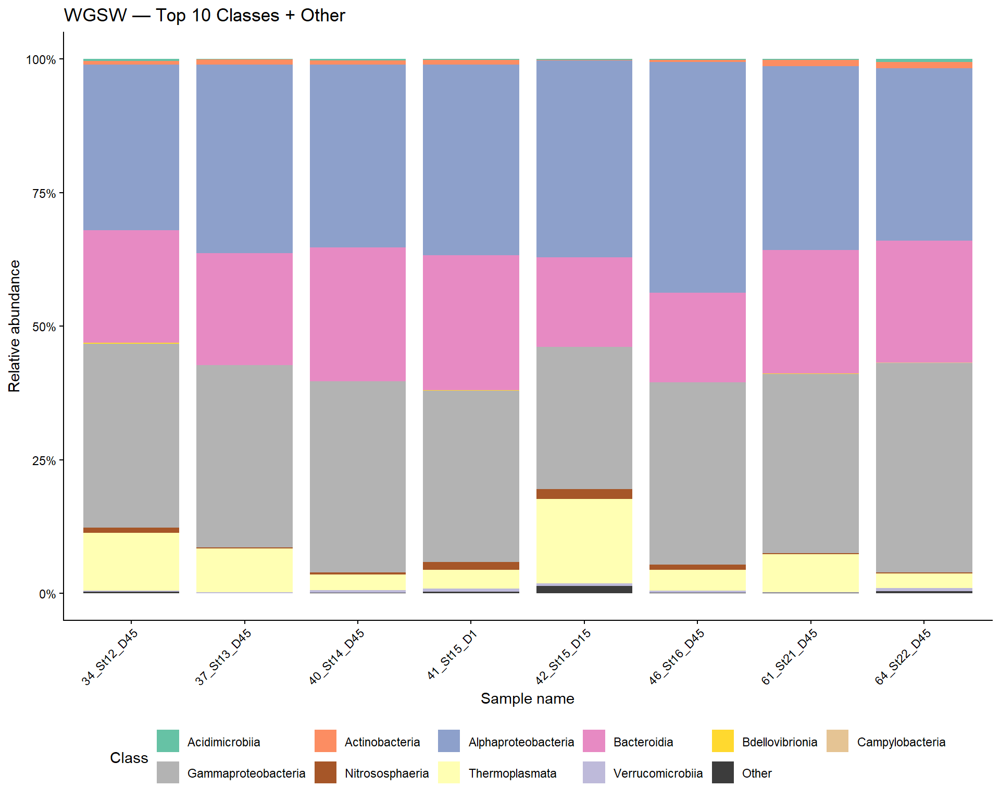
plots[["WGIW"]]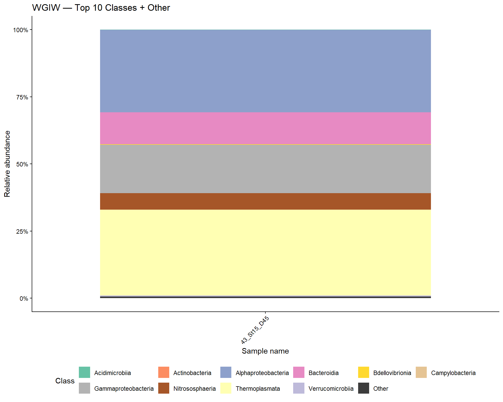
taxa_interest <- c("Thermoplasmata", "Nitrososphaeria","Actinobacteria")
df_interest <- df %>%
filter(Class_plot %in% taxa_interest)
plot_fjord_interest <- function(df, fjord_name){
dff <- df %>% filter(Fjord == fjord_name)
ggplot(dff, aes(x = Station, y = Abundance, fill = Class_plot)) +
geom_col(position = "stack", width = 0.85) +
facet_wrap(~Depth, nrow = 1) +
scale_y_continuous(labels = scales::percent) +
labs(
title = paste0(fjord_name, " 16S — Relative abundance of selected classes"),
x = "Station Number",
y = "Relative abundance",
fill = "Class"
) +
theme_classic() +
theme(
legend.position = "bottom",
axis.text.x = element_text(angle = 45, hjust = 1),
strip.background = element_rect(fill = "white"),
strip.text = element_text(face = "bold")
)
}
plots_interest <- lapply(fjords, function(fj) plot_fjord_interest(df_interest, fj))
names(plots_interest) <- as.character(fjords)
plots_interest[["Sermilik"]]
plots_interest[["Iterdalk"]]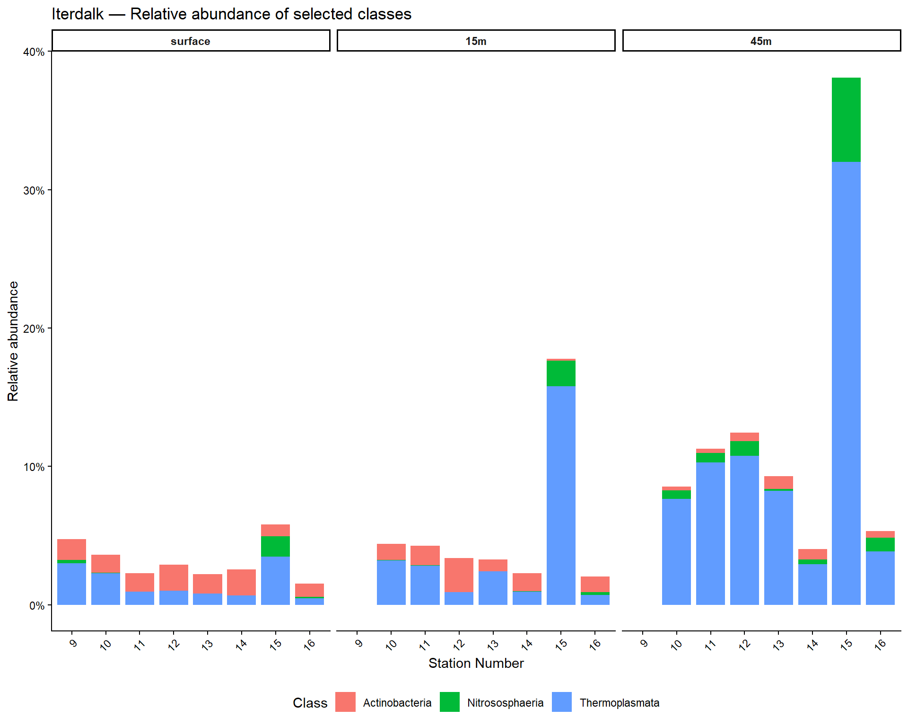
plots_interest[["Tunulliarfik"]]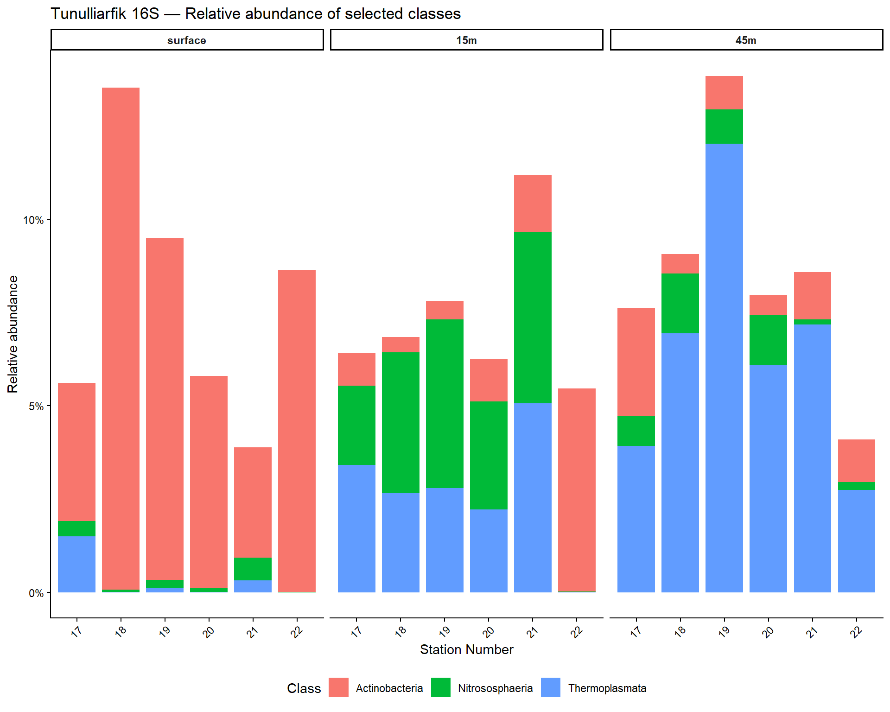
Archaeal communities showed a consistent vertical structure across all three fjords, with both Nitrososphaeria and Thermoplasmata largely absent from surface waters and increasing in abundance with depth. This pattern indicates that archaeal activity is concentrated in subsurface and deeper layers rather than in the surface production zone.
Nitrososphaeria (likely Candidatus Nitrosopumilus) exhibited a strong depth-associated increase, particularly at 45 m, consistent with their role as ammonia-oxidizing archaea involved in nitrification. Their distribution suggests that nitrification primarily occurs in deeper, low-light waters where regenerated ammonium becomes available. In Tunulliarfik, their presence at 15 m indicates a shallower nitrification zone compared to the other fjords.
Thermoplasmata (Marine Group II) were generally more abundant and displayed a broader vertical distribution, with pronounced peaks at depth. This pattern is consistent with their role as heterotrophic archaea involved in organic matter degradation. The particularly high abundance observed in Iterdalik suggests enhanced carbon processing in this fjord.
The co-occurrence of both groups at depth across all fjords suggests a tight coupling between carbon remineralization and nitrogen cycling, whereby organic matter degradation by Thermoplasmata could be fueling ammonium production that is subsequently oxidized by Nitrososphaeria.
Actinobacteria
The Actinobacteria are dominated by Micrococcales which are typically aerobic, heterotrophic, and metabolically versatile. They are well known for their ability to utilise a wide range of organic compounds, including relatively low concentrations of dissolved organic matter, and are often considered oligotrophic or stress-tolerant generalists. Many members of this order are also psychrotolerant, allowing them to persist in cold environments, and are capable of coping with environmental stressors such as variable salinity, high turbidity, and oxidative stress. They were more abundant in surface waters of the inner regions of Sermilik and Tunulliarfik fjords, both influenced by marine-terminating glaciers. This pattern is consistent with strong glacier-driven environmental gradients.
Thermoplasmata and Nitrososphaeria seem to increase and decrease together. At first glance, this could just be coincidence — or simply the result of both groups preferring the same environmental conditions, like deeper waters.
let’s test is this relationship is real:
# Transform to CLR
ps_clr <- transform(ps_16s, "clr")
df <- psmelt(ps_clr)
df_sub <- df %>%
filter(Class %in% c("Thermoplasmata", "Nitrososphaeria")) %>%
group_by(Sample, Depth, Fjord, Class) %>% # 👈 include metadata HERE
summarise(Abundance = sum(Abundance), .groups = "drop") %>%
pivot_wider(
names_from = Class,
values_from = Abundance,
values_fill = 0
)
# Correlation
cor.test(df_sub$Thermoplasmata, df_sub$Nitrososphaeria)
Pearson's product-moment correlation
data: df_sub$Thermoplasmata and df_sub$Nitrososphaeria
t = 8.281, df = 62, p-value = 1.289e-11
alternative hypothesis: true correlation is not equal to 0
95 percent confidence interval:
0.5826770 0.8237591
sample estimates:
cor
0.7246907 # Regression
lm(Thermoplasmata ~ Nitrososphaeria, data = df_sub)
Call:
lm(formula = Thermoplasmata ~ Nitrososphaeria, data = df_sub)
Coefficients:
(Intercept) Nitrososphaeria
10.31 1.24 With r = 0.72 → strong positive correlation and p ≈ 1.3 × 10⁻¹¹ → highly significant, we can say that :“When Nitrososphaeria increases, Thermoplasmata also tends to increase”
The regression tells us that: Thermoplasmata = 10.31 + 1.24 × Nitrososphaeria For every unit increase in Nitrososphaeria, Thermoplasmata increases by ~1.24
Is this a real biological relationship, or just a shared response to environment (e.g. depth)? Let’s improve the model to include depth and fjord:
m2 <- lm(Thermoplasmata ~ Nitrososphaeria + Depth + Fjord, data = df_sub)
summary(m2)
Call:
lm(formula = Thermoplasmata ~ Nitrososphaeria + Depth + Fjord,
data = df_sub)
Residuals:
Min 1Q Median 3Q Max
-17.7115 -3.7915 -0.4039 3.3503 20.8804
Coefficients:
Estimate Std. Error t value Pr(>|t|)
(Intercept) 16.2792 2.3459 6.939 3.71e-09 ***
Nitrososphaeria 0.9189 0.1093 8.405 1.29e-11 ***
Depth15 9.1181 2.6811 3.401 0.00122 **
Depth45 22.2825 3.2887 6.776 6.98e-09 ***
FjordSermilik -22.5077 2.5791 -8.727 3.75e-12 ***
FjordTunulliarfik -14.1188 2.7896 -5.061 4.50e-06 ***
---
Signif. codes: 0 '***' 0.001 '**' 0.01 '*' 0.05 '.' 0.1 ' ' 1
Residual standard error: 8.621 on 58 degrees of freedom
Multiple R-squared: 0.8565, Adjusted R-squared: 0.8441
F-statistic: 69.22 on 5 and 58 DF, p-value: < 2.2e-16The relationship between Thermoplasmata and Nitrososphaeria is real, not just a depth effect!
Thermoplasmata and Nitrososphaeria exhibited a strong positive relationship (p < 0.001), which remained significant after accounting for depth and fjord effects. This suggests potential coupling between archaeal organic matter processing and nitrification processes in glacier-influenced fjord waters.
Note: the fjord effect is telling us that: Thermoplasmata is much lower in Sermilik and Tunulliarfik than in Iterdalik, suggesting environmental differences… it makes sense as Iterdalik is a land-termoianted fjord!
There are a couple of possible explanations:
They may share a similar ecological niche, thriving under the same low-energy, deeper-water conditions.
Or they could be functionally connected. For example:
# Collapse + compositional
ps_class <- tax_glom(ps_16s, taxrank = "Class")
ps_rel <- transform(ps_class, "compositional")
# Top 10 taxa (OTU/ASV IDs after glomming)
top10 <- top_taxa(ps_rel, n = 10)
# Melt full object
df <- psmelt(ps_rel)
# Make Depth nice
df <- df %>%
mutate(
Depth = as.character(Depth),
Depth = if_else(Depth %in% c("1","01","surface","Surface"), "surface",
if_else(Depth %in% c("15","15m","15 m"), "15m",
if_else(Depth %in% c("45","45m","45 m"), "45m", Depth))),
Depth = factor(Depth, levels = c("surface", "15m", "45m")),
Fjord = as.factor(Fjord),
Station = factor(Station, levels = as.character(sort(unique(as.numeric(as.character(Station))))))
)
df <- df %>%
mutate(
Sample_cluster = gsub(".*_St([0-9]+)_D([0-9]+)$", "\\1_\\2", Sample)
)
# Define clusters by Sample names
cluster_list <- list(
Cluster4 = c("9_1", "10_1", "14_45"),
Cluster3 = c("1_45" , "2_45" , "3_45" ,"4_45","8_45" , "10_45" ,"11_45", "12_45",
"13_45", "15_1" , "15_15" , "15_45", "17_15" ,"17_45" ,"18_15", "18_45",
"19_15" ,"19_45" ,"20_15" ,"20_45", "21_45", "22_45"),
Cluster2 = c("1_15" , "2_15" , "3_15", "4_15" , "5_1" , "5_15" , "5_45", "6_1" ,
"6_15" , "6_45" , "7_1" , "7_15" , "7_45" , "8_1" , "8_15" , "10_15",
"11_1", "11_15", "12_1" , "12_15", "13_1", "13_15" , "14_1" , "14_15" ,
"16_1" , "16_15" ,"16_45", "21_15" ,"22_15"),
Cluster1 = c("1_1", "2_1", "3_1", "4_1", "17_1", "18_1", "19_1", "20_1", "21_1", "22_1")
)
# Add Cluster column using Sample_cluster
df <- df %>%
mutate(
Cluster = case_when(
Sample_cluster %in% cluster_list$Cluster1 ~ "Cluster1",
Sample_cluster %in% cluster_list$Cluster2 ~ "Cluster2",
Sample_cluster %in% cluster_list$Cluster3 ~ "Cluster3",
Sample_cluster %in% cluster_list$Cluster4 ~ "Cluster4",
TRUE ~ NA_character_
)
) %>%
filter(!is.na(Cluster))
sample_order <- c(
"22_1", "21_1", "20_1", "19_1", "18_1", "17_1", "4_1", "3_1", "2_1", "1_1",
"22_15", "21_15", "16_45", "16_15", "16_1", "14_15", "14_1", "13_15", "13_1",
"12_15", "12_1", "11_15", "11_1", "10_15", "8_15", "8_1", "7_45", "7_15",
"7_1", "6_45", "6_15", "6_1", "5_45", "5_15", "5_1", "4_15", "3_15", "2_15", "1_15",
"22_45", "21_45", "20_45", "20_15", "19_45", "19_15", "18_45", "18_15",
"17_45", "15_45", "15_15", "15_1", "13_45", "12_45", "11_45", "10_45",
"8_45", "4_45", "3_45", "1_45","14_45", "10_1", "9_1"
)
# Top10 + Other
df <- df %>%
mutate(
Class = as.character(Class),
Class = if_else(is.na(Class) | Class == "", "Unclassified", Class),
Class_plot = if_else(OTU %in% top10, Class, "Other")
) %>%
group_by(Cluster, Sample_cluster, Depth, Sample, Number, Station, Class_plot, Water_mass) %>%
summarise(Abundance = sum(Abundance), .groups = "drop")
# Legend order: Other last
df$Class_plot <- factor(
df$Class_plot,
levels = c(setdiff(sort(unique(df$Class_plot)), "Other"), "Other")
)
# Adding the "other" colour to the last 10 colours of my palette
other_color <- "#3c3c3c"
plot_colors <- c(my_colors[11:20], other_color)
names(plot_colors) <- levels(df$Class_plot)
# Optional: order clusters
df$Cluster <- factor(df$Cluster, levels = c("Cluster1", "Cluster2", "Cluster3", "Cluster4"))
plot_cluster <- function(df, cluster_name){
dff <- df %>%
filter(Cluster == cluster_name) %>%
mutate(
Sample_cluster = as.character(Sample_cluster)
)
# Samples present in this cluster, in the order of your reference figure
cluster_sample_order <- sample_order[
sample_order %in% unique(dff$Sample_cluster)
]
# Optional diagnostic message
missing_from_order <- setdiff(unique(dff$Sample_cluster), sample_order)
if(length(missing_from_order) > 0) {
message(
"Samples in ", cluster_name, " not found in sample_order: ",
paste(missing_from_order, collapse = ", ")
)
}
dff <- dff %>%
filter(Sample_cluster %in% cluster_sample_order) %>%
mutate(
Sample_cluster = factor(
Sample_cluster,
levels = rev(cluster_sample_order)
)
)
ggplot(dff, aes(x = Abundance, y = Sample_cluster, fill = Class_plot)) +
geom_col(width = 0.9) +
scale_fill_manual(values = plot_colors) +
scale_x_continuous(
labels = scales::label_number(scale = 100, accuracy = 1),
breaks = c(0, 0.25, 0.5, 0.75, 1),
limits = c(0, 1),
expand = expansion(mult = c(0, 0.02))
) +
scale_y_discrete(drop = TRUE) +
labs(
title = paste0(cluster_name, " — Top 10 Classes + Other"),
y = "Sample name",
x = "Relative abundance (%)",
fill = "Class"
) +
theme_classic() +
theme(
axis.text.x = element_text(size = 11),
axis.text.y = element_text(size = 11),
axis.title.y = element_text(size = 14),
plot.title = element_text(hjust = 0.5, face = "bold", size = 14),
legend.position = "bottom"
)
}
clusters <- levels(df$Cluster)
plots <- lapply(clusters, function(cl) plot_cluster(df, cl))
names(plots) <- as.character(clusters)
# Print one
plots[["Cluster1"]]
plots[["Cluster2"]]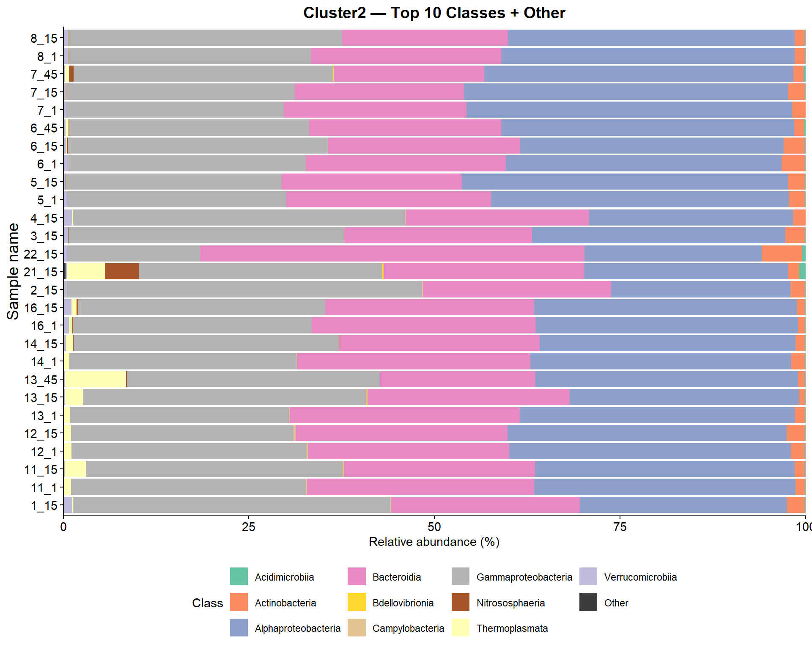
plots[["Cluster3"]]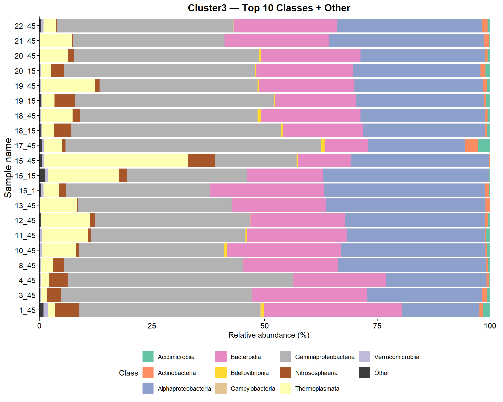
plots[["Cluster4"]]
combined_plot <-
(plots[["Cluster1"]] + plots[["Cluster2"]]) /
(plots[["Cluster3"]] + plots[["Cluster4"]]) +
plot_layout(
guides = "collect",
widths = c(1, 1),
heights = c(0.75, 1.25)
) &
theme(
legend.position = "bottom",
legend.title = element_text(size = 10),
legend.text = element_text(size = 8),
axis.text.y = element_text(size = 6.5),
axis.text.x = element_text(size = 9),
plot.title = element_text(size = 14, face = "bold"),
panel.spacing = unit(1.2, "lines")
)
combined_plot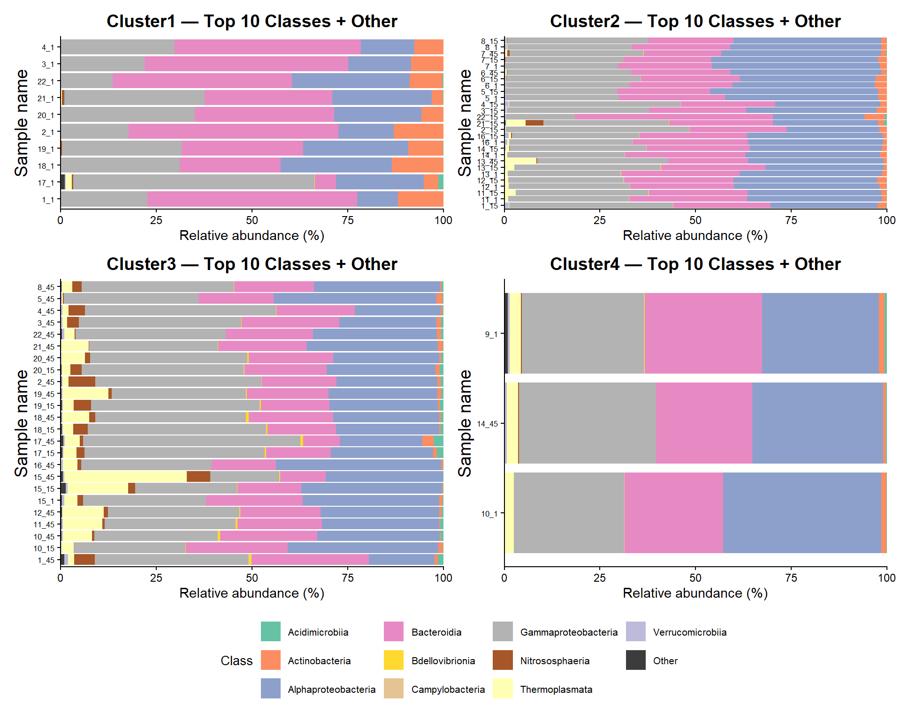
# Collapse + compositional
ps_class <- tax_glom(ps_16s, taxrank = "Order")
ps_rel <- transform(ps_class, "compositional")
# Top 10 taxa (OTU/ASV IDs after glomming)
top10 <- top_taxa(ps_rel, n = 10)
# Melt full object
df <- psmelt(ps_rel)
# Make Depth nice
df <- df %>%
mutate(
Depth = as.character(Depth),
Depth = if_else(Depth %in% c("1","01","surface","Surface"), "surface",
if_else(Depth %in% c("15","15m","15 m"), "15m",
if_else(Depth %in% c("45","45m","45 m"), "45m", Depth))),
Depth = factor(Depth, levels = c("surface", "15m", "45m")),
Fjord = as.factor(Fjord),
Station = factor(Station, levels = as.character(sort(unique(as.numeric(as.character(Station))))))
)
df <- df %>%
mutate(
Sample_cluster = gsub(".*_St([0-9]+)_D([0-9]+)$", "\\1_\\2", Sample)
)
# Define clusters by Sample names
cluster_list <- list(
Cluster4 = c("9_1", "10_1", "14_45"),
Cluster3 = c("1_45" , "2_45" , "3_45" ,"4_45","8_45" , "10_45" ,"11_45", "12_45",
"13_45", "15_1" , "15_15" , "15_45", "17_15" ,"17_45" ,"18_15", "18_45",
"19_15" ,"19_45" ,"20_15" ,"20_45", "21_45", "22_45"),
Cluster2 = c("1_15" , "2_15" , "3_15", "4_15" , "5_1" , "5_15" , "5_45", "6_1" ,
"6_15" , "6_45" , "7_1" , "7_15" , "7_45" , "8_1" , "8_15" , "10_15",
"11_1", "11_15", "12_1" , "12_15", "13_1", "13_15" , "14_1" , "14_15" ,
"16_1" , "16_15" ,"16_45", "21_15" ,"22_15"),
Cluster1 = c("1_1", "2_1", "3_1", "4_1", "17_1", "18_1", "19_1", "20_1", "21_1", "22_1")
)
# Add Cluster column using Sample_cluster
df <- df %>%
mutate(
Cluster = case_when(
Sample_cluster %in% cluster_list$Cluster1 ~ "Cluster1",
Sample_cluster %in% cluster_list$Cluster2 ~ "Cluster2",
Sample_cluster %in% cluster_list$Cluster3 ~ "Cluster3",
Sample_cluster %in% cluster_list$Cluster4 ~ "Cluster4",
TRUE ~ NA_character_
)
) %>%
filter(!is.na(Cluster))
sample_order <- c(
"22_1", "21_1", "20_1", "19_1", "18_1", "17_1", "4_1", "3_1", "2_1", "1_1",
"22_15", "21_15", "16_45", "16_15", "16_1", "14_15", "14_1", "13_15", "13_1",
"12_15", "12_1", "11_15", "11_1", "10_15", "8_15", "8_1", "7_45", "7_15",
"7_1", "6_45", "6_15", "6_1", "5_45", "5_15", "5_1", "4_15", "3_15", "2_15", "1_15",
"22_45", "21_45", "20_45", "20_15", "19_45", "19_15", "18_45", "18_15",
"17_45", "15_45", "15_15", "15_1", "13_45", "12_45", "11_45", "10_45",
"8_45", "4_45", "3_45", "1_45","14_45", "10_1", "9_1"
)
# Top10 + Other
df <- df %>%
mutate(
Order = as.character(Order),
Order = if_else(is.na(Order) | Order == "", "Unclassified", Order),
Order_plot = if_else(OTU %in% top10, Order, "Other")
) %>%
group_by(Cluster, Sample_cluster, Depth, Sample, Number, Station, Order_plot, Water_mass) %>%
summarise(Abundance = sum(Abundance), .groups = "drop")
# Legend order: Other last
df$Order_plot <- factor(
df$Order_plot,
levels = c(setdiff(sort(unique(df$Order_plot)), "Other"), "Other")
)
# Adding the "other" colour to the last 10 colours of my palette
other_color <- "#3c3c3c"
plot_colors <- c(my_colors[11:20], other_color)
names(plot_colors) <- levels(df$Order_plot)
# Optional: order clusters
df$Cluster <- factor(df$Cluster, levels = c("Cluster1", "Cluster2", "Cluster3", "Cluster4"))
df$Sample_cluster <- factor(df$Sample_cluster, levels = rev(c("1_1" , "2_1" , "3_1" , "4_1" ,
"17_1", "18_1", "19_1", "20_1" ,"21_1", "22_1",
"1_15" , "2_15" , "3_15", "4_15" , "5_1" , "5_15" , "6_1" , "6_15" , "6_45" ,
"7_1" , "7_15" , "7_45" , "8_1" , "8_15" , "11_1", "11_15", "12_1" ,
"12_15", "13_1", "13_15" , "13_45", "14_1" ,
"14_15" , "16_1" , "16_15" , "21_15" ,"22_15",
"1_45" , "2_45" , "3_45" ,"4_45", "5_45" ,
"8_45" , "10_15", "10_45" ,"11_45", "12_45", "15_1" ,
"15_15" , "15_45", "16_45" ,"17_15" ,"17_45" ,"18_15", "18_45",
"19_15" ,"19_45" ,"20_15" ,"20_45",
"21_45", "22_45",
"9_1" , "10_1" , "14_45")))
ggplot(df, aes(x = Abundance, y = Sample_cluster, fill = Order_plot)) +
geom_col(width = 0.9) +
scale_fill_manual(values = plot_colors) +
scale_x_continuous(
labels = scales::label_number(scale = 100, accuracy = 1),
breaks = c(0, 0.25, 0.5, 0.75, 1),
limits = c(0, 1),
expand = expansion(mult = c(0, 0.02))
) +
scale_y_discrete(drop = TRUE) +
labs(
title = "Top 10 Order + Other",
y = "Sample name",
x = "Relative abundance (%)",
fill = "Order"
) +
theme_classic() +
theme(
axis.text.x = element_text(size = 11),
axis.text.y = element_text(size = 11),
axis.title.y = element_text(size = 14),
plot.title = element_text(hjust = 0.5, face = "bold", size = 14),
legend.position = "bottom"
)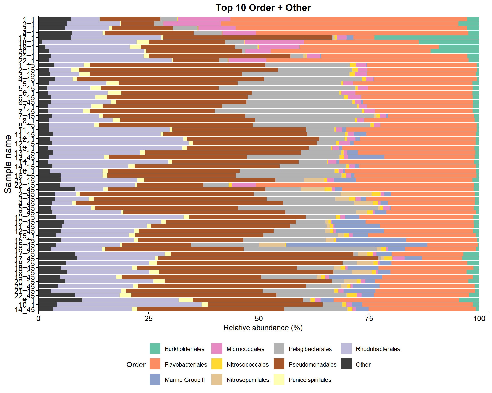
library(tidyverse)
library(phyloseq)
# ---- paths ----
datadir <- "data/18S"
# ---- load DADA2 outputs ----
seqtab.nochim <- readRDS(file.path(datadir, "seqtab_nochim.rds"))
taxa <- readRDS(file.path(datadir, "taxa.rds"))
# Make sure taxonomy is a proper matrix and has consistent column names
taxa <- as.matrix(taxa)
target_cols <- c(
"Kingdom","Subkingdom_1","Subkingdom_2","Phylum","Subphylum","Subphylum_1","Superclass",
"Class","Subclass","Infraclass","Superorder","Order","Suborder_1","Suborder_2","Suborder_3",
"Family","Subfamily","Genus","Subgenus","Species"
)
colnames(taxa) <- target_cols[seq_len(ncol(taxa))]
# Load metadata
metadat <- readxl::read_xlsx(file.path(datadir, "metadata_18S.xlsx")) %>%
mutate(
Date = as.Date(as.numeric(Date), origin = "1899-12-30"),
Time = as.POSIXct(as.numeric(Time) * 86400, origin = "1970-01-01", tz = "UTC"),
Time = format(Time, "%H:%M:%S")
) %>% as.data.frame()
rownames(metadat) <- rownames(seqtab.nochim)
# Create a Phyloseq object
ps_18s <- phyloseq(otu_table(seqtab.nochim, taxa_are_rows = F),
sample_data(metadat),
tax_table(taxa))
cat("🔹 A summary of the phyloseq object \n")🔹 A summary of the phyloseq object ps_18sphyloseq-class experiment-level object
otu_table() OTU Table: [ 16357 taxa and 66 samples ]
sample_data() Sample Data: [ 66 samples by 9 sample variables ]
tax_table() Taxonomy Table: [ 16357 taxa by 20 taxonomic ranks ]# storing the ASV sequences and assigning them with a name and then renaming the taxa object
dna <- Biostrings::DNAStringSet(taxa_names(ps_18s))
names(dna) <- taxa_names(ps_18s)
ps_18s <- merge_phyloseq(ps_18s, dna)
taxa_names(ps_18s) <- paste0("ASV", seq(ntaxa(ps_18s)))# Print sample names, taxonomy ranks, and metadata fields — with explanations
cat("🔹 These are the metadata variables:\n")🔹 These are the metadata variables:print(sample_variables(ps_18s))[1] "Name" "Number" "Station" "Depth" "Date" "Time" "Lat"
[8] "Lon" "Fjord" library(knitr)
library(kableExtra)
ps_controls <- subset_samples(
ps_18s,
Name %in% c("65_Positive_control", "66_Extraction_negative")
)
ps_controls <- prune_taxa(taxa_sums(ps_controls) > 0, ps_controls)
kable(sample_sums(ps_controls), caption = "Number of reads in the controls") %>% kable_styling(full_width = FALSE, position = "center")| x | |
|---|---|
| 65_Positive_control | 438884 |
| 66_Extraction_negative | 243 |
kable(estimate_richness(ps_controls, measures = "Observed"), caption = "Observed richness") %>% kable_styling(full_width = FALSE, position = "center")| Observed | |
|---|---|
| X65_Positive_control | 171 |
| X66_Extraction_negative | 3 |
Those control are less reassuring than the 16S ones:
Positive control: 438k reads, 171 ASVs → 171 ASVs sounds high, but can have different explanations!
Extraction negative: Extraction negative: 243 reads, 3 ASVs → This is still very low, but higher than the 16S negative (which had 4 reads).
Let’s dive into it!
df_neg <- psmelt(ps_controls) %>%
filter(Sample == "66_Extraction_negative") %>%
group_by(Genus, Family, Phylum) %>%
summarise(Reads = sum(Abundance)) %>%
arrange(desc(Reads))
df_neg %>% head(2) %>% kable()| Genus | Family | Phylum | Reads |
|---|---|---|---|
| Ansanella | Suessiaceae | Myzozoa | 205 |
| Protodinium | Dinoflagellata_incertae_sedis_EXT | Myzozoa | 38 |
The 18S extraction negative control contained 243 reads distributed across two dinoflagellate genera that (as we will see later) are also abundant in the environmental samples. Given the low read count (~0.1% of a average sample depth) and taxonomic identity, these sequences likely reflect minimal index cross-talk rather than true contamination. No need for decontamination!
df_pos <- psmelt(ps_controls) %>%
filter(Sample == "65_Positive_control")
df_pos %>%
group_by(OTU) %>%
summarise(Reads = sum(Abundance)) %>%
arrange(desc(Reads)) %>%
slice(1:10) %>% kable()| OTU | Reads |
|---|---|
| ASV15 | 272251 |
| ASV56 | 56991 |
| ASV327 | 5966 |
| ASV346 | 5450 |
| ASV1 | 5371 |
| ASV423 | 3887 |
| ASV433 | 3722 |
| ASV493 | 2968 |
| ASV587 | 2320 |
| ASV602 | 2263 |
From the Zymo standard, we are expecting 2 yeasts:
🍄 Yeasts:
The 18S positive control was dominated by the expected yeast taxa (Saccharomyces cerevisiae and Cryptococcus spp.), confirmed via BLAST analysis (the MZG database is not adapted in this case).
However, several marine dinoflagellate ASVs were also detected at low relative abundance (~1–2% each). Given the dominance of yeast sequences and the minimal read count in the extraction negative control, these minor marine taxa most likely reflect low-level cross-contamination during PCR or library preparation rather than sample mislabeling or widespread contamination. The overall composition confirms successful amplification of the mock community while indicating minor carryover from environmental samples.
We can now remove the controls from the phyloseq object and move on with the ecological interpretation.
# Environmental samples only
ps_18s <- subset_samples(
ps_18s,
!Name %in% c("65_Positive_control", "66_Extraction_negative")
)
# Remove zero taxa
ps_18s <- prune_taxa(taxa_sums(ps_18s) > 0, ps_18s)
# saveRDS(ps_18s, "data/ps_18s.rds")In this section, we explore the community structure of the RoCSI 18S dataset using the phyloseq object (ps_18s) generated above. We start by visualising read depth per sample, followed by basic taxonomic composition summaries.
read_depth <- data.frame(
Sample = sample_names(ps_18s),
Reads = sample_sums(ps_18s),
check.names = FALSE
)
ggplot(read_depth, aes(x = Sample, y = Reads)) +
geom_col() +
theme_minimal() + scale_y_continuous(labels = scales::label_number()) +
theme(axis.text.x = element_text(angle = 45, hjust = 1)) + # Rotate x-axis labels for better readability
scale_x_discrete(
labels = function(x) substr(x, 1, 6), # Show only the first 5 characters of each label
breaks = function(x) x[seq(1, length(x), by = 4)] # Show every 4th label
) +
labs(
title = "Sequencing depth per sample",
x = "Sample",
y = "Number of non-chimeric reads"
)
# Make sure Water_masses is a factor (optional, but useful for consistent plotting)
sample_data(ps_18s)$Fjord <- as.factor(sample_data(ps_18s)$Fjord)
plot_richness(
ps_18s,
x = "Number",
measures = c("Observed", "Shannon", "Simpson"),
color = "Fjord", title = "18S Alpha diversity") +
scale_x_discrete(breaks = function(x) x[seq(1, length(x), by = 4)]) +
theme(axis.text.x = element_text(angle = 45, hjust = 1))
Alpha diversity of 18S eukaryotic communities varied among fjords, with Ocean and Tunulliarfik samples generally exhibiting higher richness compared to Sermilik. Shannon and Simpson indices indicate relatively high evenness across most samples, although occasional dominance events were observed (diversity drops), particularly in Sermilik and Tunulliarfik. Compared to 16S prokaryotic diversity, 18S communities displayed greater variability among fjords, suggesting that eukaryotic plankton communities may be more sensitive to local environmental gradients such as stratification and meltwater influence.
# Make sure Water_masses is a factor (optional, but useful for consistent plotting)
sample_data(ps_18s)$Fjord <- as.factor(sample_data(ps_18s)$Fjord)
sample_data(ps_18s)$Depth <- as.factor(sample_data(ps_18s)$Depth)
plot_richness(
ps_18s,
x = "Number",
measures = c("Observed", "Shannon", "Simpson"),
color = "Depth", title = "18S Alpha diversity") +
scale_x_discrete(breaks = function(x) x[seq(1, length(x), by = 4)]) +
theme(axis.text.x = element_text(angle = 45, hjust = 1))No obvious trends with depth… Maybe surface water tend to exhibit lower diversity…
ord <- ordinate(ps_18s, method = "PCoA", distance = "bray")
# Create the ordination plot with ellipses
plot_ordination(ps_18s, ord, color = "Fjord") +
geom_point(size = 3) +
ggtitle("Ordination – 18S") +
stat_ellipse(aes(group = Fjord), type = "norm", linetype = "dashed", size = 1) +
theme_minimal()
The 18S ordination reveals partial clustering by fjord but with substantial overlap among systems. Compared to the 16S bacterial communities, eukaryotic assemblages show greater within-fjord variability and weaker separation among fjords. Tunulliarfik displays the highest dispersion, consistent with elevated alpha diversity and environmental heterogeneity. Overall, these results suggest that while fjord identity influences eukaryotic community structure, planktonic assemblages may be shaped more strongly by shared regional drivers such as stratification and bloom dynamics than by fjord-specific environmental filtering alone.
# Extract sample coordinates from the PCoA result
site <- as.data.frame(ord$vectors)
site$SampleID <- rownames(site)
# Get the 5 lowest values on Axis.1 (side of plot)
bottom5 <- site[order(site$Axis.1), ][1:5, c("SampleID", "Axis.1", "Axis.2")]
kable(bottom5) %>% kable_styling(full_width = FALSE, position = "center")| SampleID | Axis.1 | Axis.2 | |
|---|---|---|---|
| 50_St18_D1 | 50_St18_D1 | -0.3679453 | -0.3018036 |
| 56_St20_D1 | 56_St20_D1 | -0.3628814 | -0.1845450 |
| 04_St2_D1 | 04_St2_D1 | -0.3416142 | -0.3236995 |
| 10_St4_D1 | 10_St4_D1 | -0.3276851 | -0.2928791 |
| 01_St1_D1 | 01_St1_D1 | -0.3265305 | -0.2939818 |
Again, the most divergent samples in the ordination correspond exclusively to surface (D1) samples. Particularly they are the stations surrounded by icebergs (Fjord Sermilik and Tunulliarfik). These stations were influenced by meltwater and low salinity conditions, suggesting that surface stratification and freshwater input may exert a strong effect on eukaryotic community composition.
tax_df <- as.data.frame(tax_table(ps_18s))
unclassified_summary <- tax_df %>%
summarise(across(
everything(),
~ sum(
is.na(.) |
. == "" |
. == "Unclassified"
)
)) %>%
pivot_longer(
everything(),
names_to = "Rank",
values_to = "n_unclassified_ASVs"
) %>%
mutate(
percent_unclassified = round(
100 * n_unclassified_ASVs / ntaxa(ps_18s),
1
)
)
unclassified_summary# A tibble: 20 × 3
Rank n_unclassified_ASVs percent_unclassified
<chr> <int> <dbl>
1 Kingdom 756 4.7
2 Subkingdom_1 966 6
3 Subkingdom_2 1024 6.3
4 Phylum 1181 7.3
5 Subphylum 1236 7.6
6 Subphylum_1 1291 8
7 Superclass 1309 8.1
8 Class 1524 9.4
9 Subclass 1664 10.3
10 Infraclass 1664 10.3
11 Superorder 1762 10.9
12 Order 6327 39.1
13 Suborder_1 6490 40.1
14 Suborder_2 6490 40.1
15 Suborder_3 6491 40.1
16 Family 7118 44
17 Subfamily 7168 44.3
18 Genus 8295 51.2
19 Subgenus 8295 51.2
20 Species 9028 55.8unclassified_summary <- unclassified_summary %>%
mutate(
Rank = factor(Rank, levels = target_cols)
)
ggplot(unclassified_summary,
aes(x = Rank, y = percent_unclassified)) +
geom_col() +
theme_classic() +
labs(
x = "Taxonomic rank",
y = "% unclassified ASVs"
)+
theme(
axis.text.x = element_text(
angle = 45,
hjust = 1
)
)
Maybe I should use a different database than MZG for assigning taxonomy…? Would the number of unassigned ASVs decrease?
# library(dada2)
#
# seqtab.nochim <- readRDS(file.path("data/18S", "seqtab_nochim.rds"))
#
# taxa_pr2 <- assignTaxonomy(
# seqs = seqtab.nochim,
# refFasta = "../pr2_version_5.1.1_SSU_dada2.fasta.gz",
# multithread = TRUE,
# minBoot = 50,
# taxLevels = c(
# "Domain",
# "Supergroup",
# "Division",
# "Subdivision",
# "Class",
# "Order",
# "Family",
# "Genus",
# "Species"
# )
# )
taxa_pr2 <- readRDS("data/18S/taxa_pr2.rds")
seqtab.nochim <- readRDS("data/18S/seqtab_nochim.rds")
# Load metadata
metadat <- readxl::read_xlsx("data/18S/metadata_18S.xlsx") %>%
mutate(
Date = as.Date(as.numeric(Date), origin = "1899-12-30"),
Time = as.POSIXct(as.numeric(Time) * 86400, origin = "1970-01-01", tz = "UTC"),
Time = format(Time, "%H:%M:%S")
) %>% as.data.frame()
rownames(metadat) <- rownames(seqtab.nochim)
# Create a Phyloseq object
ps_18s_pr2 <- phyloseq(otu_table(seqtab.nochim, taxa_are_rows = F),
sample_data(metadat),
tax_table(taxa_pr2))
cat("🔹 A summary of the phyloseq object \n")🔹 A summary of the phyloseq object ps_18s_pr2phyloseq-class experiment-level object
otu_table() OTU Table: [ 16357 taxa and 66 samples ]
sample_data() Sample Data: [ 66 samples by 9 sample variables ]
tax_table() Taxonomy Table: [ 16357 taxa by 9 taxonomic ranks ]# storing the ASV sequences and assigning them with a name and then renaming the taxa object
dna <- Biostrings::DNAStringSet(taxa_names(ps_18s_pr2))
names(dna) <- taxa_names(ps_18s_pr2)
ps_18s_pr2 <- merge_phyloseq(ps_18s_pr2, dna)
taxa_names(ps_18s_pr2) <- paste0("ASV", seq(ntaxa(ps_18s_pr2)))# Environmental samples only
ps_18s_pr2 <- subset_samples(
ps_18s_pr2,
!Name %in% c("65_Positive_control", "66_Extraction_negative")
)
# Remove zero taxa
ps_18s_pr2 <- prune_taxa(taxa_sums(ps_18s_pr2) > 0, ps_18s_pr2)
saveRDS(ps_18s_pr2, "data/ps_18s_pr2.rds")tax_df <- as.data.frame(tax_table(ps_18s_pr2))
unclassified_summary <- tax_df %>%
summarise(across(
everything(),
~ sum(
is.na(.) |
. == "" |
. == "Unclassified"
)
)) %>%
pivot_longer(
everything(),
names_to = "Rank",
values_to = "n_unclassified_ASVs"
) %>%
mutate(
percent_unclassified = round(
100 * n_unclassified_ASVs / ntaxa(ps_18s),
1
)
)
unclassified_summary# A tibble: 9 × 3
Rank n_unclassified_ASVs percent_unclassified
<chr> <int> <dbl>
1 Domain 22 0.1
2 Supergroup 125 0.8
3 Division 149 0.9
4 Subdivision 193 1.2
5 Class 261 1.6
6 Order 2752 17
7 Family 3497 21.6
8 Genus 3992 24.7
9 Species 4621 28.5taxLevels = c("Domain", "Supergroup","Division", "Subdivision","Class",
"Order","Family", "Genus","Species")
unclassified_summary <- unclassified_summary %>%
mutate(
Rank = factor(Rank, levels = taxLevels)
)
ggplot(unclassified_summary,
aes(x = Rank, y = percent_unclassified)) +
geom_col() +
theme_classic() +
labs(
x = "Taxonomic rank",
y = "% unclassified ASVs"
)+
theme(
axis.text.x = element_text(
angle = 45,
hjust = 1
)
)
Ok so from now on, ps_18S is replaced by ps_18S_PR2 as it has far less unassigned ASVs! Eventually, later we can complement the assignment with the MZG database.
ps_18s <- ps_18s_pr2my_colors <- c("#FF6666", "#8DD3C7", "#377EB8", "#4DAF4A",
"#984EA3", "#A6D854", "#FFFF33", "#FF7F00", "#F781BF", "#999999", "#66C2A5", "#FC8D62", "#8DA0CB", "#E78AC3", "#FFD92F",
"#E5C494", "#B3B3B3", "#A65628","#FFFFB3", "#BEBADA",
"#FB8072", "#80B1D3", "#FDB462")
library(microbiome)
# 1) Agglomerate to Phylum
ps_phylum <- tax_glom(ps_18s, taxrank = "Subdivision")
# 2) Transform to relative abundance (compositional)
ps_rel <- microbiome::transform(ps_phylum, "compositional")
# 3) Top 20 taxa by mean relative abundance (returns taxa_names / OTU IDs)
top20 <- microbiome::top_taxa(ps_rel, n = 20)
# 4) Melt full object
df <- psmelt(ps_rel)
# Ensure Phylum label exists and is character (handles NAs)
df <- df %>%
mutate(
Subdivision = as.character(Subdivision),
Subdivision = if_else(is.na(Subdivision) | Subdivision == "", "Unassigned", Subdivision),
Subdivision_plot = if_else(OTU %in% top20, Subdivision, "Other")
) %>%
group_by(Sample, Number, Subdivision_plot) %>%
summarise(Abundance = sum(Abundance), .groups = "drop")
# Put "Other" at the end of the legend
df$Subdivision_plot <- factor(
df$Subdivision_plot,
levels = c(setdiff(unique(df$Subdivision_plot), "Other"), "Other")
)
# 5) Colors: 20 phyla + Other
other_color <- "#C0C0C0"
plot_colors <- c(my_colors[1:20], other_color)
# Optional: make sure color vector matches factor levels exactly
levels_Subdivision <- levels(df$Subdivision_plot)
names(plot_colors) <- levels_Subdivision # map colors to labels
# 6) Plot
ggplot(df, aes(x = Number, y = Abundance, fill = Subdivision_plot)) +
geom_col(width = 0.8) +
scale_fill_manual(values = plot_colors) +
scale_y_continuous(labels = scales::percent) +
labs(
title = "Eukaryote Subdivision (Top 20 + Other)",
x = "Sample Number",
y = "Relative abundance (%)",
fill = "Subdivision"
) +
theme_classic() +
theme(
axis.text.x = element_text(angle = 45, hjust = 1),
legend.position = "bottom",
legend.direction = "horizontal"
) +
guides(fill = guide_legend(nrow = 4)) # increase if still crowded
At the Phylum level, eukaryotic communities are strongly dominated by Myzozoa, likely dinoflagellate lineages, across most samples. Bacillariophyta (diatoms) and Chlorophyta (green algae) contribute variably among samples, reflecting potential shifts in primary producer composition.
# 1️⃣ Collapse to Class level
ps_Class <- tax_glom(ps_18s, taxrank = "Class")
# 2️⃣ Transform to relative abundance
ps_rel <- transform(ps_Class, "compositional")
# 3️⃣ Get top 10 classes (by mean relative abundance)
top10 <- top_taxa(ps_rel, n = 10)
# 4️⃣ Melt full dataset
df <- psmelt(ps_rel)
df$Number <- as.factor(df$Number)
# 5️⃣ Create Class_plot column (Top 10 + Other)
df <- df %>%
mutate(
Class = as.character(Class),
Class = if_else(is.na(Class) | Class == "", "Unclassified", Class),
Class_plot = if_else(OTU %in% top10, Class, "Other")
) %>%
group_by(Sample, Number, Class_plot) %>%
summarise(Abundance = sum(Abundance), .groups = "drop")
# 6️⃣ Put "Other" at the end of legend
df$Class_plot <- factor(
df$Class_plot,
levels = c(setdiff(sort(unique(df$Class_plot)), "Other"), "Other")
)
# 7️⃣ Use your my_colors (first 10) + grey for Other
other_color <- "#C0C0C0"
plot_colors <- c(my_colors[1:10], other_color)
names(plot_colors) <- levels(df$Class_plot)
# 8️⃣ Plot
ggplot(df, aes(x = Number, y = Abundance, fill = Class_plot)) +
geom_bar(stat = "identity", position = "stack") +
scale_fill_manual(values = plot_colors) +
scale_y_continuous(labels = scales::percent) +
labs(
title = "Top 10 classes + Other",
x = "Sample Number",
y = "Relative Abundance (%)",
fill = "Class"
) +
theme_minimal() +
theme(
axis.text.x = element_text(angle = 45, hjust = 1),
legend.position = "bottom"
) +
guides(fill = guide_legend(nrow = 2, byrow = TRUE)) +
scale_x_discrete(
labels = function(x) substr(x, 1, 5),
breaks = function(x) x[seq(1, length(x), by = 4)]
)
At the Class level, eukaryotic communities were strongly dominated by Dinophyceae (dinoflagellates) across most samples, with episodic increases in Bacillariophyceae (diatoms) and copepods. These patterns suggest that dinoflagellates and associated trophic interactions play a central role in structuring the planktonic community. Compared to bacterial communities, 18S profiles exhibit stronger dominance patterns and greater patchiness.
NOTE: Dinoflagellates can have extremely high numbers of 18S rRNA gene copies per cell (~ 1000 to ~ 10.000)! –> One dinoflagellate cell can produce the same number of reads as hundreds or thousands of other cells
Better to say: likely dominant, but their relative abundance is exaggerated by molecular biases.
NOTE: Mamiellophyceae are often the numerically dominant group but they have low 18S copy number tendency and are likely under-represented!
# Collapse + compositional
ps_Class <- tax_glom(ps_18s, taxrank = "Class")
ps_rel <- transform(ps_Class, "compositional")
# Top 10 taxa (OTU/ASV IDs after glomming)
top10 <- top_taxa(ps_rel, n = 10)
# Melt full object
df <- psmelt(ps_rel)
# Make Depth nice (adapt if your Depth column differs)
df <- df %>%
mutate(
Depth = as.character(Depth),
Depth = if_else(Depth %in% c("1","01","surface","Surface"), "surface",
if_else(Depth %in% c("15","15m","15 m"), "15m",
if_else(Depth %in% c("45","45m","45 m"), "45m", Depth))),
Depth = factor(Depth, levels = c("surface", "15m", "45m")),
Fjord = as.factor(Fjord),
Station = factor(Station, levels = as.character(sort(unique(as.numeric(Station)))))
)
# Top10 + Other
df <- df %>%
mutate(
Class = as.character(Class),
Class = if_else(is.na(Class) | Class == "", "Unclassified", Class),
Class_plot = if_else(OTU %in% top10, Class, "Other")
) %>%
group_by(Fjord, Depth, Sample, Number, Station, Class_plot) %>%
summarise(Abundance = sum(Abundance), .groups = "drop")
# Legend order: Other last
df$Class_plot <- factor(
df$Class_plot,
levels = c(setdiff(sort(unique(df$Class_plot)), "Other"), "Other")
)
# Colors: use your palette (first 10) + Other
other_color <- "#C0C0C0"
plot_colors <- c(my_colors[1:10], other_color)
names(plot_colors) <- levels(df$Class_plot)
plot_fjord <- function(df, fjord_name){
dff <- df %>% filter(Fjord == fjord_name)
ggplot(dff, aes(x = Station, y = Abundance, fill = Class_plot)) +
geom_col(width = 0.9) +
facet_grid(rows = vars(Depth), switch = "y") +
scale_fill_manual(values = plot_colors) +
scale_y_continuous(labels = scales::label_number(scale = 100, accuracy = 1),
breaks = c(0, 0.25, 0.5, 0.75, 1),
limits = c(0, 1),
expand = c(0, 0)
) +
labs(
title = paste0(fjord_name, " — Top 10 Classes + Other"),
x = "Station Number",
y = "Relative abundance (%)",
fill = "Class"
) +
theme_classic() +
theme(
strip.background = element_blank(),
strip.placement = "outside",
strip.text.y.left = element_text(angle = 0, face = "bold", size = 12),
panel.spacing.y = unit(1, "lines"),
axis.text.x = element_text(size = 11),
axis.text.y = element_text(size = 11),
axis.title.y = element_text(size = 14),
plot.title = element_text(hjust = 0.5, face = "bold", size = 16),
legend.position = "bottom"
) +
guides(fill = guide_legend(nrow = 3, byrow = TRUE))
}
fjords <- sort(unique(df$Fjord))
plots <- lapply(fjords, function(fj) plot_fjord(df, fj))
names(plots) <- as.character(fjords)
# Print one (e.g., Sermilik)
plots[["Sermilik"]]
plots[["Iterdalk"]]
plots[["Tunulliarfik"]]
plot_colors <- c(
"Bacillariophyceae" = "#0b6e1a", # diatoms -> dark green
"Dinophyceae" = "#2B55DB", # dinoflagellates -> blue
"Arthropoda" = "#FF4343", # crustacea / copepods -> red
"Cryptophyceae" = "#984EA3", # flagellates -> purple
"Oligotrichea" = "#f0e442", # ciliates -> light grey
# no clear direct match in the reference, so choose distinct extras
"Choanoflagellatea" = "#8dd3c7",
"Chrysophyceae" = "#FF7F00",
"Mamiellophyceae" = "#d9d9d9",
"Pyramimonadophyceae" = "#A6D854",
"Protozoa_incertae_sedis_EXT" = "#e377c2",
"Other" = "#3c3c3c"
)
plot_fjord <- function(df, fjord_name){
dff <- df %>% filter(Fjord == fjord_name)
ggplot(dff, aes(x = Station, y = Abundance, fill = Class_plot)) +
geom_col(width = 0.9) +
facet_grid(rows = vars(Depth), switch = "y") +
scale_fill_manual(values = plot_colors) +
scale_y_continuous(labels = scales::label_number(scale = 100, accuracy = 1),
breaks = c(0, 0.25, 0.5, 0.75, 1),
limits = c(0, 1),
expand = c(0, 0)
) +
labs(
title = fjord_name,
fill = "Class"
) +
theme_classic() +
theme(
strip.background = element_blank(),
strip.placement = "outside",
strip.text.y.left = element_text(angle = 0, face = "bold", size = 12),
panel.spacing.y = unit(1, "lines"),
axis.text.x = element_text(size = 11),
axis.text.y = element_text(size = 11),
axis.title.y = element_blank(),
plot.title = element_text(hjust = 0.5, face = "bold", size = 16),
legend.position = "none"
) +
guides(fill = guide_legend(nrow = 2, byrow = TRUE))
}
fjords <- sort(unique(df$Fjord))
plots <- lapply(fjords, function(fj) plot_fjord(df, fj))
names(plots) <- as.character(fjords)
plots[["Tunulliarfik"]] <- plots[["Tunulliarfik"]] +
theme(axis.text.y = element_blank(),
axis.ticks.y = element_blank()) +
theme(strip.text.y.left = element_blank())
plots[["Iterdalk"]] <- plots[["Iterdalk"]] +
theme(axis.text.y = element_blank(),
axis.ticks.y = element_blank()) +
theme(strip.text.y.left = element_blank())
library(patchwork)
plots[["Sermilik"]] +
plots[["Tunulliarfik"]] +
plots[["Iterdalk"]] +
plot_layout(ncol = 3, guides = "collect") &
labs(x = "Station Number", y = "Relative abundance (%)") &
theme(legend.position = "bottom")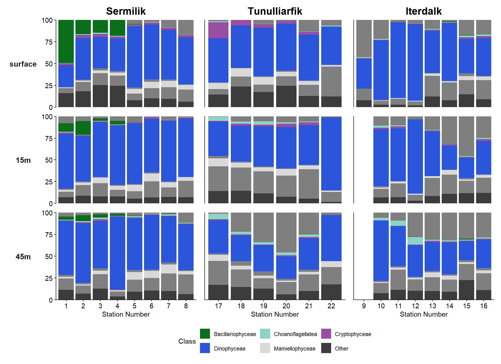
NOTE We should probably use 18S gene copy number (GCN) correction factors for marine eukaryotes to correct this biases of 18S GCN!
REf: Martin et al. (2022): “Towards quantitative metabarcoding of eukaryotic plankton: an approach to improve 18S rRNA gene copy number bias” https://doi.org/10.3897/mbmg.6.85794
# Make a class-level GCN table
gcn_table <- tibble(
Class = c(
"Dinophyceae","Oligotrichea","Bacillariophyceae",
"Cryptophyceae","Mamiellophyceae","Pyramimonadophyceae",
"Chrysophyceae","Choanoflagellatea","Copepoda",
"Protozoa incertae sedis","Other / Unclassified"
),
GCN = c(5000, 20000, 20, 300, 4, 10, 100, 50,
500, 1000, 1 ),
Evidence = c("High","High","High","Medium","High","Medium",
"Medium","Low","Low","Low","NA"),
Reference = c("Gong & Marchetti 2019; Galluzzi et al. 2010",
"Lapeyra Martin et al. 2022","Gong & Marchetti 2019",
"Lapeyra Martin et al. 2022", "Gong & Marchetti 2019",
"Gong & Marchetti 2019 (proxy)","Lapeyra Martin et al. 2022 (proxy)",
"Proxy estimate", "Proxy estimate",
"Proxy estimate", "Not corrected"
)
)
library(gt)
gcn_table %>%
gt() %>%
tab_header(
title = "Class-level 18S rRNA Gene Copy Number Corrections",
) %>%
cols_label(
Class = "Taxonomic Class",
GCN = "GCN Value",
Evidence = "Confidence",
Reference = "Reference"
) %>%
fmt_number(
columns = GCN,
decimals = 0
) %>%
tab_style(
style = cell_text(weight = "bold"),
locations = cells_column_labels(everything())) %>%
data_color(
columns = Evidence,
colors = c(
"High" = "darkgreen",
"Medium" = "orange",
"Low" = "red"
)
)| Class-level 18S rRNA Gene Copy Number Corrections | |||
| Taxonomic Class | GCN Value | Confidence | Reference |
|---|---|---|---|
| Dinophyceae | 5,000 | High | Gong & Marchetti 2019; Galluzzi et al. 2010 |
| Oligotrichea | 20,000 | High | Lapeyra Martin et al. 2022 |
| Bacillariophyceae | 20 | High | Gong & Marchetti 2019 |
| Cryptophyceae | 300 | Medium | Lapeyra Martin et al. 2022 |
| Mamiellophyceae | 4 | High | Gong & Marchetti 2019 |
| Pyramimonadophyceae | 10 | Medium | Gong & Marchetti 2019 (proxy) |
| Chrysophyceae | 100 | Medium | Lapeyra Martin et al. 2022 (proxy) |
| Choanoflagellatea | 50 | Low | Proxy estimate |
| Copepoda | 500 | Low | Proxy estimate |
| Protozoa incertae sedis | 1,000 | Low | Proxy estimate |
| Other / Unclassified | 1 | NA | Not corrected |
# Create a GCN-corrected phyloseq object at Class level
library(phyloseq)
library(dplyr)
library(forcats)
# 1) Class-level counts
df_gcn <- ps_18s %>%
tax_glom(taxrank = "Class", NArm = FALSE) %>%
psmelt() %>%
mutate(
Class = if_else(is.na(Class) | Class == "", "Unclassified", as.character(Class)),
Depth = case_when(
Depth %in% c("1","01","surface","Surface") ~ "surface",
Depth %in% c("15","15m","15 m") ~ "15m",
Depth %in% c("45","45m","45 m") ~ "45m",
TRUE ~ as.character(Depth)
),
Depth = factor(Depth, levels = c("surface", "15m", "45m")),
Fjord = as.factor(Fjord),
Station = factor(Station, levels = as.character(sort(unique(as.numeric(as.character(Station))))))
) %>%
left_join(gcn_table, by = "Class") %>%
mutate(
GCN = coalesce(GCN, 1),
Abundance = Abundance / GCN
)
# 2) Top 10 classes after GCN correction
top10_classes <- df_gcn %>%
group_by(Class) %>%
summarise(total = sum(Abundance), .groups = "drop") %>%
slice_max(total, n = 10) %>%
pull(Class)
# 3) Top 10 + Other, then compositional within sample
df_gcn <- df_gcn %>%
mutate(Class_plot = if_else(Class %in% top10_classes, Class, "Other")) %>%
group_by(Fjord, Depth, Sample, Number, Station, Class_plot) %>%
summarise(Abundance = sum(Abundance), .groups = "drop") %>%
group_by(Fjord, Depth, Sample, Number, Station) %>%
mutate(Abundance = Abundance / sum(Abundance)) %>%
ungroup()
# 4) Legend order
df_gcn$Class_plot <- factor(
df_gcn$Class_plot,
levels = c(setdiff(sort(unique(df_gcn$Class_plot)), "Other"), "Other")
)
plot_fjord <- function(df_gcn, fjord_name){
dff <- df_gcn %>% filter(Fjord == fjord_name)
ggplot(dff, aes(x = Station, y = Abundance, fill = Class_plot)) +
geom_col(width = 0.9) +
facet_grid(rows = vars(Depth), switch = "y") +
scale_fill_manual(values = plot_colors) +
scale_y_continuous(labels = scales::label_number(scale = 100, accuracy = 1),
breaks = c(0, 0.25, 0.5, 0.75, 1),
limits = c(0, 1),
expand = c(0, 0)
) +
labs(
title = fjord_name,
fill = "Class"
) +
theme_classic() +
theme(
strip.background = element_blank(),
strip.placement = "outside",
strip.text.y.left = element_text(angle = 0, face = "bold", size = 12),
panel.spacing.y = unit(1, "lines"),
axis.text.x = element_text(size = 11),
axis.text.y = element_text(size = 11),
axis.title.y = element_blank(),
plot.title = element_text(hjust = 0.5, face = "bold", size = 16),
legend.position = "none"
) +
guides(fill = guide_legend(nrow = 2, byrow = TRUE))
}
fjords <- sort(unique(df_gcn$Fjord))
plots <- lapply(fjords, function(fj) plot_fjord(df_gcn, fj))
names(plots) <- as.character(fjords)
plots[["Tunulliarfik"]] <- plots[["Tunulliarfik"]] +
theme(axis.text.y = element_blank(),
axis.ticks.y = element_blank()) +
theme(strip.text.y.left = element_blank())
plots[["Iterdalk"]] <- plots[["Iterdalk"]] +
theme(axis.text.y = element_blank(),
axis.ticks.y = element_blank()) +
theme(strip.text.y.left = element_blank())
library(patchwork)
plots[["Sermilik"]] +
plots[["Tunulliarfik"]] +
plots[["Iterdalk"]] +
plot_layout(ncol = 3, guides = "collect") &
labs(x = "Station Number", y = "Relative abundance (%)") &
theme(legend.position = "bottom")
taxa_interest <- c("Mamiellophyceae", "Oligotrichea","Choanoflagellatea")
df_interest <- df %>%
filter(Class_plot %in% taxa_interest)
plot_fjord_interest <- function(df, fjord_name){
dff <- df %>% filter(Fjord == fjord_name)
ggplot(dff, aes(x = Station, y = Abundance, fill = Class_plot)) +
geom_col(position = "stack", width = 0.85) +
facet_grid(rows = vars(Depth), switch = "y") +
scale_y_continuous(labels = scales::percent) +
labs(
title = fjord_name,
x = "Station Number",
y = "Relative abundance",
fill = "Class"
) +
theme_classic() +
theme(
legend.position = "bottom",
axis.text.x = element_text(angle = 45, hjust = 1),
strip.background = element_rect(fill = "white"),
strip.text = element_text(face = "bold")
)
}
plots_interest <- lapply(fjords, function(fj) plot_fjord_interest(df_interest, fj))
names(plots_interest) <- as.character(fjords)
plots_interest[["Tunulliarfik"]] <- plots_interest[["Tunulliarfik"]] +
theme(axis.text.y = element_blank(),
axis.ticks.y = element_blank()) +
theme(strip.text.y.left = element_blank())
plots_interest[["Iterdalk"]] <- plots_interest[["Iterdalk"]] +
theme(axis.text.y = element_blank(),
axis.ticks.y = element_blank()) +
theme(strip.text.y.left = element_blank())
library(patchwork)
plots_interest[["Sermilik"]] +
plots_interest[["Tunulliarfik"]] +
plots_interest[["Iterdalk"]] +
plot_layout(ncol = 3, guides = "collect") &
labs(x = "Station Number", y = "Relative abundance (%)") &
theme(legend.position = "bottom")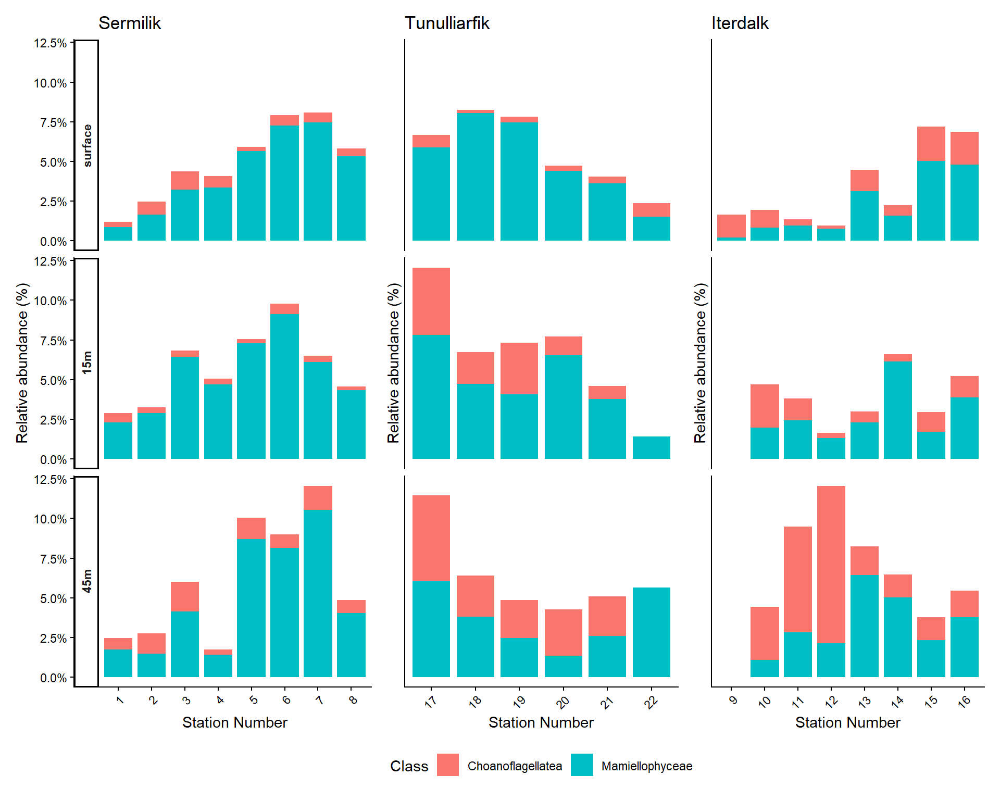
library(phyloseq)
library(dplyr)
library(ggplot2)
library(microbiome)
my_colors <- c("#FF6666", "#8DD3C7", "#377EB8", "#4DAF4A", "#984EA3", "#A6D854", "#FFFF33",
"#FF7F00", "#F781BF", "#999999", "#66C2A5", "#FC8D62", "#8DA0CB", "#E78AC3",
"#FFD92F", "#E5C494", "#B3B3B3", "#A65628","#FFFFB3", "#BEBADA",
"#FB8072", "#80B1D3", "#FDB462")
# Keep only Bacillariophyceae and Dinophyceae
ps_bd <- subset_taxa(
ps_18s,
Class %in% c("Dinophyceae") # %in% c("Bacillariophyceae", "Dinophyceae")
)
# Collapse to species level
ps_species <- tax_glom(ps_bd, taxrank = "Species", NArm = FALSE)
# Convert to relative abundance
# This makes abundances relative to the filtered community only:
# Bacillariophyceae + Dinophyceae = 100%
ps_rel <- transform_sample_counts(ps_species, function(x) x / sum(x))
# Top 10 taxa/genus-level OTU IDs after glomming
top10 <- top_taxa(ps_rel, n = 15)
# Melt full object
df <- psmelt(ps_rel)
# Make Depth nice + clean species names
df <- df %>%
mutate(
Depth = as.character(Depth),
Depth = if_else(Depth %in% c("1","01","surface","Surface"), "surface",
if_else(Depth %in% c("15","15m","15 m"), "15m",
if_else(Depth %in% c("45","45m","45 m"), "45m", Depth))),
Depth = factor(Depth, levels = c("surface", "15m", "45m")),
Fjord = as.factor(Fjord),
Station = factor(Station, levels = as.character(sort(unique(as.numeric(Station))))),
Class = as.character(Class),
Class = if_else(is.na(Class) | Class == "", "Unclassified class", Class),
Genus = as.character(Genus),
Genus = if_else(is.na(Genus) | Genus == "", "Unclassified genus", Genus),
Species = as.character(Species),
Species = if_else(is.na(Species) | Species == "", "Unclassified species", Species),
Species_label = paste(Class, Genus, Species, sep = " — ")
)
# Top15 species + Other
df <- df %>%
mutate(
Species_plot = if_else(OTU %in% top10, Species_label, "Other")
) %>%
group_by(Fjord, Depth, Sample, Number, Station, Species_plot) %>%
summarise(Abundance = sum(Abundance), .groups = "drop")
# Legend order: Other last
df$Species_plot <- factor(
df$Species_plot,
levels = c(setdiff(sort(unique(df$Species_plot)), "Other"), "Other")
)
other_color <- "#C0C0C0"
plot_colors <- c(
rep(my_colors, length.out = length(levels(df$Species_plot)) - 1),
other_color
)
names(plot_colors) <- levels(df$Species_plot)
plot_fjord <- function(df, fjord_name){
dff <- df %>% filter(Fjord == fjord_name)
ggplot(dff, aes(x = Station, y = Abundance, fill = Species_plot)) +
geom_col(width = 0.9) +
facet_grid(rows = vars(Depth), switch = "y") +
scale_fill_manual(values = plot_colors) +
scale_y_continuous(
labels = scales::label_number(scale = 100, accuracy = 1),
breaks = c(0, 0.25, 0.5, 0.75, 1),
limits = c(0, 1),
expand = c(0, 0)
) +
labs(
title = paste0(fjord_name, " — Species"),
x = "Station Number",
y = "Relative abundance (%)",
fill = "Species"
) +
theme_classic() +
theme(
strip.background = element_blank(),
strip.placement = "outside",
strip.text.y.left = element_text(angle = 0, face = "bold", size = 12),
panel.spacing.y = unit(1, "lines"),
axis.text.x = element_text(size = 11),
axis.text.y = element_text(size = 11),
axis.title.y = element_text(size = 14),
plot.title = element_text(hjust = 0.5, face = "bold", size = 16),
legend.position = "bottom"
) +
guides(fill = guide_legend(nrow = 6, byrow = TRUE))
}
fjords <- sort(unique(df$Fjord))
plots <- lapply(fjords, function(fj) plot_fjord(df, fj))
names(plots) <- as.character(fjords)
plots[["Tunulliarfik"]] <- plots[["Tunulliarfik"]] +
theme(axis.text.y = element_blank(),
axis.ticks.y = element_blank()) +
theme(strip.text.y.left = element_blank())
plots[["Iterdalk"]] <- plots[["Iterdalk"]] +
theme(axis.text.y = element_blank(),
axis.ticks.y = element_blank()) +
theme(strip.text.y.left = element_blank())
library(patchwork)
plots[["Sermilik"]] +
plots[["Tunulliarfik"]] +
plots[["Iterdalk"]] +
plot_layout(ncol = 3, guides = "collect") &
labs(x = "Station Number", y = "Relative abundance (%)") &
theme(legend.position = "bottom")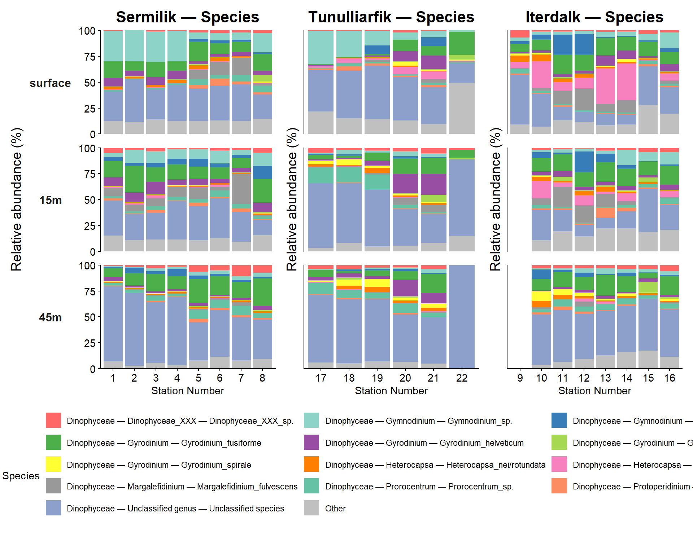
library(phyloseq)
library(dplyr)
library(ggplot2)
library(microbiome)
my_colors <- c("#FF6666", "#8DD3C7", "#377EB8", "#4DAF4A", "#984EA3", "#A6D854", "#FFFF33",
"#FF7F00", "#F781BF", "#999999", "#66C2A5", "#FC8D62", "#8DA0CB", "#E78AC3",
"#FFD92F", "#E5C494", "#B3B3B3", "#A65628","#FFFFB3", "#BEBADA",
"#FB8072", "#80B1D3", "#FDB462")
# Keep only Bacillariophyceae and Dinophyceae
ps_bd <- subset_taxa(
ps_18s,
Class %in% c("Bacillariophyceae") # %in% c("Bacillariophyceae", "Dinophyceae")
)
# Collapse to species level
ps_species <- tax_glom(ps_bd, taxrank = "Species", NArm = FALSE)
# Convert to relative abundance
# This makes abundances relative to the filtered community only:
# Bacillariophyceae + Dinophyceae = 100%
ps_rel <- transform_sample_counts(ps_species, function(x) x / sum(x))
# Top 10 taxa/genus-level OTU IDs after glomming
top10 <- top_taxa(ps_rel, n = 15)
# Melt full object
df <- psmelt(ps_rel)
# Make Depth nice + clean species names
df <- df %>%
mutate(
Depth = as.character(Depth),
Depth = if_else(Depth %in% c("1","01","surface","Surface"), "surface",
if_else(Depth %in% c("15","15m","15 m"), "15m",
if_else(Depth %in% c("45","45m","45 m"), "45m", Depth))),
Depth = factor(Depth, levels = c("surface", "15m", "45m")),
Fjord = as.factor(Fjord),
Station = factor(Station, levels = as.character(sort(unique(as.numeric(Station))))),
Class = as.character(Class),
Class = if_else(is.na(Class) | Class == "", "Unclassified class", Class),
Genus = as.character(Genus),
Genus = if_else(is.na(Genus) | Genus == "", "Unclassified genus", Genus),
Species = as.character(Species),
Species = if_else(is.na(Species) | Species == "", "Unclassified species", Species),
Species_label = paste(Class, Genus, Species, sep = " — ")
)
# Top15 species + Other
df <- df %>%
mutate(
Species_plot = if_else(OTU %in% top10, Species_label, "Other")
) %>%
group_by(Fjord, Depth, Sample, Number, Station, Species_plot) %>%
summarise(Abundance = sum(Abundance), .groups = "drop")
# Legend order: Other last
df$Species_plot <- factor(
df$Species_plot,
levels = c(setdiff(sort(unique(df$Species_plot)), "Other"), "Other")
)
other_color <- "#C0C0C0"
plot_colors <- c(
rep(my_colors, length.out = length(levels(df$Species_plot)) - 1),
other_color
)
names(plot_colors) <- levels(df$Species_plot)
plot_fjord <- function(df, fjord_name){
dff <- df %>% filter(Fjord == fjord_name)
ggplot(dff, aes(x = Station, y = Abundance, fill = Species_plot)) +
geom_col(width = 0.9) +
facet_grid(rows = vars(Depth), switch = "y") +
scale_fill_manual(values = plot_colors) +
scale_y_continuous(
labels = scales::label_number(scale = 100, accuracy = 1),
breaks = c(0, 0.25, 0.5, 0.75, 1),
limits = c(0, 1),
expand = c(0, 0)
) +
labs(
title = paste0(fjord_name, " — Species"),
x = "Station Number",
y = "Relative abundance (%)",
fill = "Species"
) +
theme_classic() +
theme(
strip.background = element_blank(),
strip.placement = "outside",
strip.text.y.left = element_text(angle = 0, face = "bold", size = 12),
panel.spacing.y = unit(1, "lines"),
axis.text.x = element_text(size = 11),
axis.text.y = element_text(size = 11),
axis.title.y = element_text(size = 14),
plot.title = element_text(hjust = 0.5, face = "bold", size = 16),
legend.position = "bottom"
) +
guides(fill = guide_legend(nrow = 6, byrow = TRUE))
}
fjords <- sort(unique(df$Fjord))
plots <- lapply(fjords, function(fj) plot_fjord(df, fj))
names(plots) <- as.character(fjords)
plots[["Tunulliarfik"]] <- plots[["Tunulliarfik"]] +
theme(axis.text.y = element_blank(),
axis.ticks.y = element_blank()) +
theme(strip.text.y.left = element_blank())
plots[["Iterdalk"]] <- plots[["Iterdalk"]] +
theme(axis.text.y = element_blank(),
axis.ticks.y = element_blank()) +
theme(strip.text.y.left = element_blank())
library(patchwork)
plots[["Sermilik"]] +
plots[["Tunulliarfik"]] +
plots[["Iterdalk"]] +
plot_layout(ncol = 3, guides = "collect") &
labs(x = "Station Number", y = "Relative abundance (%)") &
theme(legend.position = "bottom")
library(phyloseq)
library(dplyr)
library(ggplot2)
library(microbiome)
my_colors <- c("#FF6666", "#8DD3C7", "#377EB8", "#4DAF4A", "#984EA3", "#A6D854", "#FFFF33",
"#FF7F00", "#F781BF", "#999999", "#66C2A5", "#FC8D62", "#8DA0CB", "#E78AC3",
"#FFD92F", "#E5C494", "#B3B3B3", "#A65628","#FFFFB3", "#BEBADA",
"#FB8072", "#80B1D3", "#FDB462")
# Keep only Bacillariophyceae and Dinophyceae
ps_bd <- subset_taxa(
ps_18s,
Class %in% c("Dinophyceae") # %in% c("Bacillariophyceae", "Dinophyceae")
)
# Collapse to genus level
ps_genus <- tax_glom(ps_bd, taxrank = "Genus", NArm = FALSE)
# Convert to relative abundance
ps_rel <- transform_sample_counts(ps_genus, function(x) x / sum(x))
# Top 10 taxa/genus-level OTU IDs after glomming
top10 <- top_taxa(ps_rel, n = 15)
# Melt full object
df <- psmelt(ps_rel)
# Make Depth nice + clean species names
df <- df %>%
mutate(
Depth = as.character(Depth),
Depth = if_else(Depth %in% c("1","01","surface","Surface"), "surface",
if_else(Depth %in% c("15","15m","15 m"), "15m",
if_else(Depth %in% c("45","45m","45 m"), "45m", Depth))),
Depth = factor(Depth, levels = c("surface", "15m", "45m")),
Fjord = as.factor(Fjord),
Station = factor(Station, levels = as.character(sort(unique(as.numeric(Station))))),
Class = as.character(Class),
Class = if_else(is.na(Class) | Class == "", "Unclassified class", Class),
Genus = as.character(Genus),
Genus = if_else(is.na(Genus) | Genus == "", "Unclassified genus", Genus),
Genus_label = paste(Class, Genus, sep = " — ")
)
# Top15 species + Other
df <- df %>%
mutate(
Genus_plot = if_else(OTU %in% top10, Genus_label, "Other")
) %>%
group_by(Fjord, Depth, Sample, Number, Station, Genus_plot) %>%
summarise(Abundance = sum(Abundance), .groups = "drop")
# Legend order: Other last
df$Genus_plot <- factor(
df$Genus_plot,
levels = c(setdiff(sort(unique(df$Genus_plot)), "Other"), "Other")
)
other_color <- "#C0C0C0"
plot_colors <- c(
rep(my_colors, length.out = length(levels(df$Genus_plot)) - 1),
other_color
)
names(plot_colors) <- levels(df$Genus_plot)
plot_fjord <- function(df, fjord_name){
dff <- df %>% filter(Fjord == fjord_name)
ggplot(dff, aes(x = Station, y = Abundance, fill = Genus_plot)) +
geom_col(width = 0.9) +
facet_grid(rows = vars(Depth), switch = "y") +
scale_fill_manual(values = plot_colors) +
scale_y_continuous(
labels = scales::label_number(scale = 100, accuracy = 1),
breaks = c(0, 0.25, 0.5, 0.75, 1),
limits = c(0, 1),
expand = c(0, 0)
) +
labs(
title = paste0(fjord_name, " — Genus"),
x = "Station Number",
y = "Relative abundance (%)",
fill = "Genus"
) +
theme_classic() +
theme(
strip.background = element_blank(),
strip.placement = "outside",
strip.text.y.left = element_text(angle = 0, face = "bold", size = 12),
panel.spacing.y = unit(1, "lines"),
axis.text.x = element_text(size = 11),
axis.text.y = element_text(size = 11),
axis.title.y = element_text(size = 14),
plot.title = element_text(hjust = 0.5, face = "bold", size = 16),
legend.position = "bottom"
) +
guides(fill = guide_legend(nrow = 6, byrow = TRUE))
}
fjords <- sort(unique(df$Fjord))
plots <- lapply(fjords, function(fj) plot_fjord(df, fj))
names(plots) <- as.character(fjords)
plots[["Tunulliarfik"]] <- plots[["Tunulliarfik"]] +
theme(axis.text.y = element_blank(),
axis.ticks.y = element_blank()) +
theme(strip.text.y.left = element_blank())
plots[["Iterdalk"]] <- plots[["Iterdalk"]] +
theme(axis.text.y = element_blank(),
axis.ticks.y = element_blank()) +
theme(strip.text.y.left = element_blank())
library(patchwork)
plots[["Sermilik"]] +
plots[["Tunulliarfik"]] +
plots[["Iterdalk"]] +
plot_layout(ncol = 3, guides = "collect") &
labs(x = "Station Number", y = "Relative abundance (%)") &
theme(legend.position = "bottom")library(phyloseq)
library(dplyr)
library(ggplot2)
library(microbiome)
my_colors <- c("#FF6666", "#8DD3C7", "#377EB8", "#4DAF4A", "#984EA3", "#A6D854", "#FFFF33",
"#FF7F00", "#F781BF", "#999999", "#66C2A5", "#FC8D62", "#8DA0CB", "#E78AC3",
"#FFD92F", "#E5C494", "#B3B3B3", "#A65628","#FFFFB3", "#BEBADA",
"#FB8072", "#80B1D3", "#FDB462")
# Keep only Bacillariophyceae and Dinophyceae
ps_bd <- subset_taxa(
ps_18s,
Class %in% c("Bacillariophyceae") # %in% c("Bacillariophyceae", "Dinophyceae")
)
# Collapse to genus level
ps_genus <- tax_glom(ps_bd, taxrank = "Genus", NArm = FALSE)
# Convert to relative abundance
ps_rel <- transform_sample_counts(ps_genus, function(x) x / sum(x))
# Top 10 taxa/genus-level OTU IDs after glomming
top10 <- top_taxa(ps_rel, n = 15)
# Melt full object
df <- psmelt(ps_rel)
# Make Depth nice + clean species names
df <- df %>%
mutate(
Depth = as.character(Depth),
Depth = if_else(Depth %in% c("1","01","surface","Surface"), "surface",
if_else(Depth %in% c("15","15m","15 m"), "15m",
if_else(Depth %in% c("45","45m","45 m"), "45m", Depth))),
Depth = factor(Depth, levels = c("surface", "15m", "45m")),
Fjord = as.factor(Fjord),
Station = factor(Station, levels = as.character(sort(unique(as.numeric(Station))))),
Class = as.character(Class),
Class = if_else(is.na(Class) | Class == "", "Unclassified class", Class),
Genus = as.character(Genus),
Genus = if_else(is.na(Genus) | Genus == "", "Unclassified genus", Genus),
Genus_label = paste(Class, Genus, sep = " — ")
)
# Top15 species + Other
df <- df %>%
mutate(
Genus_plot = if_else(OTU %in% top10, Genus_label, "Other")
) %>%
group_by(Fjord, Depth, Sample, Number, Station, Genus_plot) %>%
summarise(Abundance = sum(Abundance), .groups = "drop")
# Legend order: Other last
df$Genus_plot <- factor(
df$Genus_plot,
levels = c(setdiff(sort(unique(df$Genus_plot)), "Other"), "Other")
)
other_color <- "#C0C0C0"
plot_colors <- c(
rep(my_colors, length.out = length(levels(df$Genus_plot)) - 1),
other_color
)
names(plot_colors) <- levels(df$Genus_plot)
plot_fjord <- function(df, fjord_name){
dff <- df %>% filter(Fjord == fjord_name)
ggplot(dff, aes(x = Station, y = Abundance, fill = Genus_plot)) +
geom_col(width = 0.9) +
facet_grid(rows = vars(Depth), switch = "y") +
scale_fill_manual(values = plot_colors) +
scale_y_continuous(
labels = scales::label_number(scale = 100, accuracy = 1),
breaks = c(0, 0.25, 0.5, 0.75, 1),
limits = c(0, 1),
expand = c(0, 0)
) +
labs(
title = paste0(fjord_name, " — Genus"),
x = "Station Number",
y = "Relative abundance (%)",
fill = "Genus"
) +
theme_classic() +
theme(
strip.background = element_blank(),
strip.placement = "outside",
strip.text.y.left = element_text(angle = 0, face = "bold", size = 12),
panel.spacing.y = unit(1, "lines"),
axis.text.x = element_text(size = 11),
axis.text.y = element_text(size = 11),
axis.title.y = element_text(size = 14),
plot.title = element_text(hjust = 0.5, face = "bold", size = 16),
legend.position = "bottom"
) +
guides(fill = guide_legend(nrow = 6, byrow = TRUE))
}
fjords <- sort(unique(df$Fjord))
plots <- lapply(fjords, function(fj) plot_fjord(df, fj))
names(plots) <- as.character(fjords)
plots[["Tunulliarfik"]] <- plots[["Tunulliarfik"]] +
theme(axis.text.y = element_blank(),
axis.ticks.y = element_blank()) +
theme(strip.text.y.left = element_blank())
plots[["Iterdalk"]] <- plots[["Iterdalk"]] +
theme(axis.text.y = element_blank(),
axis.ticks.y = element_blank()) +
theme(strip.text.y.left = element_blank())
library(patchwork)
plots[["Sermilik"]] +
plots[["Tunulliarfik"]] +
plots[["Iterdalk"]] +
plot_layout(ncol = 3, guides = "collect") &
labs(x = "Station Number", y = "Relative abundance (%)") &
theme(legend.position = "bottom")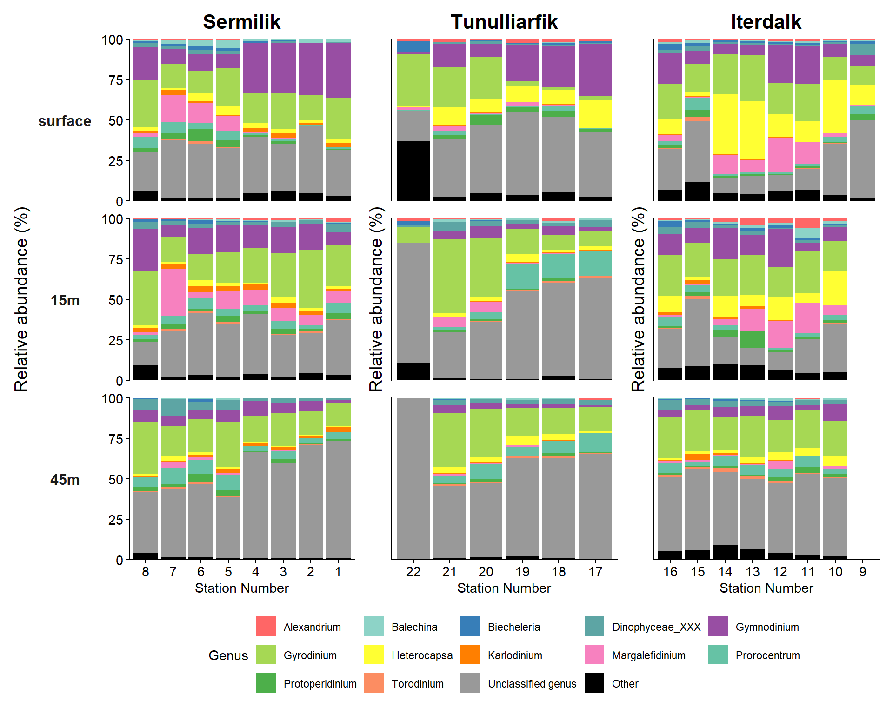
# Collapse + compositional
ps_class <- tax_glom(ps_18s, taxrank = "Class")
ps_rel <- transform(ps_class, "compositional")
# Top 10 taxa (OTU/ASV IDs after glomming)
top10 <- top_taxa(ps_rel, n = 10)
# Melt full object
df <- psmelt(ps_rel)
# Make Depth nice
df <- df %>%
mutate(
Depth = as.character(Depth),
Depth = if_else(Depth %in% c("1","01","surface","Surface"), "surface",
if_else(Depth %in% c("15","15m","15 m"), "15m",
if_else(Depth %in% c("45","45m","45 m"), "45m", Depth))),
Depth = factor(Depth, levels = c("surface", "15m", "45m")),
Fjord = as.factor(Fjord),
Station = factor(Station, levels = as.character(sort(unique(as.numeric(as.character(Station))))))
)
df <- df %>%
mutate(
Sample_cluster = gsub(".*_St([0-9]+)_D([0-9]+)$", "\\1_\\2", Sample)
)
# Define clusters by Sample names
cluster_list <- list(
Cluster4 = c("9_1", "10_1", "14_45"),
Cluster3 = c("1_45", "2_45", "3_45", "4_45", "5_45",
"8_45", "10_15", "10_45", "11_45", "12_45", "15_1",
"15_15", "15_45", "16_45", "17_15", "17_45", "18_15", "18_45",
"19_15", "19_45", "20_15", "20_45", "21_45", "22_45"),
Cluster2 = c("1_15", "2_15", "3_15", "4_15", "5_1", "5_15", "6_1", "6_15", "6_45",
"7_1", "7_15", "7_45", "8_1", "8_15", "11_1", "11_15", "12_1",
"12_15", "13_1", "13_15", "13_45", "14_1", "14_15", "16_1",
"16_15", "21_15", "22_15"),
Cluster1 = c("1_1", "2_1", "3_1", "4_1",
"17_1", "18_1", "19_1", "20_1", "21_1", "22_1")
)
# Add Cluster column using Sample_cluster
df <- df %>%
mutate(
Cluster = case_when(
Sample_cluster %in% cluster_list$Cluster1 ~ "Cluster1",
Sample_cluster %in% cluster_list$Cluster2 ~ "Cluster2",
Sample_cluster %in% cluster_list$Cluster3 ~ "Cluster3",
Sample_cluster %in% cluster_list$Cluster4 ~ "Cluster4",
TRUE ~ NA_character_
)
) %>%
filter(!is.na(Cluster))
# Top10 + Other
df <- df %>%
mutate(
Class = as.character(Class),
Class = if_else(is.na(Class) | Class == "", "Unclassified", Class),
Class_plot = if_else(OTU %in% top10, Class, "Other")
) %>%
group_by(Cluster, Sample_cluster, Depth, Sample, Number, Station, Class_plot) %>%
summarise(Abundance = sum(Abundance), .groups = "drop")
# Legend order: Other last
df$Class_plot <- factor(
df$Class_plot,
levels = c(setdiff(sort(unique(df$Class_plot)), "Other"), "Other")
)
# Adding the "other" colour to the last 10 colours of my palette
other_color <- "#3c3c3c"
plot_colors <- c(my_colors[11:20], other_color)
names(plot_colors) <- levels(df$Class_plot)
# Optional: order clusters
df$Cluster <- factor(df$Cluster, levels = c("Cluster1", "Cluster2", "Cluster3", "Cluster4"))
plot_cluster <- function(df, cluster_name){
dff <- df %>% filter(Cluster == cluster_name)
ggplot(dff, aes(x = Abundance, y = Sample_cluster, fill = Class_plot)) +
geom_col(width = 0.9) +
scale_fill_manual(values = plot_colors) +
scale_x_continuous(
labels = scales::label_number(scale = 100, accuracy = 1),
breaks = c(0, 0.25, 0.5, 0.75, 1),
limits = c(0, 1),
expand = c(0, 0)
) +
labs(
title = paste0(cluster_name, " — Top 10 Classes + Other"),
y = "Sample name",
x = "Relative abundance (%)",
fill = "Class"
) +
theme_classic() +
theme(
strip.background = element_blank(),
strip.placement = "outside",
strip.text.y.left = element_text(size = 12),
axis.text.x = element_text(size = 11),
axis.text.y = element_text(size = 11),
axis.title.y = element_text(size = 14),
plot.title = element_text(hjust = 0.5, face = "bold", size = 14),
legend.position = "bottom"
)
}
clusters <- levels(df$Cluster)
plots <- lapply(clusters, function(cl) plot_cluster(df, cl))
names(plots) <- as.character(clusters)
# Print one
plots[["Cluster1"]]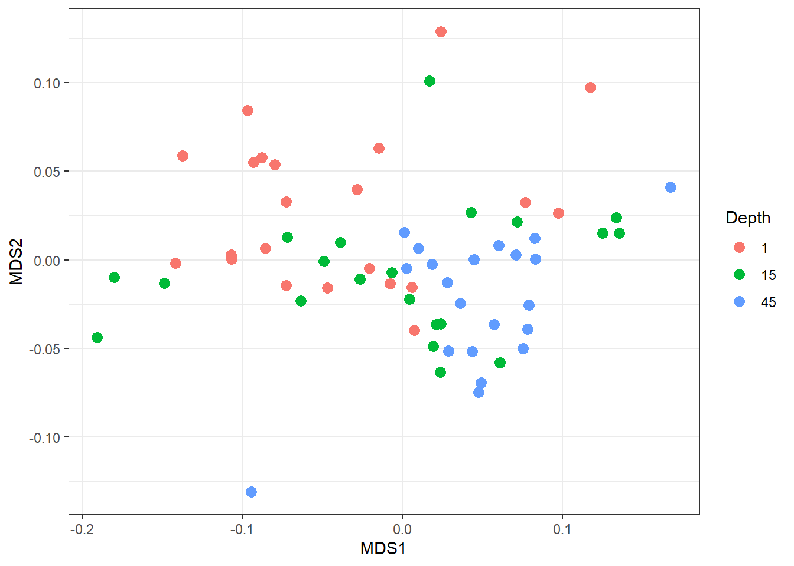
library(patchwork)
combined_plot <-
(plots[["Cluster1"]] + plots[["Cluster2"]]) /
(plots[["Cluster3"]] + plots[["Cluster4"]]) +
plot_layout(
guides = "collect",
widths = c(1, 1),
heights = c(0.75, 1.25)
) &
theme(
legend.position = "bottom",
legend.title = element_text(size = 10),
legend.text = element_text(size = 8),
axis.text.y = element_text(size = 6.5),
axis.text.x = element_text(size = 9),
plot.title = element_text(size = 14, face = "bold"),
panel.spacing = unit(1.2, "lines")
)
combined_plot
plot_colors <- c(
"Bacillariophyceae" = "#0b6e1a", # diatoms -> dark green
"Dinophyceae" = "#2B55DB", # dinoflagellates -> blue
"Copepoda" = "#FF4343", # crustacea / copepods -> red
"Cryptophyceae" = "#984EA3", # flagellates -> purple
"Oligotrichea" = "#f0e442", # ciliates -> light grey
# no clear direct match in the reference, so choose distinct extras
"Choanoflagellatea" = "#8dd3c7",
"Chrysophyceae" = "#FF7F00",
"Mamiellophyceae" = "#d9d9d9",
"Pyramimonadophyceae" = "#A6D854",
"Protozoa_incertae_sedis_EXT" = "#e377c2",
"Other" = "#3c3c3c"
)
# Collapse + compositional
ps_class <- tax_glom(ps_18s, taxrank = "Class")
ps_rel <- transform(ps_class, "compositional")
# Top 10 taxa (OTU/ASV IDs after glomming)
top10 <- top_taxa(ps_rel, n = 10)
# Melt full object
df <- psmelt(ps_rel)
# Make Depth nice
df <- df %>%
mutate(
Depth = as.character(Depth),
Depth = if_else(Depth %in% c("1","01","surface","Surface"), "surface",
if_else(Depth %in% c("15","15m","15 m"), "15m",
if_else(Depth %in% c("45","45m","45 m"), "45m", Depth))),
Depth = factor(Depth, levels = c("surface", "15m", "45m")),
Fjord = as.factor(Fjord),
Station = factor(Station, levels = as.character(sort(unique(as.numeric(as.character(Station))))))
)
df <- df %>%
mutate(
Sample_cluster = gsub(".*_St([0-9]+)_D([0-9]+)$", "\\1_\\2", Sample)
)
# Define clusters by Sample names
cluster_list <- list(
Cluster4 = c("9_1", "10_1", "14_45"),
Cluster3 = c("1_45" , "2_45" , "3_45" ,"4_45","8_45" , "10_45" ,"11_45", "12_45",
"13_45", "15_1" , "15_15" , "15_45", "17_15" ,"17_45" ,"18_15", "18_45",
"19_15" ,"19_45" ,"20_15" ,"20_45", "21_45", "22_45"),
Cluster2 = c("1_15" , "2_15" , "3_15", "4_15" , "5_1" , "5_15" , "5_45", "6_1" ,
"6_15" , "6_45" , "7_1" , "7_15" , "7_45" , "8_1" , "8_15" , "10_15",
"11_1", "11_15", "12_1" , "12_15", "13_1", "13_15" , "14_1" , "14_15" ,
"16_1" , "16_15" ,"16_45", "21_15" ,"22_15"),
Cluster1 = c("1_1", "2_1", "3_1", "4_1", "17_1", "18_1", "19_1", "20_1", "21_1", "22_1")
)
# Add Cluster column using Sample_cluster
df <- df %>%
mutate(
Cluster = case_when(
Sample_cluster %in% cluster_list$Cluster1 ~ "Cluster1",
Sample_cluster %in% cluster_list$Cluster2 ~ "Cluster2",
Sample_cluster %in% cluster_list$Cluster3 ~ "Cluster3",
Sample_cluster %in% cluster_list$Cluster4 ~ "Cluster4",
TRUE ~ NA_character_
)
) %>%
filter(!is.na(Cluster))
sample_order <- c(
"22_1", "21_1", "20_1", "19_1", "18_1", "17_1", "4_1", "3_1", "2_1", "1_1",
"22_15", "21_15", "16_45", "16_15", "16_1", "14_15", "14_1", "13_15", "13_1",
"12_15", "12_1", "11_15", "11_1", "10_15", "8_15", "8_1", "7_45", "7_15",
"7_1", "6_45", "6_15", "6_1", "5_45", "5_15", "5_1", "4_15", "3_15", "2_15", "1_15",
"22_45", "21_45", "20_45", "20_15", "19_45", "19_15", "18_45", "18_15",
"17_45", "15_45", "15_15", "15_1", "13_45", "12_45", "11_45", "10_45",
"8_45", "4_45", "3_45", "1_45","14_45", "10_1", "9_1"
)
# Top10 + Other
df <- df %>%
mutate(
Class = as.character(Class),
Class = if_else(is.na(Class) | Class == "", "Unclassified", Class),
Class_plot = if_else(OTU %in% top10, Class, "Other")
) %>%
group_by(Cluster, Sample_cluster, Depth, Sample, Number, Station, Class_plot) %>%
summarise(Abundance = sum(Abundance), .groups = "drop")
# Legend order: Other last
df$Class_plot <- factor(
df$Class_plot,
levels = c(setdiff(sort(unique(df$Class_plot)), "Other"), "Other")
)
# Optional: order clusters
df$Cluster <- factor(df$Cluster, levels = c("Cluster1", "Cluster2", "Cluster3", "Cluster4"))
df$Sample_cluster <- factor(df$Sample_cluster, levels = rev(c("1_1" , "2_1" , "3_1" , "4_1" ,
"17_1", "18_1", "19_1", "20_1" ,"21_1", "22_1",
"1_15" , "2_15" , "3_15", "4_15" , "5_1" , "5_15" , "6_1" , "6_15" , "6_45" ,
"7_1" , "7_15" , "7_45" , "8_1" , "8_15" , "11_1", "11_15", "12_1" ,
"12_15", "13_1", "13_15" , "13_45", "14_1" ,
"14_15" , "16_1" , "16_15" , "21_15" ,"22_15",
"1_45" , "2_45" , "3_45" ,"4_45", "5_45" ,
"8_45" , "10_15", "10_45" ,"11_45", "12_45", "15_1" ,
"15_15" , "15_45", "16_45" ,"17_15" ,"17_45" ,"18_15", "18_45",
"19_15" ,"19_45" ,"20_15" ,"20_45",
"21_45", "22_45",
"9_1" , "10_1" , "14_45")))
ggplot(df, aes(x = Abundance, y = Sample_cluster, fill = Class_plot)) +
geom_col(width = 0.9) +
scale_fill_manual(values = plot_colors) +
scale_x_continuous(
labels = scales::label_number(scale = 100, accuracy = 1),
breaks = c(0, 0.25, 0.5, 0.75, 1),
limits = c(0, 1),
expand = expansion(mult = c(0, 0.02))
) +
scale_y_discrete(drop = TRUE) +
labs(
title = "Top 10 Classes + Other",
y = "Sample name",
x = "Relative abundance (%)",
fill = "Class"
) +
theme_classic() +
theme(
axis.text.x = element_text(size = 11),
axis.text.y = element_text(size = 11),
axis.title.y = element_text(size = 14),
plot.title = element_text(hjust = 0.5, face = "bold", size = 14),
legend.position = "bottom"
)
library(phyloseq)
library(dplyr)
library(ggplot2)
# Melt full phyloseq object
df_asv43 <- psmelt(ps_18s) %>%
filter(OTU == "ASV43") %>%
mutate(
Depth = case_when(
Depth %in% c("1","01","surface","Surface") ~ "surface",
Depth %in% c("15","15m","15 m") ~ "15m",
Depth %in% c("45","45m","45 m") ~ "45m",
TRUE ~ as.character(Depth)
),
Depth = factor(Depth, levels = c("surface", "15m", "45m")),
Fjord = as.factor(Fjord)
)
df_asv43_sum <- df_asv43 %>%
group_by(Fjord, Depth) %>%
summarise(
mean_reads = mean(Abundance, na.rm = TRUE),
sd_reads = sd(Abundance, na.rm = TRUE),
n = n(),
.groups = "drop"
)
ggplot(df_asv43_sum, aes(x = Depth, y = mean_reads, fill = Fjord)) +
geom_col(position = position_dodge(width = 0.8), width = 0.7) +
geom_errorbar(
aes(ymin = mean_reads - sd_reads, ymax = mean_reads + sd_reads),
position = position_dodge(width = 0.8),
width = 0.2
) +
theme_classic() +
labs(
title = "ASV43 distribution by fjord and depth",
x = "Depth",
y = "Mean read count"
)df_asv43_plot <- df_asv43 %>%
mutate(
Station = factor(
Station,
levels = as.character(sort(unique(as.numeric(as.character(Station)))))
)
)
ggplot(df_asv43_plot, aes(x = Station, y = Abundance, fill = Fjord)) +
geom_col() +
facet_grid(rows = vars(Depth), cols = vars(Fjord), switch = "y") +
theme_classic() +
labs(
title = "ASV43 across samples",
x = "Station",
y = "Read count"
)
library(tidyverse)
library(knitr)
library(kableExtra)
# ctd <- read_csv("data/CTD_data_Greenland_fjords.csv")
#
# target_depths <- c(1, 15, 45)
#
# ctd_selected <- ctd %>%
# tidyr::crossing(target_depth = target_depths) %>% # make 3 copies per row
# group_by(station_idx, station_lab, target_depth) %>% # <-- key fix
# slice_min(order_by = abs(pressure - target_depth), n = 1, with_ties = FALSE) %>%
# ungroup()
#
# ctd_selected %>% head(10)
metadata <- read_csv("data/Metadata_Augmentum_v2.csv")
ps_16s <- readRDS("data/ps_16s.rds")
ps_18s <- readRDS("data/ps_18s.rds")
metadata <- metadata %>%
mutate(Sample_cluster = str_sub(ID_sample, 3))
# Define clusters by sample names
cluster_list <- list(
Cluster4 = c("9_1", "10_1", "14_45"),
Cluster3 = c("1_45", "2_45", "3_45", "4_45", "8_45", "10_45", "11_45", "12_45",
"13_45", "15_1", "15_15", "15_45", "17_15", "17_45", "18_15", "18_45",
"19_15", "19_45", "20_15", "20_45", "21_45", "22_45"),
Cluster2 = c("1_15", "2_15", "3_15", "4_15", "5_1", "5_15", "5_45", "6_1",
"6_15", "6_45", "7_1", "7_15", "7_45", "8_1", "8_15", "10_15",
"11_1", "11_15", "12_1", "12_15", "13_1", "13_15", "14_1", "14_15",
"16_1", "16_15", "16_45", "21_15", "22_15"),
Cluster1 = c("1_1", "2_1", "3_1", "4_1", "17_1", "18_1", "19_1", "20_1", "21_1", "22_1")
)
# Add Cluster to metadata
metadata <- metadata %>%
mutate(
Cluster = case_when(
Sample_cluster %in% cluster_list$Cluster1 ~ "Cluster1",
Sample_cluster %in% cluster_list$Cluster2 ~ "Cluster2",
Sample_cluster %in% cluster_list$Cluster3 ~ "Cluster3",
Sample_cluster %in% cluster_list$Cluster4 ~ "Cluster4",
TRUE ~ NA_character_
)
) %>%
filter(!is.na(Cluster))
metadata$Cluster <- factor(metadata$Cluster,
levels = c("Cluster1", "Cluster2", "Cluster3", "Cluster4"))library(phyloseq)
library(vegan)
# Collapse taxonomic rank
ps16_genus <- tax_glom(ps_16s, taxrank = "Genus")
ps18_genus <- tax_glom(ps_18s, taxrank = "Genus")
# Filter out rare taxa
prev_filter <- function(ps, threshold = 0.2){
otu <- as(otu_table(ps), "matrix")
if(!taxa_are_rows(ps)){
otu <- t(otu)
}
prevalence <- rowSums(otu > 0) / ncol(otu)
keep <- prevalence >= threshold
prune_taxa(keep, ps)
}
ps16_filt <- prev_filter(ps16_genus, threshold = 0.2)
ps18_filt <- prev_filter(ps18_genus, threshold = 0.2)
taxa_names(ps16_filt) <- paste0("Bac_", taxa_names(ps16_filt))
taxa_names(ps18_filt) <- paste0("Euk_", taxa_names(ps18_filt))
# Combine matrices
mat16 <- as(otu_table(ps16_filt), "matrix")
mat18 <- as(otu_table(ps18_filt), "matrix")
combined_matrix <- cbind(mat16, mat18)
taxa_names_combined <- colnames(combined_matrix)
# Create a matching column in metadata
metadata <- metadata %>%
mutate(
ps_id = sprintf("%02d_St%d_D%d", row_number(), StationID, Depth)
)
sd_16s <- sample_data(ps_16s) %>%
data.frame() %>%
rownames_to_column("ps_id")
sd_16s_aug <- sd_16s %>%
left_join(
metadata %>% select(01:33,53:66) %>%
select(-Cruise, -Date, -Area, -StationID, -Depth, -`Water_mass`),
by = "ps_id"
)
# Put rownames back
sd_16s_aug <- sd_16s_aug %>%
column_to_rownames("ps_id")
# Apply same sample metadata to both objects
sample_data(ps_16s) <- sample_data(sd_16s_aug)
sample_data(ps_18s) <- sample_data(sd_16s_aug)
# Also update filtered objects
sample_data(ps16_filt) <- sample_data(sd_16s_aug[rownames(sample_data(ps16_filt)), , drop = FALSE])
sample_data(ps18_filt) <- sample_data(sd_16s_aug[rownames(sample_data(ps18_filt)), , drop = FALSE])
# Transform data using Hellinger transformation (best for PCA/RDA):
otu_16s <- as.data.frame(otu_table(ps16_filt))
otu_18s <- as.data.frame(otu_table(ps18_filt))
otu_16s_hel <- decostand(otu_16s, method = "hellinger")
otu_18s_hel <- decostand(otu_18s, method = "hellinger")
# Prepare environmental matrix
env <- metadata %>%
select(Depth, Salinity, Temp, NO3, PO4, SiO2, Fluorescence_Chla) %>%
drop_na()
# scale variables
env_scaled <- scale(env)nitro_taxa <- taxa_names(ps16_filt)[tax_table(ps16_filt)[, "Genus"] == "Candidatus Nitrosopumilus"]
# OTU table as sample x taxa
otu <- as(otu_table(ps16_filt), "matrix")
if (taxa_are_rows(ps16_filt)) {
otu <- t(otu)
}
otu <- as.data.frame(otu)
# 3. Extract abundance for that taxon
# rowSums works whether there is one taxon or more than one
nitro_abundance <- rowSums(otu[, nitro_taxa, drop = FALSE])
meta <- sample_data(ps16_filt) %>%
data.frame() %>%
rownames_to_column("SampleID")
df <- data.frame(
SampleID = rownames(otu),
Nitrosopumilus_count = nitro_abundance
) %>%
left_join(meta %>% dplyr::select(SampleID, NO2, Depth, NO3, DOC, Fjord, Temp), by = "SampleID") %>%
tidyr::drop_na()
# Relative abundance transform
otu_rel <- decostand(otu, method = "total")
# Extract relative abundance of Nitrosopumilus
nitro_rel <- rowSums(otu_rel[, nitro_taxa, drop = FALSE])
# Build dataframe
df <- data.frame(
SampleID = rownames(otu_rel),
Nitrosopumilus_rel = nitro_rel
) %>%
left_join(meta %>% dplyr::select(SampleID, NO2, Depth, NO3, DOC, Fjord, Temp), by = "SampleID") %>%
tidyr::drop_na()
ggplot(df, aes(x = NO2, y = Nitrosopumilus_rel)) +
geom_point(size = 3) +
geom_smooth(method = "lm", se = TRUE) +
theme_bw() +
labs(
x = "NO2",
y = "Relative abundance of Candidatus Nitrosopumilus",
title = "Nitrosopumilus vs NO2"
)
cor.test(df$NO2, df$Nitrosopumilus_rel, method = "spearman")
Spearman's rank correlation rho
data: df$NO2 and df$Nitrosopumilus_rel
S = 5809.9, p-value = 4.294e-16
alternative hypothesis: true rho is not equal to 0
sample estimates:
rho
0.8302185 summary(lm(Nitrosopumilus_rel ~ NO2 + Depth, data = df))
Call:
lm(formula = Nitrosopumilus_rel ~ NO2 + Depth, data = df)
Residuals:
Min 1Q Median 3Q Max
-0.033815 -0.011125 -0.004696 0.003238 0.081977
Coefficients:
Estimate Std. Error t value Pr(>|t|)
(Intercept) -0.006282 0.005168 -1.216 0.229359
NO2 0.203605 0.052486 3.879 0.000282 ***
Depth15 0.008791 0.007399 1.188 0.239884
Depth45 0.015751 0.007435 2.118 0.038671 *
---
Signif. codes: 0 '***' 0.001 '**' 0.01 '*' 0.05 '.' 0.1 ' ' 1
Residual standard error: 0.02203 on 55 degrees of freedom
Multiple R-squared: 0.3645, Adjusted R-squared: 0.3299
F-statistic: 10.52 on 3 and 55 DF, p-value: 1.435e-05ggplot(df, aes(x = NO2, y = Nitrosopumilus_rel, color = Depth)) +
geom_point(size = 3) +
geom_smooth(method = "lm", se = FALSE) +
theme_bw()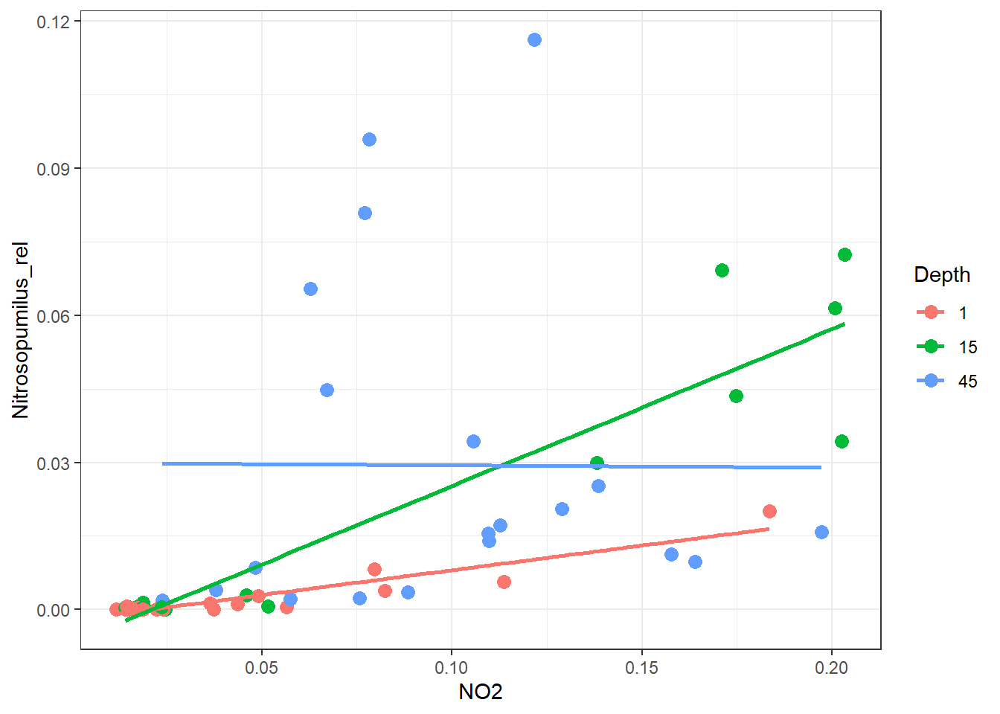
The relationship is depth-dependent. No relationship at depth 45!
summary(lm(Nitrosopumilus_rel ~ NO2 * Depth, data = df))
Call:
lm(formula = Nitrosopumilus_rel ~ NO2 * Depth, data = df)
Residuals:
Min 1Q Median 3Q Max
-0.028014 -0.008199 -0.000127 0.001616 0.086905
Coefficients:
Estimate Std. Error t value Pr(>|t|)
(Intercept) -0.002060 0.006337 -0.325 0.7464
NO2 0.100889 0.109370 0.922 0.3605
Depth15 -0.004717 0.009679 -0.487 0.6281
Depth45 0.031977 0.013132 2.435 0.0183 *
NO2:Depth15 0.218977 0.127687 1.715 0.0922 .
NO2:Depth45 -0.105627 0.153027 -0.690 0.4930
---
Signif. codes: 0 '***' 0.001 '**' 0.01 '*' 0.05 '.' 0.1 ' ' 1
Residual standard error: 0.02095 on 53 degrees of freedom
Multiple R-squared: 0.4459, Adjusted R-squared: 0.3936
F-statistic: 8.53 on 5 and 53 DF, p-value: 5.612e-06Candidatus Nitrosopumilus abundance is positively associated with NO₂ concentrations, but this relationship is depth-dependent. The correlation is most pronounced at intermediate depth (15 m), suggesting a zone of active ammonia-oxidation, while deeper waters show high Nitrosopumilus abundance independent of NO₂, possibly reflecting steady-state nitrogen cycling (coupling of nitrification reactions) or different environmental controls.
# OTU table as sample x taxa
otu <- as(otu_table(ps16_filt), "matrix")
if (taxa_are_rows(ps16_filt)) {
otu <- t(otu)
}
otu <- as.data.frame(otu)
# Nitrosopumilus taxa
nitro_taxa <- taxa_names(ps16_filt)[tax_table(ps16_filt)[, "Genus"] == "Candidatus Nitrosopumilus"]
# Counts
nitro_abundance <- rowSums(otu[, nitro_taxa, drop = FALSE])
# Total reads per sample
total_reads <- rowSums(otu)
# Metadata
meta <- sample_data(ps16_filt) %>%
data.frame() %>%
rownames_to_column("SampleID")
# Build clean dataframe
df_counts <- data.frame(
SampleID = rownames(otu),
Nitrosopumilus_count = nitro_abundance,
total_reads = total_reads
) %>%
left_join(meta %>% dplyr::select(SampleID, NO2, Depth, NO3, DOC, Fjord, Temp), by = "SampleID") %>%
tidyr::drop_na()
head(df_counts) SampleID Nitrosopumilus_count total_reads NO2 Depth NO3 DOC
1 01_St1_D1 21 192808 0.0140 1 0.1060 67.04
2 02_St1_D15 100 149908 0.0174 15 0.2106 82.94
3 03_St1_D45 26723 330003 0.0771 45 7.1389 136.37
4 04_St2_D1 17 325516 0.0118 1 0.0922 73.68
5 05_St2_D15 71 130735 0.0151 15 0.1269 119.68
6 06_St2_D45 18620 194110 0.0782 45 5.2008 121.37
Fjord Temp
1 Sermilik 0.02
2 Sermilik 2.22
3 Sermilik 0.26
4 Sermilik 0.06
5 Sermilik 2.05
6 Sermilik 0.24nrow(df_counts)[1] 59library(MASS)
m_nb <- glm.nb(
Nitrosopumilus_count ~ NO2 * Depth + offset(log(total_reads)),
data = df_counts
)
summary(m_nb)
Call:
glm.nb(formula = Nitrosopumilus_count ~ NO2 * Depth + offset(log(total_reads)),
data = df_counts, init.theta = 1.167722361, link = log)
Coefficients:
Estimate Std. Error z value Pr(>|z|)
(Intercept) -8.8958 0.2828 -31.456 < 2e-16 ***
NO2 38.1615 4.8440 7.878 3.33e-15 ***
Depth15 0.9763 0.4308 2.266 0.0235 *
Depth45 5.3992 0.5814 9.286 < 2e-16 ***
NO2:Depth15 -10.7094 5.6544 -1.894 0.0582 .
NO2:Depth45 -38.4521 6.7685 -5.681 1.34e-08 ***
---
Signif. codes: 0 '***' 0.001 '**' 0.01 '*' 0.05 '.' 0.1 ' ' 1
(Dispersion parameter for Negative Binomial(1.1677) family taken to be 1)
Null deviance: 266.203 on 58 degrees of freedom
Residual deviance: 66.546 on 53 degrees of freedom
AIC: 892.17
Number of Fisher Scoring iterations: 1
Theta: 1.168
Std. Err.: 0.195
2 x log-likelihood: -878.174 Using counts with a negative binomial model (and a library-size offset) gives you a more faithful representation of abundance than relative proportions. The negative binomial model didn’t change our conclusions — it strengthened them and made them more defensible.
nitrospina_taxa <- "Bac_ASV483"
nitrospina_rel <- otu_rel[, nitrospina_taxa]
df_combined <- df %>%
left_join(
data.frame(
SampleID = rownames(otu_rel),
Nitrospina_rel = nitrospina_rel
),
by = "SampleID"
)
ggplot(df_combined, aes(x = NO2, y = Nitrospina_rel, color = Depth)) +
geom_point(size = 3) +
geom_smooth(method = "lm", se = FALSE) +
theme_bw() +
labs(
y = "Nitrospinaceae (LS-NOB)",
title = "NOB vs NO2"
)
ggplot(df_combined, aes(x = Nitrosopumilus_rel, y = Nitrospina_rel, color = Depth)) +
geom_point(size = 3) +
geom_smooth(method = "lm", se = FALSE) +
theme_bw() +
labs(
x = "Nitrosopumilus (AOA)",
y = "Nitrospinaceae (NOB)",
title = "Coupling between ammonia and nitrite oxidizers"
)
This plot suggest strong AOA–NOB coupling! Their co-variation means that they are functioning as a linked nitrification system. Let’s test it statistically:
cor.test(df_combined$Nitrosopumilus_rel,
df_combined$Nitrospina_rel,
method = "spearman")
Spearman's rank correlation rho
data: df_combined$Nitrosopumilus_rel and df_combined$Nitrospina_rel
S = 7375.3, p-value = 1.976e-13
alternative hypothesis: true rho is not equal to 0
sample estimates:
rho
0.7844731 This result indicates that Nitrosopumilus and Nitrospinaceae (NOB) taxa co-vary strongly across samples.
cor.test(df_combined$NO3, df_combined$Nitrospina_rel, method = "spearman")
Spearman's rank correlation rho
data: df_combined$NO3 and df_combined$Nitrospina_rel
S = 8877.6, p-value = 2.022e-11
alternative hypothesis: true rho is not equal to 0
sample estimates:
rho
0.7405733 summary(lm(Nitrospina_rel ~ NO3 + Depth, data = df_combined))
Call:
lm(formula = Nitrospina_rel ~ NO3 + Depth, data = df_combined)
Residuals:
Min 1Q Median 3Q Max
-4.617e-04 -7.951e-05 -2.267e-05 2.035e-05 7.738e-04
Coefficients:
Estimate Std. Error t value Pr(>|t|)
(Intercept) -2.798e-05 4.456e-05 -0.628 0.533
NO3 7.292e-05 1.678e-05 4.346 6.03e-05 ***
Depth15 9.624e-05 6.557e-05 1.468 0.148
Depth45 4.869e-05 6.754e-05 0.721 0.474
---
Signif. codes: 0 '***' 0.001 '**' 0.01 '*' 0.05 '.' 0.1 ' ' 1
Residual standard error: 0.0002025 on 55 degrees of freedom
Multiple R-squared: 0.32, Adjusted R-squared: 0.2829
F-statistic: 8.627 on 3 and 55 DF, p-value: 8.714e-05ggplot(df_combined, aes(x = NO3, y = Nitrospina_rel, color = Depth)) +
geom_point(size = 3) +
geom_smooth(method = "lm", se = FALSE) +
theme_bw() +
labs(
y = "Nitrospinaceae (LS-NOB)",
title = "NOB vs NO3"
)Nitrospinaceae abundance is strongly associated with NO₃ concentrations, consistent with its role as a nitrite oxidizer. This relationship is strongest at depth, suggesting that nitrite oxidation and nitrate accumulation occur primarily in deeper waters. In contrast, intermediate depths show stronger coupling between ammonia oxidizers and NO₂, indicating spatial separation between nitrification steps.
ANOSIM is a non-parametric test that works on a distance matrix
# Distance matrix
dist_16s <- vegdist(otu_16s_hel, method = "bray")
# Fjord grouping variable from metadata
meta_16s <- as.data.frame(sample_data(ps16_filt))
anosim_16s <- anosim(dist_16s, grouping = meta_16s$Fjord, permutations = 999)
summary(anosim_16s)
Call:
anosim(x = dist_16s, grouping = meta_16s$Fjord, permutations = 999)
Dissimilarity: bray
ANOSIM statistic R: 0.3376
Significance: 0.001
Permutation: free
Number of permutations: 999
Upper quantiles of permutations (null model):
90% 95% 97.5% 99%
0.0313 0.0435 0.0542 0.0617
Dissimilarity ranks between and within classes:
0% 25% 50% 75% 100% N
Between 29 696.75 1132.5 1551.00 2016 1356
Iterdalk 2 218.50 483.0 864.50 1582 231
Sermilik 5 142.00 451.0 1659.25 2011 276
Tunulliarfik 1 480.00 1221.0 1590.00 1870 153plot(anosim_16s)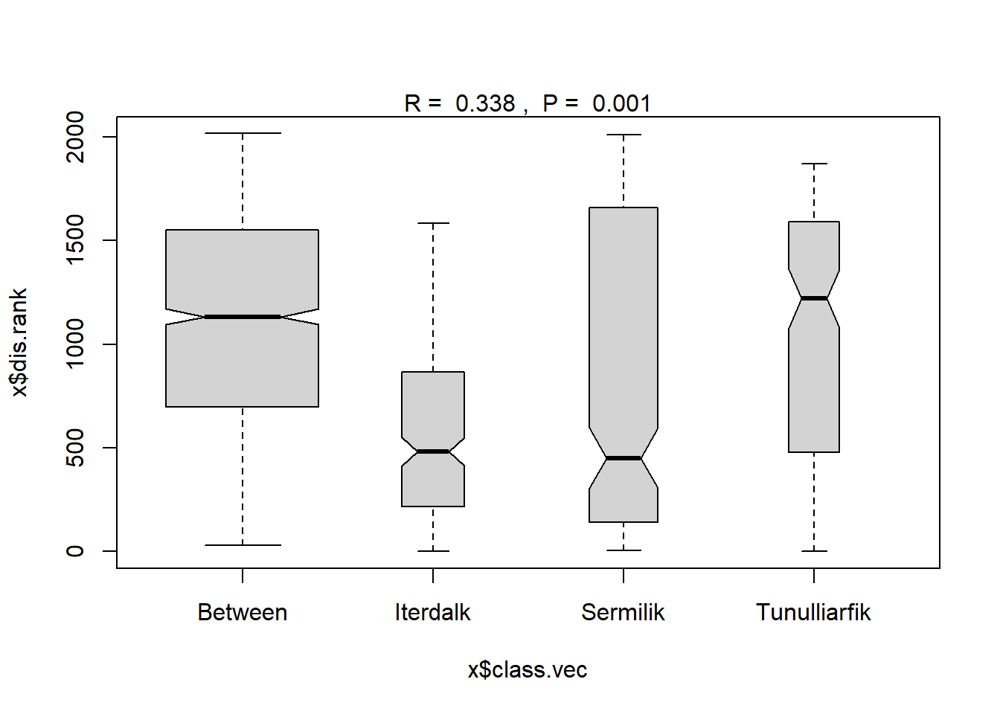
Note: The ANOSIM signal is partly driven by differences in dispersion, not just differences between fjords! Tunulliarfik has huge internal variability and that inflates the rank differences → increases R
Let’s check whether the dispersion differences are significants:
bd_16s <- betadisper(dist_16s, meta_16s$Fjord)
anova(bd_16s)Analysis of Variance Table
Response: Distances
Df Sum Sq Mean Sq F value Pr(>F)
Groups 2 0.03041 0.0152041 1.5528 0.2199
Residuals 61 0.59728 0.0097915 p = 0.22 (not significant) → No evidence of unequal spread
ANOSIM revealed significant differences in community composition among fjords (R = 0.34, p = 0.001). Tests for homogeneity of multivariate dispersion were not significant (p = 0.22), indicating that the observed differences are not driven by differences in within-fjord variability.
meta_16s <- sample_data(ps16_filt)
meta_16s <- data.frame(sample_data(ps16_filt))
meta_16s$Fjord <- factor(meta_16s$Fjord)
permanova_16s <- vegan::adonis2(
dist_16s ~ Fjord,
data = meta_16s,
permutations = 999
)
permanova_16sPermutation test for adonis under reduced model
Permutation: free
Number of permutations: 999
vegan::adonis2(formula = dist_16s ~ Fjord, data = meta_16s, permutations = 999)
Df SumOfSqs R2 F Pr(>F)
Model 2 0.7448 0.23469 9.3529 0.001 ***
Residual 61 2.4290 0.76531
Total 63 3.1738 1.00000
---
Signif. codes: 0 '***' 0.001 '**' 0.01 '*' 0.05 '.' 0.1 ' ' 1Community composition differed significantly among fjords (PERMANOVA, F = 9.35, R² = 0.235, p = 0.001). ANOSIM supported this result, indicating moderate separation among fjords (R = 0.34, p = 0.001). Tests for homogeneity of multivariate dispersion were not significant (p = 0.22), confirming that observed differences were not driven by variation in within-fjord heterogeneity.
pairwise_anosim_dist <- function(dist_mat, groups, permutations = 999) {
groups <- factor(groups)
levs <- levels(groups)
results <- data.frame()
dist_matrix <- as.matrix(dist_mat)
for (i in 1:(length(levs) - 1)) {
for (j in (i + 1):length(levs)) {
pair <- c(levs[i], levs[j])
idx <- groups %in% pair
sub_dist <- as.dist(dist_matrix[idx, idx])
sub_grp <- droplevels(groups[idx])
anos <- vegan::anosim(
sub_dist,
sub_grp,
permutations = permutations
)
results <- rbind(results, data.frame(
group1 = pair[1],
group2 = pair[2],
R = anos$statistic,
p = anos$signif
))
}
}
results$p_adj <- p.adjust(results$p, method = "BH")
results
}
groups <- factor(meta_16s$Fjord)
pairwise_results <- pairwise_anosim_dist(
dist_mat = dist_16s,
groups = groups,
permutations = 999
)
pairwise_results group1 group2 R p p_adj
1 Iterdalk Sermilik 0.3599083 0.001 0.001
2 Iterdalk Tunulliarfik 0.2905619 0.001 0.001
3 Sermilik Tunulliarfik 0.3530389 0.001 0.001# get all fjord names
fjords <- sort(unique(c(pairwise_results$group1, pairwise_results$group2)))
# create full pairwise grid
heat_df <- expand.grid(group1 = fjords, group2 = fjords)
# fill both upper and lower triangle with ANOSIM R and adjusted p-values
heat_df <- heat_df %>%
left_join(pairwise_results, by = c("group1", "group2")) %>%
left_join(
pairwise_results,
by = c("group1" = "group2", "group2" = "group1"),
suffix = c("", "_rev")
) %>%
mutate(
R = coalesce(R, R_rev),
p_adj = coalesce(p_adj, p_adj_rev)
) %>%
dplyr::select(group1, group2, R, p_adj)
# diagonal = self-comparison
heat_df <- heat_df %>%
mutate(R = ifelse(group1 == group2, 1, R))
# add significance stars
heat_df <- heat_df %>%
mutate(
stars = case_when(
p_adj < 0.001 ~ "***",
p_adj < 0.01 ~ "**",
p_adj < 0.05 ~ "*",
TRUE ~ ""
)
)
# plot upper triangle only
anosim_heatmap_plot <- heat_df %>%
mutate(
group1 = factor(group1, levels = fjords),
group2 = factor(group2, levels = fjords)
) %>%
filter(as.numeric(group1) <= as.numeric(group2)) %>%
ggplot(aes(group1, group2, fill = R)) +
geom_tile(color = "white") +
geom_text(aes(label = stars), size = 6) +
scale_fill_gradient2(
low = "lightblue",
mid = "white",
high = "brown",
midpoint = 0,
na.value = "grey90"
) +
coord_fixed() +
theme_bw() +
labs(
x = NULL,
y = NULL,
fill = "ANOSIM R"
)
anosim_heatmap_plotrda_16s <- rda(otu_16s_hel ~ Salinity + Temp + NO3 + PO4 + SiO2 + Chla + O2_sat , data = metadata)
rda_18s <- rda(otu_18s_hel ~ Salinity + Temp + NO3 + PO4 + SiO2 + Chla + O2_sat , data = metadata)
# Test significance
anova(rda_16s, by = "term")Permutation test for rda under reduced model
Terms added sequentially (first to last)
Permutation: free
Number of permutations: 999
Model: rda(formula = otu_16s_hel ~ Salinity + Temp + NO3 + PO4 + SiO2 + Chla + O2_sat, data = metadata)
Df Variance F Pr(>F)
Salinity 1 0.049508 36.8176 0.001 ***
Temp 1 0.020023 14.8907 0.001 ***
NO3 1 0.005336 3.9682 0.007 **
PO4 1 0.012942 9.6243 0.001 ***
SiO2 1 0.008255 6.1391 0.001 ***
Chla 1 0.002470 1.8368 0.113
O2_sat 1 0.003971 2.9528 0.017 *
Residual 56 0.075303
---
Signif. codes: 0 '***' 0.001 '**' 0.01 '*' 0.05 '.' 0.1 ' ' 1anova(rda_18s, by = "term")Permutation test for rda under reduced model
Terms added sequentially (first to last)
Permutation: free
Number of permutations: 999
Model: rda(formula = otu_18s_hel ~ Salinity + Temp + NO3 + PO4 + SiO2 + Chla + O2_sat, data = metadata)
Df Variance F Pr(>F)
Salinity 1 0.043089 11.9284 0.001 ***
Temp 1 0.031497 8.7193 0.001 ***
NO3 1 0.007353 2.0355 0.029 *
PO4 1 0.012271 3.3970 0.002 **
SiO2 1 0.006731 1.8633 0.042 *
Chla 1 0.005854 1.6206 0.088 .
O2_sat 1 0.007076 1.9590 0.039 *
Residual 56 0.202288
---
Signif. codes: 0 '***' 0.001 '**' 0.01 '*' 0.05 '.' 0.1 ' ' 1# Extract scores
scores_16s <- scores(rda_16s, display = "sites") %>% as.data.frame()
scores_16s <- cbind(scores_16s, metadata)
env_arrows <- scores(rda_16s, display = "bp") %>% as.data.frame()
eig <- rda_16s$CCA$eig
pct <- round(100 * eig / sum(eig), 1)
x_lab <- paste0("RDA1 (", pct[1], "%)")
y_lab <- paste0("RDA2 (", pct[2], "%)")
scores_16s$Depth <- as.factor(scores_16s$Depth)
ggplot(scores_16s, aes(RDA1, RDA2)) +
geom_point(aes(color = Depth, shape = Area), size = 3) +
ggrepel::geom_text_repel(aes(label = StationID), size = 3) +
geom_segment(
data = env_arrows,
inherit.aes = FALSE,
aes(x = 0, y = 0, xend = RDA1, yend = RDA2),
arrow = arrow(length = unit(0.2, "cm")),
color = "black"
) +
geom_text(
data = env_arrows,
inherit.aes = FALSE,
aes(x = RDA1, y = RDA2, label = rownames(env_arrows)),
size = 4
) +
theme_minimal() + ggtitle("RDA of 16S Bacterial Communities Along Environmental Gradients") +
labs(
x = x_lab,
y = y_lab
)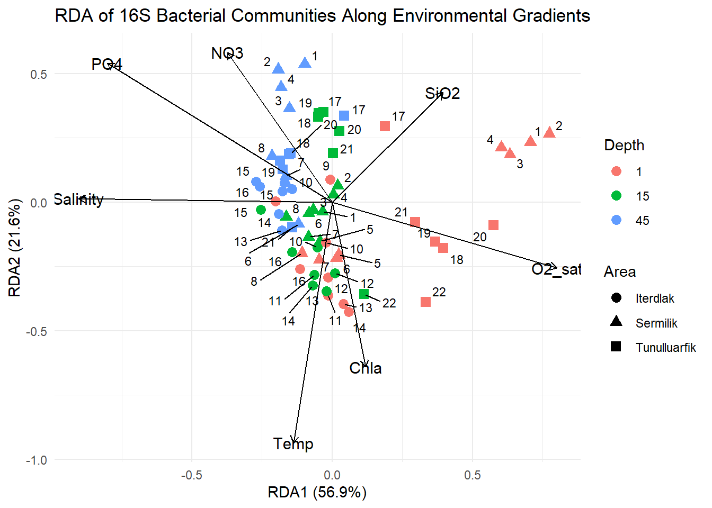
# Extract scores
scores_18s <- scores(rda_18s, display = "sites") %>% as.data.frame()
scores_18s <- cbind(scores_18s, metadata)
env_arrows <- scores(rda_18s, display = "bp") %>% as.data.frame()
eig <- rda_18s$CCA$eig
pct <- round(100 * eig / sum(eig), 1)
x_lab <- paste0("RDA1 (", pct[1], "%)")
y_lab <- paste0("RDA2 (", pct[2], "%)")
scores_18s$Depth <- as.factor(scores_18s$Depth)
ggplot(scores_18s, aes(RDA1, RDA2)) +
geom_point(aes(color = Depth, shape = Area), size = 3) +
ggrepel::geom_text_repel(aes(label = StationID), size = 3) +
geom_segment(
data = env_arrows,
inherit.aes = FALSE,
aes(x = 0, y = 0, xend = RDA1, yend = RDA2),
arrow = arrow(length = unit(0.2, "cm")),
color = "black"
) +
geom_text(
data = env_arrows,
inherit.aes = FALSE,
aes(x = RDA1, y = RDA2, label = rownames(env_arrows)),
size = 4
) +
theme_minimal() + ggtitle("RDA of 18S eukaryotic Communities Along Environmental Gradients")+
labs(
x = x_lab,
y = y_lab
)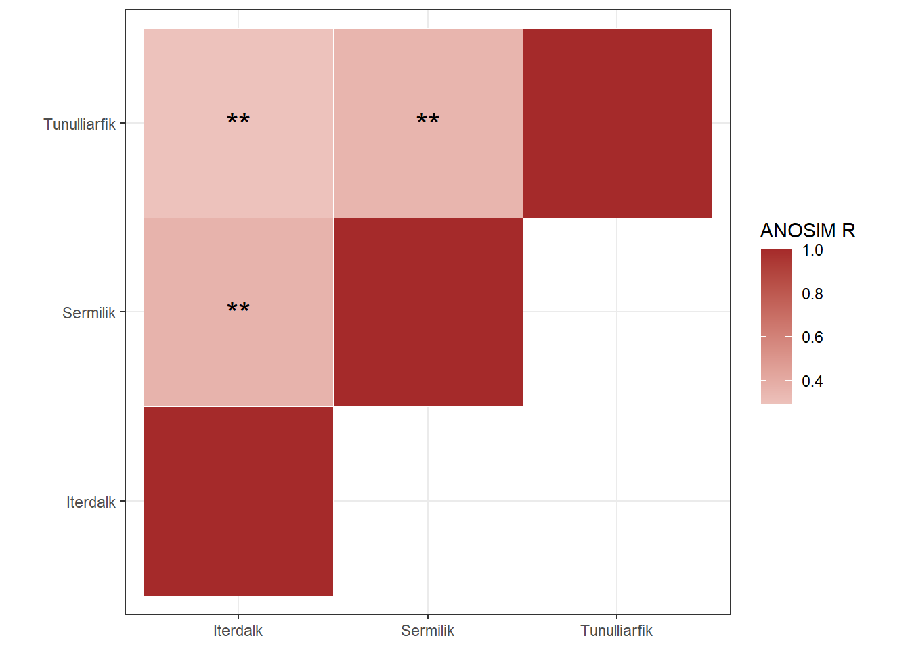
Note: What is collinearity? definition: Two or more environmental variables are strongly correlated with each other.
As part of a collinearity diagnostics, we can investigate the correlations between variables and the Variance Inflation Factor (VIF).
Let’s start with the correlation:
env <- metadata %>%
dplyr::select(Depth, Temp, Salinity, NO3,NO2, SiO2, PO4, DOC, Chla, O2_sat, a350, C1, C2, C3) %>% tidyr::drop_na()
library(corrplot)
cor_mat <- cor(env, use = "complete.obs")
corrplot(cor_mat, method = "color")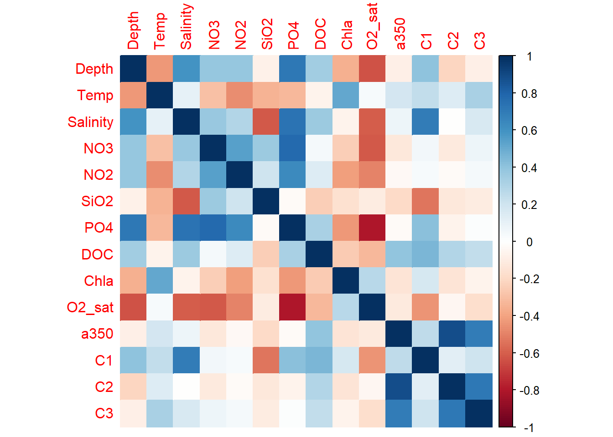
We can test VIF with vif.cca():
| VIF value | Meaning |
|---|---|
| < 5 | OK |
| 5–10 | Moderate collinearity ⚠️ |
| > 10 | Strong collinearity ❌ |
library(knitr)
vif_values <- vif.cca(rda_16s)
kable(
data.frame(
Variable = names(vif_values),
VIF = as.numeric(vif_values),
row.names = NULL
),
digits = 2,
caption = "Variance Inflation Factors (VIF) for predictor variables"
)| Variable | VIF |
|---|---|
| Salinity | 17.83 |
| Temp | 2.15 |
| NO3 | 5.50 |
| PO4 | 15.87 |
| SiO2 | 10.73 |
| Chla | 1.99 |
| O2_sat | 5.73 |
| Variable | VIF | Interpretation |
|---|---|---|
| Depth | 3.7 | ✅ OK |
| Salinity | 18.5 | ❌ Very high |
| Temperature | 2.3 | ✅ OK |
| NO3 | 5.9 | ⚠️ Borderline |
| PO4 | 13.8 | ❌ High |
| SiO2 | 8.3 | ⚠️ Moderate |
| Chla | 2.0 | ✅ OK |
What to do? We could remove redundant variables
For example: keeping these:
rda_16s_clean <- rda(
otu_16s_hel ~ Temp + O2_sat + NO3 + SiO2 + Chla + a350 + C1 + C2,
data = metadata, na.action = na.omit
)
anova(rda_16s_clean, by = "term")Permutation test for rda under reduced model
Terms added sequentially (first to last)
Permutation: free
Number of permutations: 999
Model: rda(formula = otu_16s_hel ~ Temp + O2_sat + NO3 + SiO2 + Chla + a350 + C1 + C2, data = metadata, na.action = na.omit)
Df Variance F Pr(>F)
Temp 1 0.020705 15.3366 0.001 ***
O2_sat 1 0.042136 31.2110 0.001 ***
NO3 1 0.004353 3.2242 0.017 *
SiO2 1 0.021330 15.7994 0.001 ***
Chla 1 0.003621 2.6820 0.024 *
a350 1 0.004751 3.5192 0.009 **
C1 1 0.005124 3.7953 0.007 **
C2 1 0.001537 1.1385 0.301
Residual 55 0.074252
---
Signif. codes: 0 '***' 0.001 '**' 0.01 '*' 0.05 '.' 0.1 ' ' 1Let’s check if the model explain community variation using these set of environmental variables:
anova(rda_16s_clean, permutations = 999)Permutation test for rda under reduced model
Permutation: free
Number of permutations: 999
Model: rda(formula = otu_16s_hel ~ Temp + O2_sat + NO3 + SiO2 + Chla + a350 + C1 + C2, data = metadata, na.action = na.omit)
Df Variance F Pr(>F)
Model 8 0.103556 9.5883 0.001 ***
Residual 55 0.074252
---
Signif. codes: 0 '***' 0.001 '**' 0.01 '*' 0.05 '.' 0.1 ' ' 1The answer is yes!
vif_values <- vif.cca(rda_16s_clean)
kable(
data.frame(
Variable = names(vif_values),
VIF = as.numeric(vif_values),
row.names = NULL
),
digits = 2,
caption = "Variance Inflation Factors (VIF) for predictor variables"
)| Variable | VIF |
|---|---|
| Temp | 1.71 |
| O2_sat | 2.56 |
| NO3 | 2.10 |
| SiO2 | 1.80 |
| Chla | 1.75 |
| a350 | 5.48 |
| C1 | 2.52 |
| C2 | 4.75 |
# Extract scores
scores_16s <- scores(rda_16s_clean, display = "sites") %>% as.data.frame()
meta_used <- metadata
# %>%
# drop_na(DOC)
scores_16s <- cbind(scores_16s, meta_used)
env_arrows <- scores(rda_16s_clean, display = "bp") %>% as.data.frame()
eig <- rda_16s_clean$CCA$eig
pct <- round(100 * eig / sum(eig), 1)
x_lab <- paste0("RDA1 (", pct[1], "%)")
y_lab <- paste0("RDA2 (", pct[2], "%)")
scores_16s$Depth <- as.factor(scores_16s$Depth)
ggplot(scores_16s, aes(RDA1, RDA2)) +
geom_point(aes(color = Cluster, shape = Area), size = 3) +
ggrepel::geom_text_repel(aes(label = StationID), size = 3) +
geom_segment(
data = env_arrows,
inherit.aes = FALSE,
aes(x = 0, y = 0, xend = RDA1, yend = RDA2),
arrow = arrow(length = unit(0.2, "cm")),
color = "black"
) +
geom_text(
data = env_arrows,
inherit.aes = FALSE,
aes(x = RDA1, y = RDA2, label = rownames(env_arrows)),
size = 4
) +
theme_minimal() + ggtitle("RDA of 16S Bacterial Communities Along Environmental Gradients")+
labs(
x = x_lab,
y = y_lab
)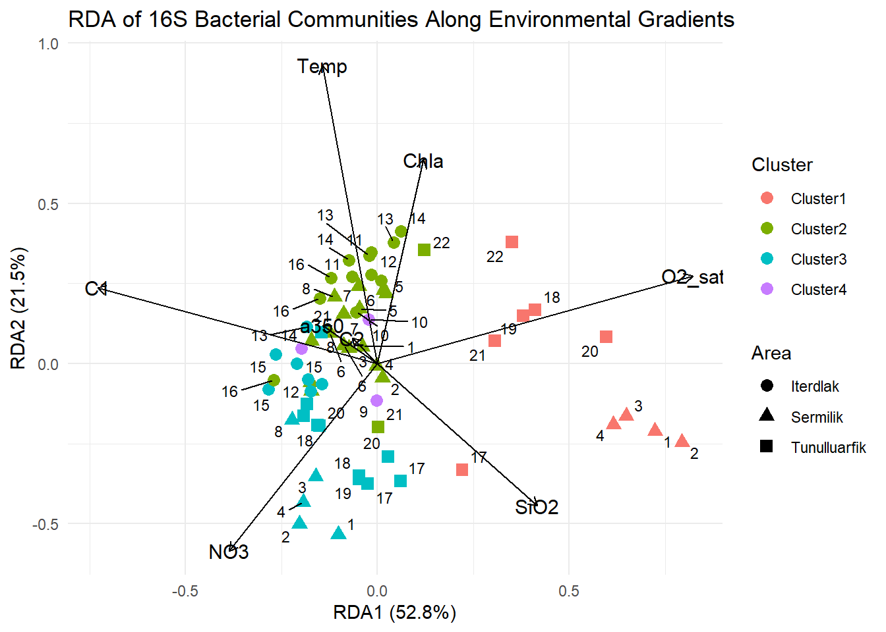
rda_18s_clean <- rda(
otu_18s_hel ~ Temp + O2_sat + NO3 + SiO2 + Chla + a350 + C1 + C2,
data = metadata, na.action = na.omit
)
anova(rda_18s_clean, by = "term")Permutation test for rda under reduced model
Terms added sequentially (first to last)
Permutation: free
Number of permutations: 999
Model: rda(formula = otu_18s_hel ~ Temp + O2_sat + NO3 + SiO2 + Chla + a350 + C1 + C2, data = metadata, na.action = na.omit)
Df Variance F Pr(>F)
Temp 1 0.031454 8.7640 0.001 ***
O2_sat 1 0.035195 9.8062 0.001 ***
NO3 1 0.005582 1.5554 0.118
SiO2 1 0.020464 5.7017 0.001 ***
Chla 1 0.008624 2.4028 0.015 *
a350 1 0.008748 2.4373 0.016 *
C1 1 0.005321 1.4826 0.137
C2 1 0.003374 0.9402 0.473
Residual 55 0.197397
---
Signif. codes: 0 '***' 0.001 '**' 0.01 '*' 0.05 '.' 0.1 ' ' 1vif_values <- vif.cca(rda_18s_clean)
kable(
data.frame(
Variable = names(vif_values),
VIF = as.numeric(vif_values),
row.names = NULL
),
digits = 2,
caption = "Variance Inflation Factors (VIF) for predictor variables"
)| Variable | VIF |
|---|---|
| Temp | 1.71 |
| O2_sat | 2.56 |
| NO3 | 2.10 |
| SiO2 | 1.80 |
| Chla | 1.75 |
| a350 | 5.48 |
| C1 | 2.52 |
| C2 | 4.75 |
# Extract scores
scores_18s <- scores(rda_18s_clean, display = "sites") %>% as.data.frame()
meta_used <- metadata
# %>%
# drop_na(DOC)
scores_18s <- cbind(scores_18s, meta_used)
env_arrows <- scores(rda_18s_clean, display = "bp") %>% as.data.frame()
eig <- rda_18s_clean$CCA$eig
pct <- round(100 * eig / sum(eig), 1)
x_lab <- paste0("RDA1 (", pct[1], "%)")
y_lab <- paste0("RDA2 (", pct[2], "%)")
scores_18s$Depth <- as.factor(scores_18s$Depth)
ggplot(scores_18s, aes(RDA1, RDA2)) +
geom_point(aes(color = Cluster, shape = Area), size = 3) +
ggrepel::geom_text_repel(aes(label = StationID), size = 3) +
geom_segment(
data = env_arrows,
inherit.aes = FALSE,
aes(x = 0, y = 0, xend = RDA1, yend = RDA2),
arrow = arrow(length = unit(0.2, "cm")),
color = "black"
) +
geom_text(
data = env_arrows,
inherit.aes = FALSE,
aes(x = RDA1, y = RDA2, label = rownames(env_arrows)),
size = 4
) +
theme_minimal() + ggtitle("RDA of 18S planktonic eukaryotic Communities Along Environmental Gradients")+
labs(
x = x_lab,
y = y_lab
)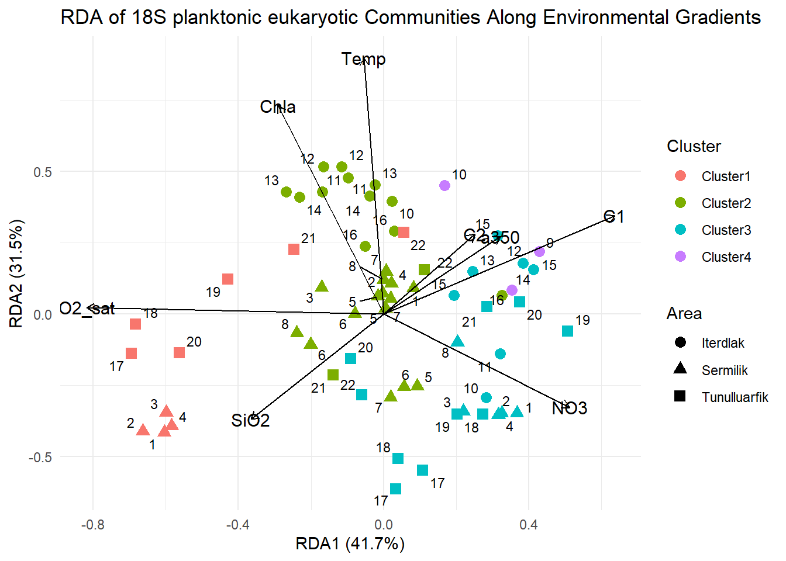
# Keep only variables you want to test
env_vars <- c(
"Temp",
"O2_sat",
"NO3",
"SiO2",
"Chla",
"a350",
"C1",
"C2"
)
metadata_rda <- metadata %>%
dplyr::select(Area, Depth, StationID, Sample_cluster, Cluster, all_of(env_vars)) %>%
drop_na()
env_scaled <- metadata_rda %>%
dplyr::select(all_of(env_vars)) %>%
scale() %>%
as.data.frame()
rownames(env_scaled) <- metadata_rda$SampleID
rda_full <- rda(otu_16s_hel ~ ., data = env_scaled)
vif_values <- vif.cca(rda_full)
vif_values Temp O2_sat NO3 SiO2 Chla a350 C1 C2
1.705829 2.562764 2.104859 1.799791 1.748050 5.477286 2.524494 4.750515 rda_null <- rda(otu_16s_hel ~ 1, data = env_scaled)
rda_fwd <- ordiR2step(
rda_null,
scope = formula(rda_full),
direction = "forward",
permutations = 999
)Step: R2.adj= 0
Call: otu_16s_hel ~ 1
R2.adjusted
<All variables> 0.52166264
+ O2_sat 0.22281579
+ C1 0.15962433
+ Temp 0.10219435
+ SiO2 0.09943955
+ NO3 0.08239840
+ Chla 0.04977660
+ a350 0.01661098
+ C2 0.01560733
<model> 0.00000000
Df AIC F Pr(>F)
+ O2_sat 1 -124.7 19.062 0.001 ***
---
Signif. codes: 0 '***' 0.001 '**' 0.01 '*' 0.05 '.' 0.1 ' ' 1
Step: R2.adj= 0.2228158
Call: otu_16s_hel ~ O2_sat
R2.adjusted
<All variables> 0.5216626
+ SiO2 0.3483026
+ Temp 0.3322202
+ C1 0.2974507
+ Chla 0.2715983
+ NO3 0.2674469
+ C2 0.2397465
+ a350 0.2356409
<model> 0.2228158
Df AIC F Pr(>F)
+ SiO2 1 -135.01 12.938 0.001 ***
---
Signif. codes: 0 '***' 0.001 '**' 0.01 '*' 0.05 '.' 0.1 ' ' 1
Step: R2.adj= 0.3483026
Call: otu_16s_hel ~ O2_sat + SiO2
R2.adjusted
<All variables> 0.5216626
+ Temp 0.4389976
+ Chla 0.3933447
+ NO3 0.3896288
+ C2 0.3714266
+ a350 0.3680004
+ C1 0.3546738
<model> 0.3483026
Df AIC F Pr(>F)
+ Temp 1 -143.66 10.862 0.001 ***
---
Signif. codes: 0 '***' 0.001 '**' 0.01 '*' 0.05 '.' 0.1 ' ' 1
Step: R2.adj= 0.4389976
Call: otu_16s_hel ~ O2_sat + SiO2 + Temp
R2.adjusted
<All variables> 0.5216626
+ NO3 0.4638162
+ C2 0.4624694
+ a350 0.4582503
+ Chla 0.4502686
+ C1 0.4454806
<model> 0.4389976
Df AIC F Pr(>F)
+ NO3 1 -145.63 3.7772 0.007 **
---
Signif. codes: 0 '***' 0.001 '**' 0.01 '*' 0.05 '.' 0.1 ' ' 1
Step: R2.adj= 0.4638162
Call: otu_16s_hel ~ O2_sat + SiO2 + Temp + NO3
R2.adjusted
<All variables> 0.5216626
+ C2 0.4843386
+ a350 0.4794829
+ Chla 0.4766906
+ C1 0.4710827
<model> 0.4638162
Df AIC F Pr(>F)
+ C2 1 -147.22 3.3481 0.018 *
---
Signif. codes: 0 '***' 0.001 '**' 0.01 '*' 0.05 '.' 0.1 ' ' 1
Step: R2.adj= 0.4843386
Call: otu_16s_hel ~ O2_sat + SiO2 + Temp + NO3 + C2
R2.adjusted
<All variables> 0.5216626
+ Chla 0.5033122
+ C1 0.4938028
<model> 0.4843386
+ a350 0.4799693
Df AIC F Pr(>F)
+ Chla 1 -148.73 3.2156 0.018 *
---
Signif. codes: 0 '***' 0.001 '**' 0.01 '*' 0.05 '.' 0.1 ' ' 1
Step: R2.adj= 0.5033122
Call: otu_16s_hel ~ O2_sat + SiO2 + Temp + NO3 + C2 + Chla
R2.adjusted
<All variables> 0.5216626
+ C1 0.5168113
<model> 0.5033122
+ a350 0.4991157
Df AIC F Pr(>F)
+ C1 1 -149.63 2.5924 0.04 *
---
Signif. codes: 0 '***' 0.001 '**' 0.01 '*' 0.05 '.' 0.1 ' ' 1
Step: R2.adj= 0.5168113
Call: otu_16s_hel ~ O2_sat + SiO2 + Temp + NO3 + C2 + Chla + C1
R2.adjusted
<All variables> 0.5216626
+ a350 0.5216626
<model> 0.5168113
Df AIC F Pr(>F)
+ a350 1 -149.43 1.568 0.154formula(rda_fwd)otu_16s_hel ~ O2_sat + SiO2 + Temp + NO3 + C2 + Chla + C1
attr(,"variables")
list(otu_16s_hel, O2_sat, SiO2, Temp, NO3, C2, Chla, C1)
attr(,"factors")
O2_sat SiO2 Temp NO3 C2 Chla C1
otu_16s_hel 0 0 0 0 0 0 0
O2_sat 1 0 0 0 0 0 0
SiO2 0 1 0 0 0 0 0
Temp 0 0 1 0 0 0 0
NO3 0 0 0 1 0 0 0
C2 0 0 0 0 1 0 0
Chla 0 0 0 0 0 1 0
C1 0 0 0 0 0 0 1
attr(,"term.labels")
[1] "O2_sat" "SiO2" "Temp" "NO3" "C2" "Chla" "C1"
attr(,"order")
[1] 1 1 1 1 1 1 1
attr(,"intercept")
[1] 1
attr(,"response")
[1] 1RsquareAdj(rda_fwd)$r.squared
[1] 0.570499
$adj.r.squared
[1] 0.5168113anova(rda_fwd, permutations = 999)Permutation test for rda under reduced model
Permutation: free
Number of permutations: 999
Model: rda(formula = otu_16s_hel ~ O2_sat + SiO2 + Temp + NO3 + C2 + Chla + C1, data = env_scaled)
Df Variance F Pr(>F)
Model 7 0.101439 10.626 0.001 ***
Residual 56 0.076369
---
Signif. codes: 0 '***' 0.001 '**' 0.01 '*' 0.05 '.' 0.1 ' ' 1anova(rda_fwd, by = "terms", permutations = 999)Permutation test for rda under reduced model
Terms added sequentially (first to last)
Permutation: free
Number of permutations: 999
Model: rda(formula = otu_16s_hel ~ O2_sat + SiO2 + Temp + NO3 + C2 + Chla + C1, data = env_scaled)
Df Variance F Pr(>F)
O2_sat 1 0.041812 30.6600 0.001 ***
SiO2 1 0.023798 17.4505 0.001 ***
Temp 1 0.017198 12.6108 0.001 ***
NO3 1 0.005716 4.1915 0.009 **
C2 1 0.004873 3.5731 0.015 *
Chla 1 0.004508 3.3054 0.008 **
C1 1 0.003535 2.5924 0.029 *
Residual 56 0.076369
---
Signif. codes: 0 '***' 0.001 '**' 0.01 '*' 0.05 '.' 0.1 ' ' 1anova(rda_fwd, by = "axis", permutations = 999)Permutation test for rda under reduced model
Forward tests for axes
Permutation: free
Number of permutations: 999
Model: rda(formula = otu_16s_hel ~ O2_sat + SiO2 + Temp + NO3 + C2 + Chla + C1, data = env_scaled)
Df Variance F Pr(>F)
RDA1 1 0.053638 39.3315 0.001 ***
RDA2 1 0.022237 16.5972 0.001 ***
RDA3 1 0.016132 12.2517 0.001 ***
RDA4 1 0.004459 3.4450 0.113
RDA5 1 0.002887 2.2684 0.268
RDA6 1 0.001480 1.1819 0.593
RDA7 1 0.000607 0.4927 0.839
Residual 56 0.076369
---
Signif. codes: 0 '***' 0.001 '**' 0.01 '*' 0.05 '.' 0.1 ' ' 1Redundancy analysis (RDA) revealed that environmental variables significantly explained variation in bacterial community composition (F = 10.63, p = 0.001). Forward selection identified oxygen saturation, silicate, temperature, nitrate, and DOM components as significant predictors, explaining 51.7% of the total variance (adjusted R²). The first two canonical axes were significant (p = 0.001), indicating strong structuring of microbial communities along environmental gradients.
anova(rda_fwd, by = "margin")Permutation test for rda under reduced model
Marginal effects of terms
Permutation: free
Number of permutations: 999
Model: rda(formula = otu_16s_hel ~ O2_sat + SiO2 + Temp + NO3 + C2 + Chla + C1, data = env_scaled)
Df Variance F Pr(>F)
O2_sat 1 0.015576 11.4217 0.001 ***
SiO2 1 0.011230 8.2350 0.001 ***
Temp 1 0.009472 6.9460 0.001 ***
NO3 1 0.005396 3.9572 0.007 **
C2 1 0.006589 4.8315 0.006 **
Chla 1 0.005065 3.7142 0.002 **
C1 1 0.003535 2.5924 0.040 *
Residual 56 0.076369
---
Signif. codes: 0 '***' 0.001 '**' 0.01 '*' 0.05 '.' 0.1 ' ' 1Marginal permutation tests indicated that oxygen saturation, silicate, temperature, nitrate, and DOM components were significant independent predictors of bacterial community composition (p < 0.05). Oxygen saturation explained the largest proportion of variation, followed by silicate and temperature.
sites <- scores(rda_fwd, display = "sites", scaling = 2) %>%
as.data.frame()
sites <- cbind(sites, metadata_rda)
env_arrows <- scores(rda_fwd, display = "bp", scaling = 2) %>%
as.data.frame()
env_arrows$Variable <- rownames(env_arrows)
# Scale arrows for visibility
arrow_multiplier <- 1.2
env_arrows$RDA1 <- env_arrows$RDA1 * arrow_multiplier
env_arrows$RDA2 <- env_arrows$RDA2 * arrow_multiplier
var_exp <- summary(rda_fwd)$cont$importance[2, 1:2] * 100
x_lab <- paste0("RDA1 (", round(var_exp[1], 1), "%)")
y_lab <- paste0("RDA2 (", round(var_exp[2], 1), "%)")
library(ggplot2)
library(ggrepel)
rda_plot <- ggplot() +
# Points (samples)
geom_point(
data = sites,
aes(x = RDA1, y = RDA2, color = Cluster, shape = Area),
size = 3
) +
# Labels
geom_text_repel(
data = sites,
aes(x = RDA1, y = RDA2, label = Sample_cluster),
size = 3
) +
# Arrows (environment)
geom_segment(
data = env_arrows,
aes(x = 0, y = 0, xend = RDA1, yend = RDA2),
arrow = arrow(length = unit(0.25, "cm")),
color = "black"
) +
# Arrow labels
geom_text_repel(
data = env_arrows,
aes(x = RDA1, y = RDA2, label = Variable),
color = "black",
size = 4,
fontface = "bold"
) +
# Your colleague’s color scheme
scale_color_manual(values = c(
"Cluster1" = "lightblue3",
"Cluster2" = "deepskyblue3",
"Cluster3" = "blue3",
"Cluster4" = "sienna2"
)) +
theme_bw() +
labs(
title = "RDA of 16S Bacterial Communities",
x = x_lab,
y = y_lab,
color = "Cluster",
shape = "Fjord"
)
rda_plot
Step: R2.adj= 0
Call: otu_18s_hel ~ 1
R2.adjusted
<All variables> 0.28482419
+ O2_sat 0.09743263
+ Temp 0.08496433
+ C1 0.06946037
+ Chla 0.06717725
+ NO3 0.05062447
+ SiO2 0.04299360
+ a350 0.02526973
+ C2 0.02046372
<model> 0.00000000
Df AIC F Pr(>F)
+ O2_sat 1 -78.289 7.8009 0.001 ***
---
Signif. codes: 0 '***' 0.001 '**' 0.01 '*' 0.05 '.' 0.1 ' ' 1
Step: R2.adj= 0.09743263
Call: otu_18s_hel ~ O2_sat
R2.adjusted
<All variables> 0.28482419
+ Temp 0.18493346
+ Chla 0.15819302
+ SiO2 0.15367766
+ C1 0.12942200
+ NO3 0.11643250
+ C2 0.11605549
+ a350 0.11522459
<model> 0.09743263
Df AIC F Pr(>F)
+ Temp 1 -83.856 7.656 0.001 ***
---
Signif. codes: 0 '***' 0.001 '**' 0.01 '*' 0.05 '.' 0.1 ' ' 1
Step: R2.adj= 0.1849335
Call: otu_18s_hel ~ O2_sat + Temp
R2.adjusted
<All variables> 0.2848242
+ SiO2 0.2350976
+ C1 0.2071167
+ C2 0.2003779
+ Chla 0.1995187
+ a350 0.1991800
+ NO3 0.1898887
<model> 0.1849335
Df AIC F Pr(>F)
+ SiO2 1 -86.98 5.0005 0.001 ***
---
Signif. codes: 0 '***' 0.001 '**' 0.01 '*' 0.05 '.' 0.1 ' ' 1
Step: R2.adj= 0.2350976
Call: otu_18s_hel ~ O2_sat + Temp + SiO2
R2.adjusted
<All variables> 0.2848242
+ Chla 0.2505373
+ C2 0.2504146
+ a350 0.2488241
+ NO3 0.2452723
+ C1 0.2434643
<model> 0.2350976
Df AIC F Pr(>F)
+ Chla 1 -87.36 2.2361 0.011 *
---
Signif. codes: 0 '***' 0.001 '**' 0.01 '*' 0.05 '.' 0.1 ' ' 1
Step: R2.adj= 0.2505373
Call: otu_18s_hel ~ O2_sat + Temp + SiO2 + Chla
R2.adjusted
<All variables> 0.2848242
+ C2 0.2707646
+ a350 0.2677694
+ NO3 0.2618878
+ C1 0.2560785
<model> 0.2505373
Df AIC F Pr(>F)
+ C2 1 -88.205 2.6365 0.003 **
---
Signif. codes: 0 '***' 0.001 '**' 0.01 '*' 0.05 '.' 0.1 ' ' 1
Step: R2.adj= 0.2707646
Call: otu_18s_hel ~ O2_sat + Temp + SiO2 + Chla + C2
R2.adjusted
<All variables> 0.2848242
+ NO3 0.2824779
+ C1 0.2754236
<model> 0.2707646
+ a350 0.2668108
Df AIC F Pr(>F)
+ NO3 1 -88.355 1.9468 0.043 *
---
Signif. codes: 0 '***' 0.001 '**' 0.01 '*' 0.05 '.' 0.1 ' ' 1
Step: R2.adj= 0.2824779
Call: otu_18s_hel ~ O2_sat + Temp + SiO2 + Chla + C2 + NO3
R2.adjusted
+ C1 0.2883952
<All variables> 0.2848242
<model> 0.2824779
+ a350 0.2787455formula(rda_fwd)otu_18s_hel ~ O2_sat + Temp + SiO2 + Chla + C2 + NO3
attr(,"variables")
list(otu_18s_hel, O2_sat, Temp, SiO2, Chla, C2, NO3)
attr(,"factors")
O2_sat Temp SiO2 Chla C2 NO3
otu_18s_hel 0 0 0 0 0 0
O2_sat 1 0 0 0 0 0
Temp 0 1 0 0 0 0
SiO2 0 0 1 0 0 0
Chla 0 0 0 1 0 0
C2 0 0 0 0 1 0
NO3 0 0 0 0 0 1
attr(,"term.labels")
[1] "O2_sat" "Temp" "SiO2" "Chla" "C2" "NO3"
attr(,"order")
[1] 1 1 1 1 1 1
attr(,"intercept")
[1] 1
attr(,"response")
[1] 1RsquareAdj(rda_fwd)$r.squared
[1] 0.3508133
$adj.r.squared
[1] 0.2824779anova(rda_fwd, permutations = 999)Permutation test for rda under reduced model
Permutation: free
Number of permutations: 999
Model: rda(formula = otu_18s_hel ~ O2_sat + Temp + SiO2 + Chla + C2 + NO3, data = env_scaled)
Df Variance F Pr(>F)
Model 6 0.11091 5.1337 0.001 ***
Residual 57 0.20525
---
Signif. codes: 0 '***' 0.001 '**' 0.01 '*' 0.05 '.' 0.1 ' ' 1anova(rda_fwd, by = "terms", permutations = 999)Permutation test for rda under reduced model
Terms added sequentially (first to last)
Permutation: free
Number of permutations: 999
Model: rda(formula = otu_18s_hel ~ O2_sat + Temp + SiO2 + Chla + C2 + NO3, data = env_scaled)
Df Variance F Pr(>F)
O2_sat 1 0.035334 9.8127 0.001 ***
Temp 1 0.031315 8.6968 0.001 ***
SiO2 1 0.019195 5.3307 0.001 ***
Chla 1 0.008410 2.3356 0.011 *
C2 1 0.009649 2.6796 0.008 **
NO3 1 0.007010 1.9468 0.029 *
Residual 57 0.205246
---
Signif. codes: 0 '***' 0.001 '**' 0.01 '*' 0.05 '.' 0.1 ' ' 1anova(rda_fwd, by = "axis", permutations = 999)Permutation test for rda under reduced model
Forward tests for axes
Permutation: free
Number of permutations: 999
Model: rda(formula = otu_18s_hel ~ O2_sat + Temp + SiO2 + Chla + C2 + NO3, data = env_scaled)
Df Variance F Pr(>F)
RDA1 1 0.049048 13.6213 0.001 ***
RDA2 1 0.037296 10.5395 0.001 ***
RDA3 1 0.010470 3.0098 0.046 *
RDA4 1 0.005850 1.7101 0.358
RDA5 1 0.004845 1.4398 0.358
RDA6 1 0.003404 1.0282 0.372
Residual 57 0.205246
---
Signif. codes: 0 '***' 0.001 '**' 0.01 '*' 0.05 '.' 0.1 ' ' 1Environmental variables explained a larger proportion of variation in bacterial (16S; adj. R² = 0.52) than eukaryotic (18S; adj. R² = 0.28) community composition. While both communities were significantly structured by oxygen, temperature, and nutrients, bacterial communities additionally showed stronger associations with DOM components, suggesting tighter coupling to biogeochemical processes.
anova(rda_fwd, by = "margin")Permutation test for rda under reduced model
Marginal effects of terms
Permutation: free
Number of permutations: 999
Model: rda(formula = otu_18s_hel ~ O2_sat + Temp + SiO2 + Chla + C2 + NO3, data = env_scaled)
Df Variance F Pr(>F)
O2_sat 1 0.016712 4.6411 0.001 ***
Temp 1 0.012747 3.5400 0.001 ***
SiO2 1 0.020247 5.6230 0.001 ***
Chla 1 0.009789 2.7186 0.004 **
C2 1 0.009594 2.6644 0.007 **
NO3 1 0.007010 1.9468 0.045 *
Residual 57 0.205246
---
Signif. codes: 0 '***' 0.001 '**' 0.01 '*' 0.05 '.' 0.1 ' ' 1Environmental drivers differed between bacterial and eukaryotic communities. While bacterial community composition was primarily structured by oxygen saturation and DOM components, eukaryotic communities were more strongly associated with silicate, temperature, and chlorophyll-a. These differences suggest tighter coupling of bacterial communities to biogeochemical processes, whereas eukaryotic communities are more influenced by phytoplankton dynamics and broader ecological interactions.
sites <- scores(rda_fwd, display = "sites", scaling = 2) %>%
as.data.frame()
sites <- cbind(sites, metadata_rda)
env_arrows <- scores(rda_fwd, display = "bp", scaling = 2) %>%
as.data.frame()
env_arrows$Variable <- rownames(env_arrows)
# Scale arrows for visibility
arrow_multiplier <- 1.2
env_arrows$RDA1 <- env_arrows$RDA1 * arrow_multiplier
env_arrows$RDA2 <- env_arrows$RDA2 * arrow_multiplier
var_exp <- summary(rda_fwd)$cont$importance[2, 1:2] * 100
x_lab <- paste0("RDA1 (", round(var_exp[1], 1), "%)")
y_lab <- paste0("RDA2 (", round(var_exp[2], 1), "%)")
library(ggplot2)
library(ggrepel)
rda_plot <- ggplot() +
# Points (samples)
geom_point(
data = sites,
aes(x = RDA1, y = RDA2, color = Cluster, shape = Area),
size = 3
) +
# Labels
geom_text_repel(
data = sites,
aes(x = RDA1, y = RDA2, label = Sample_cluster),
size = 3
) +
# Arrows (environment)
geom_segment(
data = env_arrows,
aes(x = 0, y = 0, xend = RDA1, yend = RDA2),
arrow = arrow(length = unit(0.25, "cm")),
color = "black"
) +
# Arrow labels
geom_text_repel(
data = env_arrows,
aes(x = RDA1, y = RDA2, label = Variable),
color = "black",
size = 4,
fontface = "bold"
) +
# Your colleague’s color scheme
scale_color_manual(values = c(
"Cluster1" = "lightblue3",
"Cluster2" = "deepskyblue3",
"Cluster3" = "blue3",
"Cluster4" = "sienna2"
)) +
theme_bw() +
labs(
title = "RDA of 18S Bacterial Communities",
x = x_lab,
y = y_lab,
color = "Cluster",
shape = "Fjord"
)
rda_plot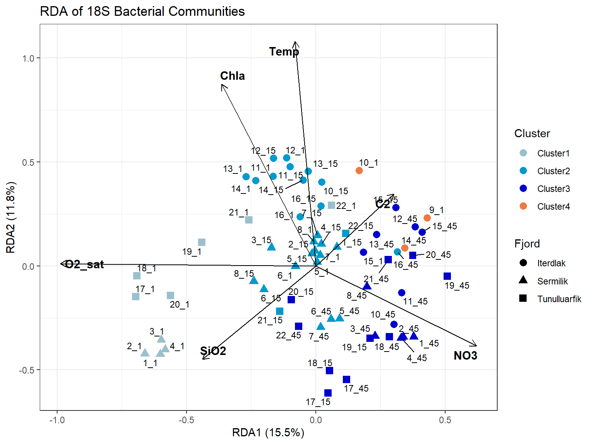
taxa_scores <- scores(rda_16s_clean, display = "species", scaling = 2) %>%
as.data.frame() %>%
rownames_to_column("Genus")
env_arrows <- scores(rda_16s_clean, display = "bp", scaling = 2) %>%
as.data.frame() %>%
rownames_to_column("variable")
taxa_scores <- taxa_scores %>%
mutate(strength = sqrt(RDA1^2 + RDA2^2))
top_taxa <- taxa_scores %>%
arrange(desc(strength)) %>%
slice(1:20)
ggplot() +
# taxa points
geom_point(data = top_taxa, aes(RDA1, RDA2), color = "blue") +
geom_text(data = top_taxa, aes(RDA1, RDA2, label = Genus), size = 3) +
# environmental arrows
geom_segment(data = env_arrows,
aes(x = 0, y = 0, xend = RDA1, yend = RDA2),
arrow = arrow(length = unit(0.25, "cm")),
color = "darkgreen") +
geom_text(data = env_arrows,
aes(x = RDA1, y = RDA2, label = variable),
color = "darkgreen",
fontface = "bold") +
theme_minimal() +
labs(title = "Environmental Drivers of Bacterial Genera (RDA)")
# options(repos = c(
# bioc = "https://bioc.r-universe.dev",
# CRAN = "https://cloud.r-project.org"))
# install.packages("SpiecEasi")
library(SpiecEasi)
se <- spiec.easi(
combined_matrix,
method = "mb",
lambda.min.ratio = 1e-2,
nlambda = 20,
sel.criterion = "stars",
pulsar.params = list(rep.num = 50)
)
cat("Number of edges:\n")Number of edges:adj <- getRefit(se)
sum(adj) / 2 # number of edges[1] 725rownames(adj) <- taxa_names_combined
colnames(adj) <- taxa_names_combinedlibrary(igraph)
graph <- graph_from_adjacency_matrix(
adj,
mode = "undirected",
diag = FALSE
)
# Label nodes by domain
V(graph)$domain <- ifelse(
grepl("^Bac_", V(graph)$name),
"Bacteria",
"Eukaryote"
)
table(V(graph)$domain)
Bacteria Eukaryote
115 123 # Get cross-domain edges
edges <- as_data_frame(graph, what = "edges")
nodes <- tibble(
name = V(graph)$name,
domain = V(graph)$domain
)
edges2 <- edges %>%
left_join(nodes, by = c("from" = "name")) %>%
rename(domain_from = domain) %>%
left_join(nodes, by = c("to" = "name")) %>%
rename(domain_to = domain)
cross_edges <- edges2 %>% filter(domain_from != domain_to)
nrow(edges2) # total edges (should match ~725)[1] 725nrow(cross_edges) # cross-domain edges[1] 278💬 Note — Cross-domain associations
A total of 278 cross-domain edges were identified out of 725 total inferred associations, representing approximately 38% of all network connections.
This substantial proportion indicates that bacterial and eukaryotic communities are not structured independently. Instead, the network reveals meaningful cross-domain covariance patterns, suggesting coordinated ecological dynamics. These associations may reflect bloom-driven bacterial responses, shared environmental filtering, or potential trophic and metabolic interactions between microbial eukaryotes and prokaryotes.
deg <- degree(graph)
cat("🔹 Overall degre of connectivity:\n")🔹 Overall degre of connectivity:summary(deg) Min. 1st Qu. Median Mean 3rd Qu. Max.
0.000 4.000 6.000 6.092 8.000 19.000 cat("🔹 Bacteria degre of connectivity:\n")🔹 Bacteria degre of connectivity:deg_cross <- degree(graph, v = V(graph)[V(graph)$domain == "Bacteria"])
summary(deg_cross) Min. 1st Qu. Median Mean 3rd Qu. Max.
0.000 5.000 6.000 6.974 9.000 19.000 cat("🔹 Eukaryote degre of connectivity:\n")🔹 Eukaryote degre of connectivity:deg_cross <- degree(graph, v = V(graph)[V(graph)$domain == "Eukaryote"])
summary(deg_cross) Min. 1st Qu. Median Mean 3rd Qu. Max.
0.000 3.000 5.000 5.268 7.000 12.000 The inferred cross-domain network comprised 238 taxa connected by 725 edges, with a median node degree of 6. Bacterial genera exhibited slightly higher connectivity (mean degree ≈ 7, maximum = 19) compared to eukaryotic genera (mean degree ≈ 5.3, maximum = 12). This pattern indicates a moderately connected but sparse network structure, without dominance by a few extreme hubs. The higher connectivity observed among bacteria suggests that prokaryotic taxa may act as integrators within the microbial community, associating with multiple eukaryotic groups. Overall, the degree distribution supports the presence of structured cross-domain coupling rather than random co-occurrence.
# Which taxa are the hubs?
deg_df <- data.frame(
taxon = V(graph)$name,
domain = V(graph)$domain,
degree = degree(graph)
)# 1) Extract taxonomy with correct keys (rownames are the taxa_names)
tax16 <- as.data.frame(tax_table(ps16_filt))
tax16$taxon <- rownames(tax16)
tax18 <- as.data.frame(tax_table(ps18_filt))
tax18$taxon <- rownames(tax18)
tax_all <- bind_rows(tax16, tax18)
# 2) Join taxonomy onto your degree table by 'taxon'
deg_tax <- deg_df %>%
left_join(tax_all, by = "taxon")
# 3) Fallback if Genus is missing
deg_tax <- deg_tax %>%
mutate(
Genus_final = case_when(
!is.na(Genus) & Genus != "" ~ Genus,
!is.na(Family) & Family != "" ~ paste0("Unclassified_", Family),
!is.na(Order) & Order != "" ~ paste0("Unclassified_", Order),
TRUE ~ "Unclassified"
)
)
# 4) View top hubs with taxonomy
deg_tax %>%
arrange(desc(degree)) %>%
dplyr::select(taxon, domain, degree, Phylum, Order, Genus_final) %>%
head(20) %>% kable() %>% kable_styling(full_width = FALSE, position = "center")| taxon | domain | degree | Phylum | Order | Genus_final |
|---|---|---|---|---|---|
| Bac_ASV286 | Bacteria | 19 | Verrucomicrobiota | Opitutales | Diplosphaera |
| Bac_ASV53 | Bacteria | 14 | Thermoproteota | Nitrosopumilales | Candidatus Nitrosopumilus |
| Bac_ASV250 | Bacteria | 14 | Bdellovibrionota | Bdellovibrionales | OM27 clade |
| Bac_ASV18 | Bacteria | 13 | Pseudomonadota | Pseudomonadales | SAR92 clade |
| Bac_ASV38 | Bacteria | 13 | Pseudomonadota | Burkholderiales | RS62 marine group |
| Bac_ASV305 | Bacteria | 13 | Bacteroidota | Chitinophagales | Aureispira |
| Bac_ASV3 | Bacteria | 12 | Pseudomonadota | Pseudomonadales | SUP05 cluster |
| Bac_ASV58 | Bacteria | 12 | Bacteroidota | Flavobacteriales | NS3a marine group |
| Bac_ASV68 | Bacteria | 12 | Bacteroidota | Flavobacteriales | Aurantivirga |
| Euk_ASV69 | Eukaryote | 12 | Myzozoa | Dinophysiales | Dinophysis |
| Bac_ASV169 | Bacteria | 11 | Pseudomonadota | Beggiatoales | Pelagibaculum |
| Bac_ASV377 | Bacteria | 11 | Planctomycetota | Pirellulales | Mariniblastus |
| Euk_ASV2 | Eukaryote | 11 | Myzozoa | Peridiniales | Scrippsiella |
| Euk_ASV12 | Eukaryote | 11 | Myzozoa | Peridiniales | Heterocapsa |
| Euk_ASV71 | Eukaryote | 11 | Ciliophora | Oligotrichida | Spirotontonia |
| Euk_ASV192 | Eukaryote | 11 | Myzozoa | Peridiniales | Pentapharsodinium |
| Bac_ASV5 | Bacteria | 10 | Pseudomonadota | Rhodobacterales | Planktomarina |
| Bac_ASV8 | Bacteria | 10 | Pseudomonadota | Pseudomonadales | Kineobactrum |
| Bac_ASV71 | Bacteria | 10 | Bacteroidota | Flavobacteriales | NS4 marine group |
| Bac_ASV91 | Bacteria | 10 | Pseudomonadota | Rhodobacterales | Octadecabacter |
library(igraph)
library(tidygraph)
library(ggraph)
# Ensure graph has domain attribute
V(graph)$domain <- ifelse(grepl("^Bac_", V(graph)$name), "Bacteria", "Eukaryote")
# Edge list with endpoints
ed <- as_data_frame(graph, what = "edges")
# Domains per endpoint
nodes_df <- tibble(name = V(graph)$name, domain = V(graph)$domain)
ed2 <- ed %>%
left_join(nodes_df, by = c("from" = "name")) %>% rename(domain_from = domain) %>%
left_join(nodes_df, by = c("to" = "name")) %>% rename(domain_to = domain)
# Keep only cross-domain edges
cross_ed <- ed2 %>% filter(domain_from != domain_to)
# Keep only nodes involved in cross-domain edges
cross_nodes <- unique(c(cross_ed$from, cross_ed$to))
graph_cross <- induced_subgraph(graph, vids = cross_nodes)
# Remove isolates just in case
graph_cross <- delete_vertices(graph_cross, degree(graph_cross) == 0)
# Compute degrees in the cross network
deg_cross <- degree(graph_cross)
# Create lookup table
genus_lookup <- deg_tax %>%
dplyr::select(taxon, Genus_final) %>%
distinct()
# Convert to dataframe
nodes_df <- data.frame(name = V(graph_cross)$name)
# Join genus info
nodes_df <- nodes_df %>%
left_join(genus_lookup, by = c("name" = "taxon"))
# Assign genus label to graph
V(graph_cross)$genus <- nodes_df$Genus_final
V(graph_cross)$genus_clean <- gsub("^Unclassified_", "", V(graph_cross)$genus)
deg_cross <- degree(graph_cross)
top_n <- 12
top_nodes <- names(sort(deg_cross, decreasing = TRUE))[1:top_n]
V(graph_cross)$label <- ifelse(
V(graph_cross)$name %in% top_nodes,
V(graph_cross)$genus_clean,
NA
)
set.seed(1)
ggraph(as_tbl_graph(graph_cross), layout = "fr") +
geom_edge_link(alpha = 0.25, linewidth = 0.3) +
geom_node_point(aes(color = domain, size = deg_cross), alpha = 0.9) +
geom_node_text(aes(label = label), repel = TRUE, size = 3) +
scale_size(range = c(2, 8)) +
theme_void() +
labs(
title = "Cross-domain association network (Genus level)",
color = "Domain"
) +
theme(legend.position = "bottom")
library(visNetwork)
# Choose which graph to explore:
g <- graph_cross # or use graph for full network
# Node table
nodes <- data.frame(
id = V(g)$name,
label = ifelse(!is.na(V(g)$genus_clean), V(g)$genus_clean, V(g)$name),
group = V(g)$domain,
value = degree(g) # node size in visNetwork
)
# Edge table
edges <- as_data_frame(g, what = "edges") %>%
transmute(from = from, to = to)
visNetwork(nodes, edges, height = "800px", width = "100%") %>%
visOptions(
highlightNearest = TRUE,
nodesIdSelection = TRUE
) %>%
visInteraction(
navigationButtons = TRUE,
zoomView = TRUE
) %>%
visPhysics(stabilization = TRUE)This is great but it’s too complex so let’s filter out nodes that have degree < 11.
# Calculate node degree
deg <- degree(graph_cross)
# Keep nodes with degree > 3
nodes_keep <- names(deg[deg > 10])
# Create filtered graph
graph_filtered <- induced_subgraph(graph_cross, vids = nodes_keep)
# Check new size
vcount(graph_filtered)[1] 14ecount(graph_filtered)[1] 12# Calculate node degree
deg <- degree(graph_cross)
# Keep nodes with degree > 3
nodes_keep <- names(deg[deg > 10])
# Create filtered graph
graph_filtered <- induced_subgraph(graph_cross, vids = nodes_keep)
# Check new size
vcount(graph_filtered)[1] 14ecount(graph_filtered)[1] 12nodes <- data.frame(
id = V(graph_filtered)$name,
label = ifelse(!is.na(V(graph_filtered)$genus_clean),
V(graph_filtered)$genus_clean,
V(graph_filtered)$name),
group = V(graph_filtered)$domain,
value = degree(graph_filtered)
)
edges <- as_data_frame(graph_filtered, what = "edges") %>%
transmute(from = from, to = to)
visNetwork(nodes, edges, height = "800px", width = "100%") %>%
visOptions(
highlightNearest = TRUE,
nodesIdSelection = TRUE
) %>%
visInteraction(
navigationButtons = TRUE,
zoomView = TRUE
) %>%
visPhysics(stabilization = TRUE)Bacterial hubs (blue) dominate the network core. These taxa are typical marine heterotrophic bacteria associated with phytoplankton or organic matter degradation.
The central structure appears around: RS62 marine group → Aureispira → Mariniblastus → OM27
Eukaryotes (yellow) appear as satellites linked to bacterial hubs. They connect mainly through bacterial hubs rather than directly to each other.
That pattern suggests that bacterial communities may be responding to eukaryotic blooms or shared environmental drivers.
To better understand the ecological structure of the inferred 16S–18S association network, we examined cross-domain partner preference, i.e. which bacterial taxa were most frequently associated with eukaryotic taxa and vice versa. This allows identification of potential bacterial hubs linked to particular protistan or metazoan groups, and helps reveal whether the network is structured around specific cross-domain partnerships rather than diffuse associations.
# Prepare node metadata from network + taxonomy
nodes_df <- data.frame(
taxon = V(graph)$name,
domain = V(graph)$domain,
degree = degree(graph),
stringsAsFactors = FALSE
) %>%
left_join(
deg_tax %>%
dplyr::select(taxon, Phylum, Class, Order, Family, Genus_final),
by = "taxon"
)
# Clean label column
nodes_df <- nodes_df %>%
mutate(
Label = ifelse(!is.na(Genus_final) & Genus_final != "",
Genus_final,
taxon)
)
# Prepare edge table and retain cross-domain edges only
edges_df <- as_data_frame(graph, what = "edges") %>%
left_join(nodes_df %>% dplyr::select(taxon, domain, Label, Phylum, Class, Order, Family),
by = c("from" = "taxon")) %>%
rename(domain_from = domain,
label_from = Label,
phylum_from = Phylum,
class_from = Class,
order_from = Order,
family_from = Family) %>%
left_join(nodes_df %>% dplyr::select(taxon, domain, Label, Phylum, Class, Order, Family),
by = c("to" = "taxon")) %>%
rename(domain_to = domain,
label_to = Label,
phylum_to = Phylum,
class_to = Class,
order_to = Order,
family_to = Family)
cross_edges <- edges_df %>%
filter(domain_from != domain_to)
nrow(cross_edges)[1] 278# Standardize edge direction:
# bacteria always on the left, eukaryotes on the right
cross_pref <- cross_edges %>%
mutate(
bacteria = ifelse(domain_from == "Bacteria", label_from, label_to),
bacteria_family = ifelse(domain_from == "Bacteria", family_from, family_to),
bacteria_order = ifelse(domain_from == "Bacteria", order_from, order_to),
eukaryote = ifelse(domain_from == "Eukaryote", label_from, label_to),
euk_family = ifelse(domain_from == "Eukaryote", family_from, family_to),
euk_order = ifelse(domain_from == "Eukaryote", order_from, order_to)
)
# Count how many times each bacterial genus is connected
# to each eukaryotic order
partner_pref <- cross_pref %>%
count(bacteria, euk_order, sort = TRUE) %>%
filter(!is.na(euk_order))
head(partner_pref, 20) bacteria euk_order n
1 Amylibacter Bacillariales 2
2 Candidatus Nitrosopumilus Peridiniales 2
3 Candidatus Nitrosopumilus Suessiales 2
4 Crocinitomix Gymnodiniales 2
5 Diplosphaera Prymnesiales 2
6 Luminiphilus Gonyaulacales 2
7 Marimicrobium Pyrenomonadales 2
8 Mariniblastus Oligotrichida 2
9 NS3a marine group Gymnodiniales 2
10 OM27 clade Haptorida 2
11 OM27 clade Prymnesiales 2
12 Rubritalea Pyrenomonadales 2
13 Acinetobacter Gymnodiniales 1
14 Aliivibrio Bacillariales 1
15 Aliivibrio Chromulinales 1
16 Allofrancisella Choreotrichida 1
17 Allofrancisella Peridiniales 1
18 Allofrancisella Suessiales 1
19 Arcobacter Phaeocystales 1
20 Arcobacter Rhizosoleniales 1# Top 20 most frequent bacteria–eukaryote order associations
partner_pref %>%
arrange(desc(n)) %>%
slice(1:20) bacteria euk_order n
1 Amylibacter Bacillariales 2
2 Candidatus Nitrosopumilus Peridiniales 2
3 Candidatus Nitrosopumilus Suessiales 2
4 Crocinitomix Gymnodiniales 2
5 Diplosphaera Prymnesiales 2
6 Luminiphilus Gonyaulacales 2
7 Marimicrobium Pyrenomonadales 2
8 Mariniblastus Oligotrichida 2
9 NS3a marine group Gymnodiniales 2
10 OM27 clade Haptorida 2
11 OM27 clade Prymnesiales 2
12 Rubritalea Pyrenomonadales 2
13 Acinetobacter Gymnodiniales 1
14 Aliivibrio Bacillariales 1
15 Aliivibrio Chromulinales 1
16 Allofrancisella Choreotrichida 1
17 Allofrancisella Peridiniales 1
18 Allofrancisella Suessiales 1
19 Arcobacter Phaeocystales 1
20 Arcobacter Rhizosoleniales 1# Identify important bacteria
top_bacteria <- partner_pref %>%
group_by(bacteria) %>%
summarise(total = sum(n)) %>%
filter(total >= 2) %>%
pull(bacteria)
# Identify important eukaryotic orders
top_euk <- partner_pref %>%
group_by(euk_order) %>%
summarise(total = sum(n)) %>%
filter(total >= 2) %>%
pull(euk_order)
heat_df2 <- partner_pref %>%
filter(
bacteria %in% top_bacteria,
euk_order %in% top_euk
)
ggplot(heat_df2, aes(x = euk_order, y = bacteria, fill = n)) +
geom_tile(color = "white") +
scale_fill_gradient(low = "grey90", high = "steelblue") +
theme_minimal() +
theme(axis.text.x = element_text(angle = 45, hjust = 1))
To explore whether the cross-domain association network is organized differently among fjords, we can visualise fjord-specific core subnetworks derived from the global 16S–18S cross-domain network. For each fjord, let’s retain taxa present in samples from that fjord, extract the corresponding induced subgraph, and then filter to keep only highly connected nodes (core taxa). This approach provides an exploratory view of the dominant cross-domain network structure within each fjord while avoiding the instability associated with re-inferring sparse networks from small fjord-specific sample sets.
# Make sure sample order is identical between filtered 16S and 18S objects
stopifnot(all(sample_names(ps16_filt) == sample_names(ps18_filt)))
# Extract count matrices with taxa in rows
mat16 <- as(otu_table(ps16_filt), "matrix")
mat18 <- as(otu_table(ps18_filt), "matrix")
if (!taxa_are_rows(ps16_filt)) mat16 <- t(mat16)
if (!taxa_are_rows(ps18_filt)) mat18 <- t(mat18)
# Metadata
meta <- data.frame(sample_data(ps16_filt))
meta$Sample <- rownames(meta)
# Fjord names
fjords <- sort(unique(meta$Fjord))
fjords[1] "Iterdalk" "Sermilik" "Tunulliarfik"make_fjord_network <- function(fjord_name,
graph_obj = NULL,
meta_df = NULL,
mat16_in = NULL,
mat18_in = NULL,
degree_threshold = 5,
min_taxon_sum = 1) {
if (is.null(graph_obj)) graph_obj <- graph_cross
if (is.null(meta_df)) meta_df <- meta
if (is.null(mat16_in)) mat16_in <- mat16
if (is.null(mat18_in)) mat18_in <- mat18
# Samples from that fjord
samp <- meta_df$Sample[meta_df$Fjord == fjord_name]
# Taxa present in that fjord
bac_present <- rownames(mat16_in)[rowSums(mat16_in[, samp, drop = FALSE]) >= min_taxon_sum]
euk_present <- rownames(mat18_in)[rowSums(mat18_in[, samp, drop = FALSE]) >= min_taxon_sum]
taxa_present <- unique(c(bac_present, euk_present))
# Keep only taxa that are also in the global cross-domain graph
taxa_present <- intersect(taxa_present, V(graph_obj)$name)
# Induced fjord subgraph
g_fjord <- induced_subgraph(graph_obj, vids = taxa_present)
# Remove isolated nodes
g_fjord <- delete_vertices(g_fjord, degree(g_fjord) == 0)
if (vcount(g_fjord) == 0) return(NULL)
# Core filtering by degree within fjord subgraph
deg_fjord <- degree(g_fjord)
keep_nodes <- names(deg_fjord[deg_fjord > degree_threshold])
g_core <- induced_subgraph(g_fjord, vids = keep_nodes)
g_core <- delete_vertices(g_core, degree(g_core) == 0)
if (vcount(g_core) == 0) return(NULL)
# Build nodes table
nodes <- data.frame(
id = V(g_core)$name,
label = ifelse(!is.na(V(g_core)$genus_clean),
V(g_core)$genus_clean,
V(g_core)$name),
group = V(g_core)$domain,
value = degree(g_core),
stringsAsFactors = FALSE
)
nodes$color <- ifelse(nodes$group == "Bacteria", "#2C7FB8", "#D95F0E")
# Build edge table
edges <- as_data_frame(g_core, what = "edges") %>%
transmute(from = from, to = to)
visNetwork(nodes, edges, height = "750px", width = "100%") %>%
visNodes(borderWidth = 1) %>%
visOptions(
highlightNearest = TRUE,
nodesIdSelection = TRUE
) %>%
visInteraction(
navigationButtons = TRUE,
zoomView = TRUE,
dragNodes = TRUE,
dragView = TRUE
) %>%
visPhysics(stabilization = TRUE) %>%
visLayout(randomSeed = 7) %>%
visLegend()
}make_fjord_network("Sermilik", degree_threshold = 10)make_fjord_network("Iterdalk", degree_threshold = 10)make_fjord_network("Tunulliarfik", degree_threshold = 10)library(tidyverse)
# Load DADA2 sequence table
seqtab <- readRDS("data/16S/seqtab_nochim.rds")
# Remove controls
seqtab <- seqtab[!rownames(seqtab) %in% c("65_zymo_positive", "66_Extraction_negative"), ]
# Extract ASV sequences
asv_seqs <- colnames(seqtab)
# Make simple stable ASV IDs
asv_ids <- paste0("ASV", seq_along(asv_seqs))
# Save a lookup table
asv_map <- data.frame(
ASV = asv_ids,
Sequence = asv_seqs,
stringsAsFactors = FALSE
)
write.csv(asv_map, "ASV_map.csv", row.names = FALSE, quote = FALSE)
# Rename seqtab columns from raw sequences to ASV IDs
colnames(seqtab) <- asv_ids
# PICRUSt2 TSV input should have ASVs as rows, samples as columns
picrust_tab <- t(seqtab)
# Write abundance table
write.table(
picrust_tab,
file = "picrust2_input.tsv",
sep = "\t",
quote = FALSE,
col.names = NA
)
# Write representative sequences FASTA
con <- file("picrust2_seqs.fna", open = "w")
for (i in seq_along(asv_ids)) {
writeLines(paste0(">", asv_ids[i]), con)
writeLines(asv_seqs[i], con)
}
close(con)picrust2_pipeline.py \
-s picrust2_seqs.fna \
-i picrust2_input.tsv \
-o picrust2_out \
--threads 30 \
--stratifiedPICRUSt2 is giving you three levels of functional prediction from your 16S data:
They are related, but they are not the same kind of annotation. PICRUSt2 predicts gene-family abundances such as KO and EC, and then uses EC-based mappings to infer higher-level pathway abundances/coverage.
A pathway is a higher-level biological process made of multiple enzymatic steps, such as amino-acid biosynthesis, glycolysis-related routes, sulfur metabolism, or degradation pathways. In PICRUSt2, pathway predictions are typically MetaCyc pathways, and they are inferred from the predicted EC content.
# If you want to analyze the abundance of KEGG pathways instead of KO within the pathway, please set `ko_to_kegg` to TRUE.
# KEGG pathways typically have more descriptive explanations.
library(readr)
library(ggpicrust2)
library(tibble)
library(tidyverse)
library(ggprism)
library(patchwork)
# Load necessary data: abundance data and metadata
pathway_abun <- read_tsv("data/16S/pathways_out/path_abun_unstrat_descrip.tsv.gz",
show_col_types = FALSE)
# keep pathway annotations separately
pathway_info <- pathway_abun %>%
dplyr::select(pathway, description)
# keep only abundance columns and convert to matrix for downstream analysis
path_mat <- pathway_abun %>%
dplyr::select(-description) %>%
column_to_rownames("pathway") %>%
as.matrix()
metadata <- readxl::read_xlsx("data/16S/metadata_16S.xlsx") %>%
filter(!Name %in% c("65_zymo_positive", "66_Extraction_negative")) %>%
mutate(
Name = as.character(Name),
Station = factor(Station),
Depth = factor(Depth, levels = c("1", "15", "45")),
Fjord = factor(Fjord),
Date = as.Date(as.numeric(Date), origin = "1899-12-30"),
Time = as.POSIXct(as.numeric(Time) * 86400, origin = "1970-01-01", tz = "UTC"),
Time = format(Time, "%H:%M:%S"),
Water_mass = factor(Water_mass)
)
# Normalise abundances
path_rel <- apply(path_mat, 2, function(x) x / sum(x))library(vegan)
set.seed(42)
bc <- vegdist(t(path_rel), method = "bray")
ord <- metaMDS(bc, trace = 0)
ord_df <- as.data.frame(ord$points) %>%
rownames_to_column("Name") %>%
left_join(metadata, by = "Name")
ggplot(ord_df, aes(MDS1, MDS2, color = Depth)) +
geom_point(size = 3) +
theme_bw()
ggplot(ord_df, aes(MDS1, MDS2, color = Water_mass)) +
geom_point(size = 3) +
theme_bw()library(pheatmap)
top_ids <- names(sort(rowMeans(path_mat), decreasing = TRUE))[1:30]
top_mat <- path_rel[top_ids, ]
top_labels <- pathway_info %>%
filter(pathway %in% top_ids) %>%
distinct(pathway, description)
# make sure label order matches matrix row order
top_labels <- top_labels %>%
slice(match(rownames(top_mat), pathway))
rownames(top_mat) <- paste(top_labels$description)
sample_annot <- metadata %>%
filter(Name %in% colnames(top_mat)) %>%
column_to_rownames("Name") %>%
dplyr::select(Depth, Fjord, Water_mass)
ph <- pheatmap(
top_mat,
annotation_col = sample_annot,
fontsize_col = 5, # smaller column labels
angle_col = 45 # rotate labels
)Below is the list of the samples that belong to the cluster on the right side of the heatmap figure above:
cl <- cutree(ph$tree_col, k = 2)
ordered_samples <- colnames(top_mat)[ph$tree_col$order]
right_samples_path <- ordered_samples[ordered_samples %in% names(cl[cl == 1])]
right_samples_path [1] "43_St15_D45" "35_St13_D1" "36_St13_D15" "42_St15_D15" "60_St21_D15"
[6] "32_St12_D1" "38_St14_D1" "29_St11_D1" "33_St12_D15" "30_St11_D15"
[11] "39_St14_D15" "41_St15_D1" "44_St16_D1" "45_St16_D15" "56_St20_D1"
[16] "59_St21_D1" "01_St1_D1" "04_St2_D1" "07_St3_D1" "10_St4_D1" These samples are almost exclusively from 1 and 15 m… (there is one sample from 45 m)
A KO groups homologous genes that are considered to perform an equivalent function in the KEGG system. So a KO is usually the closest of the three outputs to a specific functional gene family. For example, a KO might correspond to a transporter subunit, an enzyme protein, or another functionally defined gene product.
# Load necessary data:
ko <- read_tsv("data/16S/KO_metagenome_out/pred_metagenome_unstrat_descrip.tsv.gz",
show_col_types = FALSE) %>% rename(KO_ID = `function`)
# keep pathway annotations separately
ko_info <- ko %>%
dplyr::select(KO_ID, description)
nitrogen_kos <- c(
# Nitrogen fixation
"K02586", # nifH
"K02588", # nifD
"K02591", # nifK
# Ammonium transport / assimilation
"K03320", # amtB
"K01915", # glnA
# Nitrification: ammonia oxidation
"K10944", # amoA
"K10945", # amoB
"K10946", # amoC
"K10535", # hao
# Nitrification: nitrite oxidation
"K00370", # nxrA / narG
"K00371", # nxrB / narH
# Membrane-bound nitrate reductase (Nar)
"K00370", # narG / nxrA
"K00371", # narH / nxrB
"K00374", # narI
"K00373", # narJ
# Periplasmic nitrate reductase (Nap)
"K02567", # napA
"K02568", # napB
"K02569", # napC
"K02570", # napD
# Assimilatory nitrate/nitrite reduction
"K00372", # nasA
"K00366", # nirA
# Denitrification
"K00368", # nirK
"K15864", # nirS
"K04561", # norB
"K02305", # norC
"K00376", # nosZ
# DNRA
"K03385", # nrfA
"K15876", # nrfH
"K00362", # nirB
"K00363", # nirD
# Anammox
"K20932", # hzsA
"K20933", # hzsB
"K20934", # hzsC
"K20935" # hdh
) |> unique()
ko_n <- ko %>%
mutate(KO = sub("ko:", "", KO_ID)) %>%
filter(KO %in% nitrogen_kos)
nitrogen_kos_core <- c(
"K02586", # nifH
"K10944", # amoA
"K10535", # hao
"K00368", # nirK
"K15864", # nirS
"K04561", # norB
"K00376", # nosZ
"K03385", # nrfA
"K20935" # hdh
)
ko_n_core <- ko %>%
mutate(KO = sub("ko:", "", KO_ID)) %>%
filter(KO %in% nitrogen_kos_core)
# keep only abundance columns and convert to matrix for downstream analysis
ko_n_mat <- ko_n %>%
dplyr::select(-description, -KO) %>%
column_to_rownames("KO_ID") %>%
as.matrix()
ko_n_core_mat <- ko_n_core %>%
dplyr::select(-description, -KO) %>%
column_to_rownames("KO_ID") %>%
as.matrix()
# Normalise abundances
ko_rel <- apply(ko_n_mat, 2, function(x) x / sum(x))top_ids <- names(sort(rowMeans(ko_n_mat), decreasing = TRUE))
top_mat <- ko_rel[top_ids, ]
top_labels <- ko_info %>%
filter(KO_ID %in% top_ids) %>%
distinct(KO_ID, description)
# make sure label order matches matrix row order
top_labels <- top_labels %>%
slice(match(rownames(top_mat), KO_ID))
rownames(top_mat) <- paste(top_labels$description)
sample_annot <- metadata %>%
filter(Name %in% colnames(top_mat)) %>%
column_to_rownames("Name") %>%
dplyr::select(Depth, Fjord, Water_mass)
ph <- pheatmap(
top_mat,
annotation_col = sample_annot,
fontsize_col = 8, # smaller column labels
angle_col = 45 # rotate labels
)
Below is the list of the samples that belong to the cluster on the right side of the heatmap figure above:
cl <- cutree(ph$tree_col, k = 2)
ordered_samples <- colnames(top_mat)[ph$tree_col$order]
right_samples_ko <- ordered_samples[ordered_samples %in% names(cl[cl == 1])]
right_samples_ko [1] "36_St13_D15" "42_St15_D15" "35_St13_D1" "60_St21_D15" "01_St1_D1"
[6] "32_St12_D1" "38_St14_D1" "50_St18_D1" "53_St19_D1" "05_St2_D15"
[11] "16_St6_D1" "34_St12_D45" "02_St1_D15" "13_St5_D1" "43_St15_D45"
[16] "30_St11_D15" "39_St14_D15" "44_St16_D1" "04_St2_D1" "07_St3_D1"
[21] "10_St4_D1" "29_St11_D1" "56_St20_D1" "45_St16_D15" "41_St15_D1"
[26] "33_St12_D15" "59_St21_D1" Let’s see how many of these samples clustered in the right side of this plot are the same as those also cluster at the right of the heatmap of pathways:
common_samples <- intersect(right_samples_ko, right_samples_path)
common_samples [1] "36_St13_D15" "42_St15_D15" "35_St13_D1" "60_St21_D15" "01_St1_D1"
[6] "32_St12_D1" "38_St14_D1" "43_St15_D45" "30_St11_D15" "39_St14_D15"
[11] "44_St16_D1" "04_St2_D1" "07_St3_D1" "10_St4_D1" "29_St11_D1"
[16] "56_St20_D1" "45_St16_D15" "41_St15_D1" "33_St12_D15" "59_St21_D1" It seems that all the 20 samples from the right-cluster of the pathway heatmap are again present here. What do the have in common? Likely their taxonomical diversity will be similar. I could group a variable to separate these from the rest of the samples and look at their spatial distribution…
top_ids <- names(sort(rowMeans(ko_n_core_mat), decreasing = TRUE))
top_mat <- ko_rel[top_ids, ]
top_labels <- ko_info %>%
filter(KO_ID %in% top_ids) %>%
distinct(KO_ID, description)
# make sure label order matches matrix row order
top_labels <- top_labels %>%
slice(match(rownames(top_mat), KO_ID))
rownames(top_mat) <- paste(top_labels$description)
sample_annot <- metadata %>%
filter(Name %in% colnames(top_mat)) %>%
column_to_rownames("Name") %>%
dplyr::select(Depth, Fjord, Water_mass)
ph <- pheatmap(
top_mat,
annotation_col = sample_annot,
fontsize_col = 8, # smaller column labels
angle_col = 45 # rotate labels
)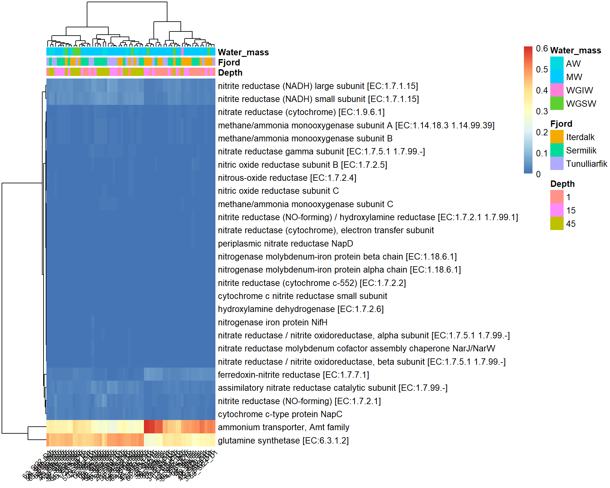
ggpicrust2 was built specifically for PICRUSt2-derived functional profiles and provides a clean way to do differential abundance testing, annotation, and visualization of KO / EC / pathway outputs in R.
# Run ggpicrust2 with input file path
results_file_input <- ggpicrust2(file = abundance_file,
metadata = metadata,
group = "your_group_column", # For example dataset, group = "Environment"
pathway = "KO",
daa_method = "LinDA",
ko_to_kegg = TRUE,
order = "pathway_class",
p_values_bar = TRUE,
x_lab = "pathway_name")
# Run ggpicrust2 with imported data.frame
abundance_data <- read_delim(abundance_file, delim = "\t", col_names = TRUE, trim_ws = TRUE)
# Run ggpicrust2 with input data
results_data_input <- ggpicrust2(data = abundance_data,
metadata = metadata,
group = "your_group_column", # For example dataset, group = "Environment"
pathway = "KO",
daa_method = "LinDA",
ko_to_kegg = TRUE,
order = "pathway_class",
p_values_bar = TRUE,
x_lab = "pathway_name")
# Access the plot and results dataframe for the first DA method
example_plot <- results_file_input[[1]]$plot
example_results <- results_file_input[[1]]$results
# Use the example data in ggpicrust2 package
data(ko_abundance)
data(metadata)
results_file_input <- ggpicrust2(data = ko_abundance,
metadata = metadata,
group = "Environment",
pathway = "KO",
daa_method = "LinDA",
ko_to_kegg = TRUE,
order = "pathway_class",
p_values_bar = TRUE,
x_lab = "pathway_name")
# Analyze the EC or MetaCyc pathway
data(metacyc_abundance)
results_file_input <- ggpicrust2(data = metacyc_abundance,
metadata = metadata,
group = "Environment",
pathway = "MetaCyc",
daa_method = "LinDA",
ko_to_kegg = FALSE,
order = "group",
p_values_bar = TRUE,
x_lab = "description")
results_file_input[[1]]$plot
results_file_input[[1]]$results